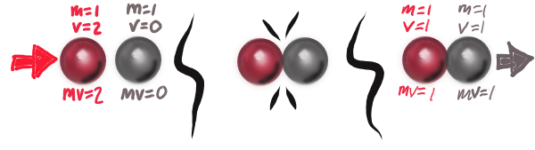
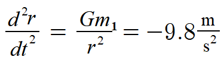
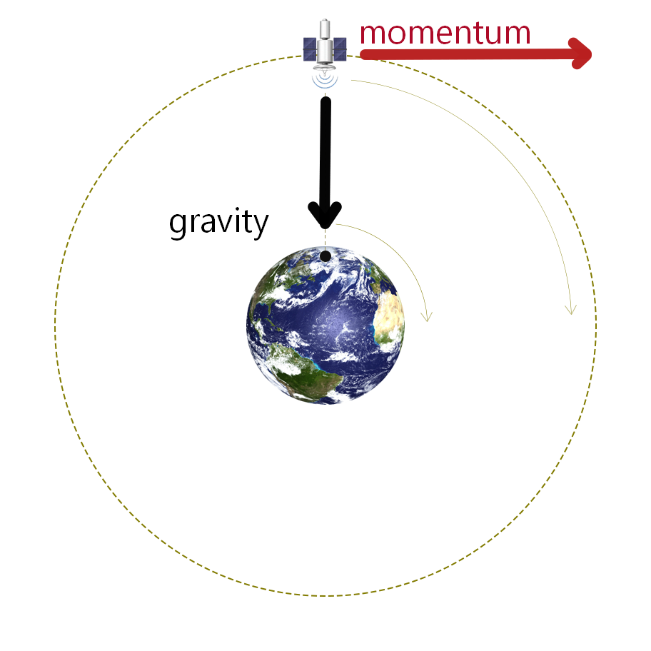

Figure 3-7. Source: Wikimedia Commons
In this section, we will explore the familiar world in ways that will prepare us to understand the surprising facts of modern physics, which deal with phenomena that are outside our day-to-day experience. I hope to provide you as the reader with some I never noticed that!
and I never thought of that!
moments. This volume will take a leisurely stroll through the highlights of high-school level math and the basics of classical physics. We will be asking important questions about our perception and measurement of the everyday world, and the answers (or even the questions themselves) may come as a surprise.
Perhaps the most important lesson we will learn in this section is the distinction between:
That's a strange story,
Achilles said. Do you suppose that Albert Einstein really did meet Henry Ford?
No, I don't think it likely,
the Tortoise answered, looking up from an electronic tablet.
What are you reading?
Achilles asked.
Something I found by the roadside yesterday. Can you believe someone would simply discard such a thing? It's a wirelessly-networked computer. It has access to this encyclopedia, the likes of which I have never seen, and to top it all off, its content is community-owned and -created rather than being squeezed for profit by a horde of bureaucrats who'd be perfectly happy to destroy this planet and everyone on it.
No, I mean what are you reading about,
Achilles clarified.
Oh, of course.
she quoted.
Fugue: a contrapuntal compositional technique in two or more voices, built on a theme that is introduced at the beginning in imitation, and which recurs frequently in the course of the composition. Not to be confused with fugue state, which is a breakdown of memory awareness, identity, or perception,
Are dreams and reveries fugue states, or is a fugue state more like a fit?
Achilles asked, pretending to keep up.
I don't know that there is a clear distinction,
the Tortoise said. She pondered this for a moment before going on: I suppose there may be fugues of the first type, in which there are meaningful repeated themes to be found; and fugues of the second type, in which one merely forgets oneself in an endless network of trivial associations.
You mean, for instance, the way I blathered on yesterday about how Iain Glen, who played Hamlet in Rosencrantz and Guildenstern Are Dead, looks a little like Alec Newman, who played Paul Muad'dib in Frank Herbert's Dune; and that the name Muad'dib refers to a mouse, and that Hamlet called his variation on a famous play The Mousetrap.
Yes, that would be an example of a fugue of the second type,
the Tortoise said. This is a book about space and time, causality and mathematics, and such things lie much too far afield from the subjects at hand. A story loses its coherence if too many ideas become entangled in it. It must be about one thing or another, not a superposition of all possible things.
Someone once told me that to really understand math, you need story problems,
said Achilles.
The tortoise gave no reply to this.
How do we know when we're in a fugue of one type or the other?
Achilles asked.
I would say that the question hinges upon whether such thematic connections are indeed meaningful or pedagogically useful. So really, it's not for us to know, as the question speaks to the intent of the author.
Ah. Just like everyone is left guessing through the entire play whether Hamlet is a genius or a maniac. I guess we'll just have to read to the end, then.
What is space? Our understanding of space is built on the ancient Greek philosophy of geometria, or earth measurement.
The Greek mathematician Euclid (you-clid
) wrote a comprehensive book on geometry called the Elements around 300 B.C. and it was widely regarded as the final word on the subject for over two thousand years. It would not be an exaggeration to say Elements was comparable to the Bible in popularity and influence on the development of Western civilization (I don't mean to discount the role played by Near Eastern civilization in preserving and advancing Euclid's ideas, and mathematics in general, during the same time; and I certainly don't mean to imply that either book should be regarded uncritically). We will be referring to Euclid and Euclidean geometry in many places throughout this text.
Most fundamental to the idea of space is the idea of place, which you really can't have without distance, the difference between one place and any others, here and there. There is more than one kind of distance. We most commonly talk about linear distance, the separation between place A and place B. We call this distance linear because since Euclid's time, we have defined a line as the shortest distance between two given points, or precisely defined places. Linear distance is directional, pointing from A to B and vice versa. Linear distances can be combined to create area and volume. A space having both width and depth has area, and we say that area has two dimensions. A space having width, depth, and height has three.
There is another kind of distance which we talk about much less often, which is angular distance. This is the difference between, for example, two compass directions, or between two intersecting roads. It is the distance between two sides of a triangle. Angular distance can have a direction, either clockwise or counterclockwise, which is a strange thing to say about a measurement of space rather than of time.
Finally there is a directionless quantity called radial distance. Radial distance is the distance between a circle and its center; between a stone dropped in a pond and the outermost ripple on the surface. In important ways it can be considered the distance between cause and effect, and we will have much discussion on how radial distance relates to time. If radial distance can be said to have a direction, it would be inward or outward.
Nearly as influential as Euclid in how we think about space was the French mathematician and philosopher Rene Descartes (day-cart
, 1596-1650), who gave us a system for describing the locations of any number of objects. A Cartesian coordinate system is all about rectangles, and for this reason it is also called the rectangular system. It is perhaps most easily understood in the context of maps. Pick any point on a map representing a smallish area and make it your center, or origin. Draw a line running north-south through your origin and another going east-west. Each line is a number line having equally spaced numbers along its length representing distance, and is called an axis. Once the two axes are established, select any other point on the map; then draw a line from that point to the north-south axis and another to the east-west axis. In this way, every point on the map defines a rectangle having the two axes as sides. The rectangle's height is equal to its north-south distance from the origin and its width is equal to its east-west distance.
Each point is thus defined by two numbers representing not only the height and width of the rectangle described above, but, by inference, that point's distance and relative direction from the origin (north vs. south, east vs. west). For instance, a point 2 miles east and 3 miles north (in green above) could be defined by the number pair (2,3). A point 3 miles west and 1 miles north of the origin (in red above) would be defined by the number pair (-3,1). These number pairs are called coordinates (see Figure 1-2). The beauty of the Cartesian coordinate system is that it combines geometry and algebra. By assigning two or more numerical values to positions in space, it makes the use of a map less necessary; the linear distances between points can be calculated mathematically. The point (2,3) is 5 miles east and 2 miles north of the point (-3,1). The distance between them is calculated by adding the squares of these east-west and north-south distances and then taking the square root of that sum as follows:
√(5² + 2²)=5.39 miles
This calculation is based on the work of the Greek mathematician Pythagoras (puh-thag-or-us
). The Pythagorean Theorem deals with two lengths (a and b in Figure 1-3) that meet at right angles with one another; it states that the distance between their opposite ends (c) is the square root of the sum of the squares of the two sides. In mathematical terms, a² + b² = c². A special case of the Pythagorean theorem is what tradespeople use to ensure (for instance) that two pieces of lumber nailed together at right angles. They can make marks 3 feet down one side and 4 feet down another, then measure the distance between the marks to check their work. If the diagonal distance is more or less than five feet, then the joint is out of true.
Carpenters call this the 3-4-5 rule. 3 squared (9) plus 4 squared (16) equals 5 squared (25).
Equation 1-1. d2 = a2 + b2 + c2
An alternative to the Cartesian system is the polar coordinate system (Figure 1-5). Again, one point on the map serves as the origin. But instead of two lines through the origin, only one axis is needed to establish a direction. In this system, the two numbers needed to define any point are that point's radial distance from the origin and its direction from the origin (its angular distance from the axis), which can be measured by drawing a line to the origin and measuring the angle between this line and the axis. For example, a point 3 miles from the origin and lying on the axis could be defined by the coordinates (3,0). A point 3 miles away and 180 degrees in the opposite direction would be (3,180).
As with the Cartesian system, one need not draw the map to calculate the distances between one point and another, and both systems allow for a third coordinate when describing three-dimensional space.
The result of all this is that the more mathematically-inclined among us may think of space as a field of continuously varying numbers describing distance. Once a coordinate system has been established, each place in three-dimensional space has a set of three numbers which fully and precisely describe the location; and if this coordinate system is Cartesian, then every possible combination of three real numbers has a corresponding place in the physical space. In such a case, this set of all points in the space is known mathematically as R³, or the set of all possible "3-tuples" (ordered sets having three elements) of real numbers.
What is time? As I browse mass-market books on theoretical physics, it seems clear to me that physicists continue to pursue a more adequate definition of time. In his essay The Gift of Time,
Richard A. Muller laments at length that though physics uses time, it is our dirty little secret that we don't understand it. … Physicists love confusion, mystery, and being surrounded by things they don't understand.
Lee Smolin writes: More and more, I have the feeling that quantum theory and general relativity are both deeply wrong about the nature of time. It is not enough to combine them. There is a deeper problem, perhaps going back to the origin of physics.
Smolin's Time Reborn begins with over a hundred pages criticizing the current philosophy of time, denouncing its implications of a predetermined future and calling our failure to understand time the single most important problem facing physics.
One area of physics called thermodynamics, which we will get to later, seems to establish time as an arrow of some sort, prompting questions of why it only seems to go in one direction and why certain physical processes are never seen in reverse even though the math seems not to care which direction they run in. Einstein himself struggled with the concept of time, particularly with the definition of the present.
Once in a letter of consolation to the widow of a departed friend, he wrote that the distinction between past, present, and future is only a stubbornly persistent illusion.
Over the course of this book, I will be building the foundation for a new understanding of time, one that answers the call for something more sensible and satisfying.
At its most basic, time as we know it is the difference we notice between the world as we remember it and the world we see in front of us. Or perhaps the world we anticipate. I suppose that we humans began to take time more seriously once we realized that the progress of the moon's phases could be predicted by how many times we counted the sun passing overhead. The same counting could give us a reasonable estimate of the progress of the seasons, and when we ought to plant our crops or brace for the annual flooding of the Nile. Even after the invention of clocks, and despite the ubiquity of networked digital timekeeping devices, the way we talk about time is still entangled with events in the sky. If we are saying good night to one another at 1 a.m. on the 1st of the month, and we say to one another that we'll be in touch tomorrow,
we often mean after we have slept and after the sun has come up
(a few hours later on the 1st) rather than on the 2nd, after the date changes again on my phone's home screen.
Our provincial and prehistoric notions of time have been required to adapt. Since the invention of more accurate clocks, we have used leap years to adjust for the consistently equal but uneven number (365.256) of days that the earth orbits the sun. As we have become more connected to each other globally, we have created time zones in recognition of the fact that the position of the sun in its daily progress across the local sky varies from place to place. Some areas of the world — fewer of them year after year — go through the trouble of changing their clocks twice a year in defiance of the seasonal changes of the length of the day. My country seems ready to repeal the practice, but we'll see whether we have the good sense to see that decision through.
A better understanding of time requires us to pay more attention to its relationship to space. Ferdinand Magellan led the first expedition to travel around the world. Though he did not live to complete the journey, he set sail westward from Spain in August 1519 and several members of his crew returned in September 1522. Careful records were kept, so the returning men were surprised to find the date one day later than the date indicated by the logs.
In Jules Verne's 1873 classic, Around the World in Eighty Days, Phileas Fogg wagers that he can travel around the world in eighty days or less. He travels eastward, counting the days as he goes. Returning just after the eightieth day (by his reckoning), he is sure that he has lost the bet, but finds to his surprise that it is a day earlier than he supposed. Like Magellan's crew, his spatial travels have affected his measurement of time.
The Magellan expedition's westward motion along with the progress of the sun across the sky had slowed the sun's westward motion in relation to their position, so that by the end of their long journey, they had seen one fewer sunrise than those who stayed home in Spain. Though different in very important ways, this effect has great similarity to the so-called twin paradox
of space travel that we will discuss later, in the context of relativity.
This problem of reckoning time on earth was eventually solved by the implementation of an International Date Line (IDL). Crossing this line from east to west means going forward one calendar day; crossing in the opposite direction means going back one day. Most of the time, then, there are two current days on earth. From the IDL westward through whichever time zones are before midnight, it is one particular day. From the IDL eastward through whichever time zones are after midnight, it is another day (Figure 2-2).
The language of time is sometimes as annoyingly complex as its practice. We may have conference calls with co-workers all over the country and have to double-check each other on what time zone we mean when we propose another meeting. I have cringed to hear someone refer to Pacific Standard Time
or PST
in the middle of the summer, when the entire Pacific time zone was on Daylight Time. I recall preparing to support a last-minute emergency activity scheduled at 12:00 AM on a particular day only to find out that the actual work didn't start until the following midnight.
Time is often expressed as a kind of distance:
Child: How far is it to Grandma's house?
Parent: It's about half an hour.
Child: How long is that?
Parent: It's how long it takes for the big hand on the clock to go from the 4 where it is now to the 10 over here. You can sit here and watch it move while you wait for her to come.
Really, so much of how we experience time is related to motion and distance. Time is a linear or angular distance divided by the speed of something traveling that distance. The linear distance between here and Grandma's house divided by her average speed on the way here. The angular distance between the 4 and the 10 on the wall clock divided by the speed of the minute hand. The angular distance between the sun rising in the east and the sun setting in the west. The radial distance from where you dropped the stone in the pond a minute ago to where the ripples are just now reaching, divided by the speed of the waves across the surface.
When we discuss speed in a scientific context, it usually has a direction and is referred to as velocity. Linear velocity is what speed limits are about; the linear velocity of your car (when your tires are not squealing) has a direct relationship with the angular velocity of your wheels, that is, their number of revolutions per minute. We might think of the speed of sound or of light as a radial velocity, though neither sound nor light are always free to propagate in all directions.
During the 19th century, it became popular to think of time as a fourth dimension independent of height, width, and depth. In 1895, this idea was central to H.G. Wells' science fiction novel The Time Machine. This conception of time, though incorrect, still seems to be influential today not only with writers of science fiction but also among academics who understand the mathematics of Einstein's theories but explain them in terms used in a more naive era. A modern understanding of time seems to elude the best of us, and after this chapter's brief discussion we shall look at time in much greater depth.
Imagine a stone being thrown from chest level by an average-sized adult, perhaps 1.5 meters above ground level. It begins on a slightly upward path before it begins to drop under the influence of gravity. On the left-hand side of Figure 2-3, we see a chart showing (in blue) the path one such stone may take. This chart uses a Cartesian coordinate system, with vertical height quite naturally on the vertical axis, and horizontal distance on the horizontal axis. Ten positions the stone occupies on its path are marked with a dot, as well as the starting position, until it reaches a point half a meter to the right. To the left of the blue graph we see a very similar graph in red which tracks the vertical height of the stone's position as before, but now with elapsed time (instead of horizontal distance) on the horizontal axis. Since the stone has a constant horizontal speed (in this case, half a meter per second), the only difference between the two graphs is one of scale; the numbers on the horizontal axis are twice as large on the rightmost graph. This is another reason that it becomes easy to think of space and time as being somewhat interchangeable. But time is fundamentally different from space, and we will discuss how this is so.
Figure 2-3 will be used again multiple times in this book for various purposes. Near the end of this book (Chapter Thirty-One) as we conclude our redefinition of time, we will return to Figure 2-3 as what one author calls the scene of the crime:
where our understanding of time took a turn that wasn't entirely wrong, but did have some undesirable consequences.
Given that our other senses tend to be non-directional or limited to our immediate proximity, the human experience of space seems to be dominated by sight, at least for those who have it. In this chapter it is chiefly those people whom I will address, and I hope that I can also write something of value for those who do not.
What we see, what we conceptualize, and what we measure are not the same thing. As the successful scientist must distinguish between these things, the artist who endeavors for realism must also know the difference. For example, she must know that even though the nose is conceptually below the eyes, it may appear above the eyes in a person whose head is tilted back to look at the sky. (But then again, who would want to draw or paint the view up someone's nose?) She must know that even though all edges of a cube are measurably of the same length, the edges in the foreground will appear larger than those in the background. Both of these examples are matters of perspective.
A common quality of drawings by inexperienced artists (children, for instance) is that they often appear flat and one-sided. People are usually drawn at eye level
and from only one point of view, facing directly outward from the paper, having a shape somewhere in the range of stick man
to gingerbread man.
Animals such as dogs are usually drawn facing either directly left or right and the point of view is neither from above nor below. Roads or railroad tracks may appear as if viewed from above. Houses are drawn with only one side visible.
Eventually the developing artist will come to realize that more than one side of the house can be seen (and drawn) at the same time, and the world on paper takes on a more three-dimensional appearance.
To make a realistic image, then, is to precisely map parts of the three-dimensional world onto a two-dimensional surface, usually a flat one, which is a difficult thing. But it is a problem that has attracted at least one of history's greatest minds. Euclid's famous Elements dealt chiefly with measurement. But his lesser-known Optics did precisely describe many differences between measurement and appearance. If you take an art course in perspective drawing, you aren't likely to hear Euclid's name, but all the same it was he who laid the intellectual foundation for it.
Of the seven postulates in Optics, perhaps the most insightful is That things seen under a larger angle appear larger, those under a smaller angle appear smaller, and those under equal angles appear equal.
In other words, the apparent size of an object depends not only on its size as would be measured with a ruler, but also on its distance from the viewer; the further away an object is, the smaller the angle it occupies in your field of vision.
The main principle at work in perspective drawing, then, is very simple: Things appear smaller as they get further away. You see this all the time. Look at a group of far-away people, and the distance between them looks very small. Their heads appear closer to their feet. You can hold up your thumb and forefinger in front of them and imagine that they're only a couple of inches tall. In Figure 3-2, the dog occupies less space on the page than the boy's face; it appears smaller, but we rationalize this by supposing that the dog is in the background behind the boy rather than floating above his hand.
Another way that we see this principle at work is when things appear to change shape and size depending on the angle of our viewpoint. Long things look shorter when one end is nearer than the other. The more distant end appears smaller than the nearer one, making the entire object appear both shorter and narrowing toward one end (as seen in the rectangular block in Figure 3-4). The floor and ceiling and opposite walls of a hallway look closer together the further you look down the hall (Figure 3-5).
Figure 3-4. A block viewed from two angles.
Figure 3-5. Perspective drawings by Art 112 (Drawing I) students at Whatcom Community College hang on the wall in Cascade Hall. Photo by author (click to enlarge).
A key concept in perspective drawing is the horizon line, or eye level line,
whether or not there is a visible horizon in your drawing. To construct your lines, you make reference to this master line in your drawing according to the following rules, all of which are a consequence of principles laid down by Euclid in Optics.
Our assumption, which we might call Rule zero,
are that our line of sight is level with the ground and the field of our view does not extend over our heads or down to our feet. Based on that assumption:
Rule #1: Vertical lines can be drawn in parallel.
Rule #2: A series of regularly spaced objects at varying distances will appear to come closer together as the series recedes toward the horizon.
In Figure 3-2, the distant railroad ties appear closer together than the near ones. In Figure 3-5, from left to right, each drawing hanging on the wall appears narrower and closer to its neighbors. Go for a drive and notice how the utility poles at the side of a road appear closer together the further down the road you look. So do the posts in a fence. If you were to go to the side of the road with a tape measure, you would find that the poles do not in fact get closer together. But if you point a camera down the road, take a picture, print it, and then use a ruler to measure the apparent distance between poles, that distance will change as you move across the picture.
Rule #3: Horizontal lines, if they point in the same compass direction, diverge from a common point on the horizon called their
vanishing point.
Figure 3-6 (animated). Adapted from an image found at Wikimedia Commons.
The lines on a long, straight section of highway under our feet seem to meet in the far-off distance. They are joined by the power lines hanging from the roadside towers (Figure 3-6). The location of a line's vanishing point is independent of how high this horizontal line is (namely, whether it's at the level of the road or the power lines); it only depends on which compass direction the line takes.
Figure 3-7. Source: Wikimedia Commons
In Figure 3-7, the scope of our view is wide enough to see both the vanishing point for the lines representing horizontal edges on the left side of the box and the vanishing point for the corresponding lines on the neighboring side, to our right. If these sides meet at ninety degrees, then their corresponding vanishing points will be ninety degrees apart on the horizon; for example, to our north and east. The compass direction of each horizontal line determines the location on the horizon of the vanishing point the artist uses to construct the line.
Figure 3-8. Source: Wikimedia Commons
In Figure 3-8, we do not see one of these two vanishing points. The artist who drew it may have marked a place on their drawing board for it, off the right-hand side of their paper. Or perhaps they decided that such a point would be far enough away that it would make sense to simply draw the edges for that side of the box as parallel.
We might imagine a rotation of Figure 3-7 in which the box is rotated clockwise, sending the right-hand vanishing point further and further to the right until it is out of our view, or a small distance off the page.
If the box rotates further until it faces us squarely, this vanishing point becomes infinitely distant; there would be no correct position on or off the sketch pad that the artist could place it, and there would be no need for it, as the top and bottom edges of the nearest face of the box would now appear parallel to us. We could say that the vanishing point for that side of the box was an infinite distance to the right of the box, or even to the left, or both, or neither. On which side of the box that the vanishing point for the nearest facing side would be re-established on would depend on which way the was turned next.
There is another rule of perspective drawing, a matter more of convention than of accuracy. So far, we have restricted our horizontal field of view — our peripheral vision — to less than 180 degrees. We do this because typically the computer screen, the printed page, or the exhibit on the wall likewise occupy a narrower field of our view. Once we try to compress our peripheral vision onto a smaller area, we get a strange effect, one also seen when using a fisheye lens
or taking a panoramic photo.

Figure 3-9. Panoramic photo of Ermita de las Naves, Quintanilla del Coco, Spain. Source: Wikimedia Commons
In a panoramic view of more than 180 degrees, the vertical faces of a cube vanish into not one, but two points, both the the left and right of that face. Points on the horizon which are 180 degrees apart are both represented in the image, whereas under usual circumstances a person sees either one point or the other, but not both. If a panoramic image is printed large and then hung on a circular wall, it may look natural. But if it is shrunk to fit in front of the viewer all at once, it will seem distorted. Figure 3-9 shows one approximately rectangular face of a building. Yet due to the wide perspective, both ends of the building seem to shrink and converge toward opposite vanishing points as they recede on either side of the viewer. Figure 3-10 shows a panoramic view of a train on a straight section of track. Openings in the roof or tunnel are shown at opposite ends. A straight beam over the track appears curved. (Imagine printing this image on a long sheet of paper and then bending it around your head until the ends of the beam face each other. Would the beam still appear bent and the image still seem distorted?) This fisheye lens
effect will be referred to in a later chapter when we look at the geometry of magnetism, and in the following chapter as we look at lines of longitude on the globe.
Figure 3-10. Panoramic view of the Orange metro line in Lahore, Pakistan. Source: Wikimedia Commons

Murdering the Time(a circus canon). Turn your sound on and click here to open the musical animation in a in new window. If for any reason your browser fails to reproduce the animation or sounds, you can also watch a recording of it here.
(cross-posted to comp.music, rec.music, and sci.misc)
To whom it may concern:
Many years ago it was my honor and pleasure to share my on-campus living quarters with a guest lecturer from Germany by the name of Einstein. Our conversations were most memorable and delightful, and for the 60th anniversary of that occasion, I have composed a celebratory tune of unique character.
In the program code following this explanation, I set forth the foundation for a new musical form, which I have named the Circus Canon. Imagine two bell towers, separated at a distance of perhaps 300 yards. At every hour on the hour, each tower plays its assigned half of a musical composition. Due to the limit imposed by the speed of sound in open air, the rhythm and order of the notes will vary depending on the location of the listener. If the composition were to be repeated from the towers three times, a rail car (ideally powered by electricity or something else quieter than a combustion engine) traveling at a speed of perhaps 40 miles per hour could be able to complete a circuit around both towers before the completion of the third round, and would therefore hear three distinct variations of it.
- L. Carroll
cdodgson@mathematics.oxford.edu
In the northern hemisphere, all of the night stars seem to circle around one particular star, and the direction of that star defines our north. The sun, moon, and stars all rise from a general eastward direction and set in the west. We have found that certain metals called magnets will tend to point to the north, and that discovery gave us the compass. Natural phenomena like these give us our sense of four directions: the direction of the pole star, north, and its opposite direction, south; the direction of the sunrise, east, and its opposite, west.
The Zen tradition includes many questions with difficult answers. For example: What is the sound of one hand clapping?
The answer is not as important as the thought process it provokes. I will begin this chapter with some Zen-like questions. Suppose you are at the north pole. Which way is north from the North Pole? What date and time is it there? In this chapter we will see how conventions about time and space that work very well in some circumstances are completely inadequate in others.
At the latitudes occupied by most people on Earth, the compass directions are fairly straightforward and are taken for granted. We also tend to think of them as continuous from place to place. If I start off in an eastward direction and keep going in a straight line, I would expect that I could travel long distances and find at each step of the way that I am still pointed east. We think of the compass directions not as local things, applicable only over short distances, but as global. Eastward is still eastward no matter how far you go … isn't it?
The direction that a compass points to isn't quite the same direction as the earth's geographic north pole. What we call true north
is determined by the earth's rotation, and is an imaginary spot that the axis of that rotation passes through. Magnetic north is based on other physical processes and is the aggregate result of all the currents and spins of all the electrical charges near a given place. The reason that earth's magnetic field is roughly consistent from place to place is thought to be that there are electrical currents occurring in the earth's iron core massive enough for their effects to be noticeable anywhere on the surface. But there are places in the earth where local conditions will cause compass readings to be off.
Not only is the earth's magnetic north not located at true north, it is constantly on the move, lately at dozens of kilometers per year.
But the problem we will be discussing in this chapter is deeper than all that.
The geometry that we learn in high school tells us a number of rules. Two of these rules are that parallel lines never get closer or further apart, and that the sides of squares meet perpendicularly, meaning at 90-degree angles. These are the rules of Euclidean geometry, named after the ancient mathematician mentioned in Chapter One. On a flat surface, all of these rules are valid. They even work well over short distances on curved surfaces like the surface of the earth. But over large distances on curved surfaces, these rules do not hold. We call curved spaces non-Euclidean
for this reason. How does the curvature of a surface affect the rules of geometry? How does the curvature of the earth affect our conventions of geography?
When Euclid created his masterwork on geometry or earth measurement
as it was thought of by the Greeks, mankind was a long way off from doing anything so grand as measuring the entire earth. By the time mankind had mapped and measured the earth well enough to make an accurate globe, certain compromises had to be made. There is no way to apply an endless grid of perfect squares to a spherical surface, just as it is impossible to print a flat map of the entire world without the distortions and/or discontinuities we know as the various types of projections.

So the compromise we made was that the lines of longitude running north-south would remain straight and converge at the poles (Figure 4-4). The lines of latitude running east-west would curve, keeping them at equal distance from their neighbors as they circled the globe, and ensuring that they met the lines of longitude at right angles. At latitudes near the equator, the difference would be less noticeable; the equator itself would not curve at all. But, you may say, the equator goes in a circle; surely it is curved. What could I mean by saying that it is straight?

Curvature can be defined in different ways. In the context of multidimensional spaces and thus according to the definition we will be using, a cylinder is not an intrinsically curved surface; neither is a cone. The reason that we will not consider them curved is that they can be made flat simply by cutting them. A sphere, on the other hand, cannot be made flat by cutting. It can be made to lie flatter by cutting, but each uncut area will still have intrinsic curvature (see Figure 4-3). By contrast, we call the curvature of the cone or cylinder extrinsic.
Parallel lines converge on the surface of a sphere. The interior angles of a triangle add up to more than 180 degrees (Figure 4-5). On the surface of a cylinder or cone, they do not. A sphere has what is called positive curvature. Both the inner and outer surfaces of the sphere have positive curvature. There is also a negative curvature in which parallel lines diverge, or get further apart from each other with distance from a given point; the interior angles of a triangle add up to less than 180 degrees. An example of a surface with negative curvature is a saddle or an hourglass shape. We will return to different types of curved surfaces in Chapter Seventeen.
A path on a spherical surface is considered straight when — if the path were defined by a string or an elastic band — one might pull on both ends of it without making it shorter. In the case of a path that meets itself, any tension on an elastic band covering that path wouldn't shorten it or cause it to slip off the surface. Have you ever flown between North America and Europe to a destination which is more or less directly east or west, and noticed that your flight path curves northward and then south again? This is because your flight is taking a straight path (the shortest distance between its point of origin and its destination) which only appears curved on a flat map. This may be difficult to visualize, but pick up a globe and try it out (Figure 4-6). If you were two place two ends of a string on two points of equal latitude (other than the equator) and then pull it tight, the string would be at a different latitude in the middle.
By now you may have noticed that the lines of latitude and longitude look like a Cartesian coordinate system near the equator and like a polar system near the poles. The problem, then, is that for making a two-dimensional flat map of a two-dimensional curved surface, either of these coordinate systems can only be valid locally — that is, over small distances — and not globally.
One of the ways this problem manifests itself is in an idea that is called parallel transport
(for reasons we will get to later). On a sphere (like the earth) it is possible to carry a pointed object across the surface, taking care never to change its direction, and yet find that it is pointing in a different direction when you return to your starting point. For example, you may start at the equator (point B in Figure 4-5) holding an arrow that points north . You travel to the north pole, holding the arrow in front of you and never changing its northward direction. Then as you reach the the pole (point A in Figure 4-5), you stop and rotate your body ninety degrees to the right, now holding the arrow directly out from your left side to preserve its northward direction; the tip of the arrow is exactly over the north pole. Then you take a step forward, traveling south, and at that moment the arrow is pointed east rather than north. You proceed all the way back to the equator (Point C), still holding the arrow directly out from your left side and pointing it eastward; you take another ninety degree turn to the right, heading west with the arrow still pointing eastward. You reach your starting point with the arrow still pointing east rather than in the northward direction in which it started. Did the arrow turn or didn't it?
As mentioned at the end of the previous chapter, let's take a moment to tie all this back to graphical perspective. Take another quick look at the building and the train at the and of that chapter. If they were made of cubes, they might look something like Figure 4-7, above. But what happens when we make that stack of cubes taller and wider? Doesn't it begin to look like a globe (Figure 4-8)?
Figure 4-8 (animated). Adding more blocks to Figure 4-7.
Finally, let's return to the riddle-like questions at the beginning of this chapter. Which direction is north at the north pole? Perhaps the best answer would be here
or this way
; the radial direction of inward
mentioned in Chapter One rather than any of the linear directions we tend to think in. As to what day and time it is, Figure 2-2 is again illustrative. Several different time zones approach the pole from all directions. In some of them it is one day, and in others it is another day.
Let's suppose for a moment that political boundaries do not affect the layout of the earth's time zones, and that all time zone lines run directly north and south all the way up to the north pole at every fifteen degrees of longitude instead of zig-zagging around political borders. Likewise, we'll straighten out the international date line to lie on 180 degrees longitude. Let's stand at the north pole and watch how dates and times change throughout the day (Figure 2-2). When we start out, it is September 23rd everywhere on earth. The sun is on our horizon, directly over the Prime Meridian and opposite the international date line. Over the next 24 hours, we watch the sun scrape over the horizon from left to right. With the earth as a fixed reference, the motion of the sun would appear clockwise. In fact, the sun is moving around the horizon like an hour hand over the numbers on the face of a clock. But this type of clock is numbered from 1 to 24 rather than 1 to 12; and rather than the hand moving over the numbers on the face of the clock, the numbers rotate with it, following the sun around the horizon. The sun hovers over the 12 and as the earth rotates, the time zone on the opposite side of the clock enters September 24th. As one side of the globe passes from 11:59 (a.m.) to noon, the opposite side passes from 23:59 (11:59 p.m.) to midnight and into the next day. Over the course of the sun's journey, the pie-shaped slice of our world that is September 24th grows, while the rest of the pie shrinks. Eventually September 24th encompasses the whole globe and the cycle begins again.
In our early years, if we are inquisitive enough, we may wonder why two plus three has the same answer as three plus two. At one point in our education, this symmetry is pointed out as the commutative property of addition,
a term which most of us soon forget because we have little or no use for it. I like math best when I can visualize it. One teaching method for arithmetic is the use of the number line, something which your elementary-school math teacher may have drawn on the blackboard.
Figure 5-1. The number line. Source: Wikimedia Commons
A number line is simply a line with regular distances marked off; in Figure 5-1, each mark represents a whole number (or integer) which is one greater than the one to its left. Somewhere on the number line is zero, with the positive and negative integers on either side of it which increase radially in magnitude, or absolute value. On this number line, we can learn the basics of addition and subtraction. Each number to be added or subtracted is simply a number of steps to the left or right. Two steps to the left of six we find four, and so on. This relates our concept of addition and subtraction to our ideas of position and length. Let's return to the idea of the commutative law using our number line. Supposing that we always count from left to right, we place two red balls on the line and then three green ones to the right of them to represent two plus three.
Figure 5-2. Two plus three represented on the number line.
We then can see that if we change our convention and count from right to left, we have a perfect representation of three plus two.
This is not the point I wish to make. The same is true if we rearrange the balls in reverse order. This is getting closer to the point being made. What if, rather than rearranging the balls, we step around the other side of them (Figure 5-3) and then count again from left to right? If Figure 5-2 were written in felt pen on a piece of glass, for instance, Figure 5-3 would be its mirror image, what we would see if we walked behind the glass. Using this simple change of perspective, we see how two plus three
and three plus two
are the same problem.
Figure 5-3. The mirror image of Figure 5-2 provides a representation of three plus two.
With a little bit of further contemplation, we can spatially visualize the interrelation of several different mathematical facts:
In our basic mathematical education, after mastering addition and subtraction, we are next introduced to the operations of multiplication and division: If Sam has five baskets and each basket contains nine oranges, how many oranges does Sam have?
I remember being mystified to find that the answer was the same if there were nine baskets with five oranges each. A line is a one-dimensional construct, having no depth or width to go with its length. If we line up the baskets on our number line, it does not help us solve this new mystery. Multiplication and division are two-dimensional operations. We need to arrange the oranges in rows and columns to see the symmetry in the commutative property of multiplication. Whether the baskets enclose rows or columns of oranges, the number of oranges is the same. Perhaps it works better for you to take the oranges out of the baskets altogether and arrange them in ranks, five by nine. Depending on which side of the arrangement you stand on, there are either five rows or five columns. It depends on your perspective (Figure 5-4).
Figure 5-4 (animated). A rotated change in perspective demonstrates the commutative property of multiplication.
Again, there are several interrelated mathematical facts represented in Figure 5-4:
One of my more recent insights in this area comes courtesy of my girlfriend April. Her virtues are many, but I'd just like to say for now that it makes me happy that we can talk about math, and not just the simple kinds. I was reflecting on how some properties of math seem astonishing until we really understand them, and I mentioned the way that multiplication is commutative as an example. Then she said that she used to marvel similarly over how 4 times 3 is the same as 2 times 6. And that was really interesting to me; what made me stop and think as a kid was a matter of orientation, as seen in Figure 5-4. What caught her attention once upon a time might be considered a matter of scale, and is a great introduction to some very important concepts which we'll need to develop over the course of the book. Let me explain what I mean by all that.
Suppose we have a line that is marked off into twelve equal segments. If I have an unmarked measuring stick that is three segments long, I will measure that the line is four sticks long. If my measuring stick is six inches long, I will measure that the line is two sticks long. There's nothing too profound in all that, but it's a really easy point at which we can start throwing around terms like basis, covariant, and contravariant. The stick is my basis of measurement, and depending on my basis, my measurements will change. Specifically, my measurements change in a way that is opposite to any changes in my basis. If my measuring stick is twice is long, the quantity I get from my measurements is half as great. The big, fancy word to describe how my changes in measurement relate to my changes in basis is that my changes in measurement are contravariant. Something that changed in proportion with my basis instead of opposite proportion would be called a covariant quantity.
When we get to Chapter Seventeen, we will run into these terms covariant and contravariant again, if not sooner. By Chapter Nineteen, they will have become more important, and there I will mention the YouTube presenter that inspired me to start talking about these terms really early on in this book.
Now we will move from arithmetic to a slightly more advanced subject of mathematics, which I will not name yet for fear of making the reader anxious. For thousands of years, thinkers of many kinds have had a special affection for the circle: artists, philosophers, and mathematicians alike. It represents perfection in its roundness and eternity in its continuity. Its cousin the sine wave is also one of the most beautiful and interesting forms in all of mathematics. If any of what follows here is new to you, observe closely and repeat as necessary; I could hardly overemphasize the importance of these ideas for the rest of this book. After you finish this chapter, come back to Figure 5-5 and study it well. We will be reusing it in subsequent chapters.
As we will see in the following examples, the sine wave represents a continuous, progressive, and circular relationship between something and its opposite; a rotation in perspective between forward and backward. It is also the expression of many natural phenomena. For example, sinusoidal compressions and vibrations of the air create pure tones in the ear. The yearly progression of the sun back and forth across the equator can be charted as a sine wave.
Figure 5-5 (animated). The sine wave in relation to the circle. Source: Wikimedia Commons
Circular motion can be defined by two complementary wave functions, as seen in Figure 5-5. To put this in more relatable terms, we will visualize an analog clock (Figure 5-6). Let's imagine a piece of chewing gum stuck to the end of the second hand on the clock, circling the center of the clock but remaining a constant six inches away (much like the blue dot on the left side of Figure 5-5, if we imagine that our perspective is rotated and that we are looking through the back of the clock in that case, and that is why the blue dot's motion appears counterclockwise). The clock is hanging above a doorway in our classroom. If we face the clock from anywhere in the classroom, the gum's motion appears roughly circular. If we stand in the doorway and look up, however, our perspective on the clock rotates by ninety degrees and the gum appears to swing back and forth from the left and right sides of the clock, much like the red dot on the left-hand side of Figure 5-5. If we were to stand on a ladder and observe the gum from beside the clock (from a few feet away so that our depth perception is less keen), our perspective is rotated again, and the gum would appear to simply move up and down with the same smooth motion as the green dot on the left hand side of Figure 5-5.

The graph of the blue dot's (or gum's) movement up and down is shown on the right-hand side of Figure 5-5 as the sine function, and the graph of its left and right movement is the cosine function. Without immediately getting into too much detail, let's say that the sine and cosine functions are defined by the ratios of the rotating blue radius segment in Figure 5-5 to the green and red segments respectively. The red and green segments represent what we call the projection of the blue segment onto the horizontal and vertical axes of the coordinate system on the left, respectively. We'll discuss more about projection in Chapter Eight, but you might be able to get some intuition of what it's all about simply by studying the left-hand side of Figure 5-5. You might think of projection onto a single coordinate axis as the process of focusing on a single aspect of a multidimensional thing, in the same way that we focused on the left-to-right movement of the gum by standing underneath the clock where it was easier to ignore the up-and-down movement.
Before I use the word function much more, I should explain its meaning. A function can be thought of as a machine that requires an ordered set of one or more values as input in order to produce an ordered set of one or more values as output; the numbers of inputs and outputs are the same for each use of the same function. When some output y is produced by feeding a variable x into a function f, we say that y is a function of x. We may also refer to y as f(x), which is pronounced "f of x". The sine and cosine functions take a single number (usually representing an angle) as input, and produce another number as output. This happens in the way we described in the previous paragraph, by comparing the length of a projection of a line segment (oriented at the specified input angle) to the length of the segment itself.
Each graph on the right of Figure 5-5 shows output of one function (either sine or cosine) of the angular position α of the second hand of the clock (and therefore a function of time t), with a full cycle being completed every 360 degrees (or 2π radians as in Figure 5-5); in the clock's case, once every minute. At first glance these two graphs may look the same, but it is important to note that they don't line up in time. We can call these two functions of time sin(t) and cos(t). They have a relationship with each other as well as with the circular motion they describe.
Firstly, the cosine curve leads or precedes the sine curve by one quarter of a cycle, which is 90 degrees (π/2 radians) on the clock face (in engineering terms, we would say that the two curves are 90 degrees out of phase). In the case of our gum, that quarter-cycle is fifteen seconds long. Secondly, and perhaps surprisingly, the cosine curve is proportional to the slope, or steepness, of the sine curve. As the sine function becomes flat, the cosine becomes zero. As the sine function crosses zero and has its steepest upward climb (at zero and again at 2π radians), the cosine function is at its highest value.The relationship between sine and cosine is the same for any circular motion and indeed for any sort of rotation. The variation between three and six o'clock on the sine curve represents a rotation of 180 degrees (π radians).
Let's pick up the clock now, holding it at both sides in each hand. Looking at the clock face, the gum appears to be moving clockwise. We rotate the clock 90 degrees now so that the bottom faces toward us. We wait for the second hand to come our way, and as it does so we see that the gum moves to the left. After another 90 degree rotation of the clock in our hands, the face of the clock is pointed away from us and the gum is moving counterclockwise. One more rotation, and now it moves right as it comes to our side of the clock. A fourth rotation turns the clock face toward us again, and the gum moves clockwise. We see a continuous and circular relationship between clockwise, left, counterclockwise, and right. As I said before, the sine wave represents smooth and perpetual transition between something and its opposite. It represents a rotation in perspective between forward and backward, clockwise and counterclockwise. In this case it also represents alternation between linear motion (left and right) and angular motion (clockwise and counterclockwise).
Though you may not have realized it, we have just finished what I hope was a painless and even enjoyable discussion of some of the interesting aspects of trigonometry. In Figure 5-5, the green and red line segments define a constantly-changing triangle with the blue segment, which we tastefully avoided calling a hypotenuse. We also avoided for now any discussion of irrational numbers. Though we have talked about sine waves as a mathematical representation of circular movement, there is much more to say about their occurrence in nature; not surprisingly, they go hand-in-hand with the circle. Waves that propagate, or move through space, have sinusoidal profiles and circular wavefronts. In plainer terms, the ripples in a pond look circular from a perspective above the pond, but more like a sine wave when viewed from pond-level where the waves pass us left and right. We will see this relationship again in a coming chapter, where sound or light waves will be shown to move in expanding circles.
I'd like to introduce more terms now that are going to be very important in later chapters, in which they will acquire deeper meanings. I mentioned earlier that we can think of the circular motion of the gum stuck to the hand of the clock as being defined by two complementary wave functions. The back-and-forth and up-and-down aspects of this motion can each be graphed as a sine wave, and it is their combination that becomes circular. We can call these two aspects of motion components of a single phenomenon. The up-and-down direction is at right angles to back-and-forth, so these two components are perpendicular; and that means that these directions are also in some sense independent. If something moves side-to-side, that has no effect on its vertical height. Another word related to perpendicular is orthogonal; I will be using this word to communicate the idea that two things are perpendicular and/or independent. Another key concept we will be returning to is something called superposition, which is often associated with wave behavior. When two waves overlap, their effects combine, and we say that they are in superposition. In some sense, the circular motion of the end of the clock hand in Figure 5-6 is a superposition, a sum or combination, of its vertical and horizontal component motions. From here on, when we talk about independent phenomena that add or combine to produce something we observe, let's try to remember the term superposition,
the placing of one thing over or atop another.
The astronomer, mathematician, and physicist Galileo Galilei was one of the most influential minds in human history. He is generally credited with the observation that the acceleration of gravity appears to be independent of an object's mass. He was the first to discover moons orbiting a planet other than the earth. He helped promote the idea that the planets revolve around the earth and not the sun. He made improvements on the telescope and the compass.
One of Galileo's contributions, which I will now present, concerns how we reconcile one observer's set of measurements to another's, particularly when one of those observers is in motion relative to the other.
We are near the Mediterranean Sea in Salerno, Italy. Here we observe Zeno of Elea standing at the roadside, holding a lump of mashed potatoes in one hand high above his head. He lets it drop to the ground, observing that it falls neither to the left nor to the right. He holds in his other hand a high-precision stopwatch, which he also finds highly interesting. He observes that the potato lump takes one and a half seconds to hit the ground after he releases it. It doesn't bounce away; it just sits there. He flags down a passing flatbed truck and convinces the driver to assist him for a reasonable fee. Zeno has expressed deep misgivings about the very idea of motion, and hasn't been known for actually performing experiments, but people can be surprising. Zeno wonders whether the supposed motion of the truck will affect the fall of the potatoes if he drops them while standing on the truck. On Zeno's instructions, the driver takes the truck southward at a careful seven feet per second, which is about 5 miles per hour. Zeno stands on the truck bed and drops another lump of mashed potatoes from the same height above his head. Again, it falls neither to his left or right, and it takes one and a half seconds to land near his feet.
Zeno's truck approaches Alice, who stands at the roadside wondering at the meaning of this spectacle. She has been interested in experimentation and scientific inquiry since the days of her childhood, and after a brief conversation about Zeno's aims (during which Alice notices the driver rolling his eyes), she agrees to take measurements as well, from the side of the road. The experiment is again repeated. Alice and Zeno both measure that the mashed potatoes took 1.5 seconds to fall. And Alice agrees that the truck bed was six feet below Zeno's hand, and therefore the lump was six feet lower when it reached the end of its fall. But from Alice's point of view, the lump also strikes the truck bed about ten and a half feet further south from where it left Zeno's hand. Zeno says the lump fell neither left nor right; Alice says it fell 10.5 feet to the right, the same distance that Zeno moved during those one and a half seconds. Zeno denies that he moved at all.
Galileo gives us a simple formula for reconciling these two measurements. Let's call Zeno's direction of travel (southbound in the truck) the x axis in his Cartesian coordinate system. His xaxis (the road) runs parallel with that of Alice, our roadside observer, but they do not share a common origin. Zeno is at the center of his system and Alice is at the center of hers. Since they are moving relative to one another along the x axis, their measurements along the x axis disagree most of the time. Galileo's formula for making their measurements match is simple. They are measuring the difference between two events: letting go of the lump and the lump striking the truck bed. To figure out Alice's x measurement between the two events, we simply take Zeno's and add or subtract from it, depending on which direction Alice is moving relative to Zeno. What we add or subtract is the time we measured between the two events, multiplied by the speed of Zeno's truck. The formula is:
Equation 6-1. x′ = x - (vt)
x′ (x prime
) is Alice's distance measurement. x is Zeno's. v is Alice's velocity with respect to Zeno's coordinate system, and t is the time measurement. So Alice's distance measurement is Zeno's measurement (zero) plus the extra 7 feet per second times 1.5 seconds. Alice is moving in the negative direction along Zeno's x axis, so her relative velocity is a minus 7. Putting it all together, we get 0 - (-7 x 1.5) = 10.5 feet. Alice can do the same exercise from her point of view. To find out Zeno's distance measurement, she takes hers (10.5 feet) and subtracts the velocity of the truck times 1.5 seconds. To her, the velocity of the truck is opposite in value, a "seven" rather than "minus seven." This is because from her viewpoint the truck is moving south, but from Zeno's viewpoint Alice is moving north; his truck moves in the positive direction along her x′ axis. Doing the math, Alice gets 10.5 - (7 x 1.5) = 0.
This formula works for any situation. We could also imagine two people playing ping pong aboard an eastbound bullet train. From their point of view, The ball goes east, then west, then east again, and so on. From the point of view of someone standing beside the track, the ball may always be going east, but it is going faster, then slower, then faster, and so on. Each point of view is valid and each can be reconciled to the other using Galileo's formula. Such a point of view is called a frame of reference in physics. A frame of reference is more or less the same as a coordinate system, as we discussed in Chapter Four, but with an important distinction: if two frames of reference share the same coordinate system at one particular moment but one is moving relative to the other, their measurements over time will differ. We used Galileo's formula above to do mathematical transformations from one frame of reference to another. An important assumption underlying Galilean transformations is that Alice and Zeno will measure the same interval of time between any two events. Mathematically, Galileo's rule was:
Equation 6-2. t′=t
t′ (t prime
) is Alice's time measurement. t is Zeno's. They are the same, right? Don't they both measure the same difference in time from when the lump of mashed potatoes starts to fall until it strikes the truck bed? This was a reasonable assumption, and without it, the transformations would have been more complicated. It is even a useful assumption at low speeds. But this assumption begins to fail us at high speeds in the same way that flat maps fail us over large areas of curved space. We call the Galilean transformations the formulas for Galilean relativity.
These formulas tell us that the distance measured between two events depends on the relative speeds of the observers. As we shall see in a later chapter, Einstein's relativity takes this idea further, undoing the assumption of universal time in the process.
Though few may see it as such, the first attack on the idea of a universal time may have been a theory published in 1842 by Christian Doppler and experimentally confirmed three years later. What we now call the Doppler effect is the change in frequency which results from movement toward or away from a wave source. We hear this effect in sound waves all the time. As Zeno's truck approaches Alice, she hears the music from the truck's radio. As Zeno passes by, if the truck is moving fast enough, Alice will notice that the music seems to change keys. It sounds lower after Zeno passes. The roar of the truck's tires on the pavement may change in pitch as well. The Doppler effect is heard in the whistles and horns of passing trains and cars, and it is even seen in the light of distant stars. If we think of the rising and setting of the sun as a wave, then Mr. Fogg experienced the Doppler effect in the frequency of the sun's movements as a result of his eastward travel.
A wave is a cyclical series of events. Water rises and falls. Air vibrates back and forth to create sound. The frequency of a series of events is the inverse (or shortness) of the time between events. This is written as: The time frequency, f, of a wave is the number one divided by t, the duration between wave crests. If you stand near a pond in a high wind and notice that a ripple reaches the shore every two seconds, then you could say that the waves in the pond have a frequency of ½, or half a wave per second. The water level at the edge of the pond is rising, falling, and and rising again; this is a repeating cycle which is halfway completed every second. The voltage in North American household power outlets changes direction from positive to negative and back again sixty times every second. This varying voltage can also be visualized as a wave of rising and falling voltage, a cycle that lasts 1/60 of a second. The cycle is completed sixty times per second so it has a frequency of 60. We say 60 Hertz
in honor of the physicist Heinrich Hertz, the first to create and detect radio waves. FM radio frequencies are counted in megahertz, or millions of cycles per second.
We have described how the frequency of a wave, which is the pitch of a sound or the color of a light, is the inverse (or shortness) of its duration in seconds. But the frequency of waves which travel at a known speed can also be calculated based on their spatial length: v = fλ The velocity of a wave, v, is equal to its frequency, f, times its wavelength (commonly represented by the Greek letter lamba or λ). The speed of sound in air is a fixed value. If the wind is not blowing in a particular direction, then sound waves will travel over the ground at about 1100 feet per second, regardless of how the source of the sound may be moving. We have already seen that Zeno disagrees with Alice on the distance between any two events which happen at different points on the road. Since they must therefore disagree on the length of sound waves traveling along the road, they also must disagree on their frequency. The truck radio appears to slow down slightly in time as it passes, as if an old-fashioned turntable in the radio station were slowing its spin. Zeno disagrees with Alice not only on the measurement of one dimension of space, but on one measurement of time as well. He doesn't hear the music slowing down as Alice does.
Galileo showed us how to make Alice's distance calculations correspond to Zeno's using mathematical transformations from one perspective to another. In a metaphorical sense, he showed us how to adjust our moving yardsticks, the bases (plural of basis
for our measurements of space; Doppler showed us how to recalibrate our clocks, the bases for our measurements of time. These are the same two fundamental measurements, of space and of time, that undergo surprising transformations under Einstein's special theory of relativity; this theory also deals with observers making measurements from frames of reference that are in motion relative to one another, but at much higher speeds.
Waves are very easily visualized by imagining a stone dropping in a still pond and creating a series of expanding, concentric circles. In this regard, sound waves are much like water waves. Sound waves propagate spherically rather than circularly, but if we ignore what happens in the air above us and just focus on what happens at ground level, the expanding circles are a pretty fair representation. The water waves are caused by the up-and-down movement of the water where the stone has dropped. When the up-and-down movement stops at the center, no more waves are generated. Sound waves are caused by vibrations in the air, like a reed or string moving back and forth. When the reed or the string stops, no more sound waves come from it, although the ones that have already started keep going in their ever-expanding circles until the effect is spread too thin for us to hear it. But when we are getting closer to or further from the source of the sound, these waves seem to get closer or further apart in that particular direction as well.

In Figure 6-3, where there is no relative motion of the waves' source to their medium, the circular wave crests are concentric, meaning they share the same center. In Figure 6-4, we see what happens when there is relative movement. This could happen in several circumstances: the source of the waves might be our truck, in motion relative to the air in which the sound of our radio is traveling. The waves may be coming from a source anchored to the bottom of a river, and it is the medium of water that would be considered to be in motion. In either case, the wavefronts are no longer concentric because they don't appear to originate from the same place each time. We see that the wavelength on one side is shorter than the wavelength on the other side. This is the pitch of the music on either side of the moving truck. As the animation in Figure 6-4 progresses, and the speed of the wave source approaches the speed of the waves through their medium (like a jet aircraft accelerating to the speed of sound waves in the medium of air), the circles meet on one side. When the speed of the wave source is faster than the waves, something new happens. Not only are the circles no longer concentric, but each circle actually begins outside the preceding one. In the case of a jet surpassing the speed of sound, this effect is called a sonic boom.
In Figure 6-4, we could imagine that we are looking at a cone which is tilting slowly. In Figure 6-3 we may imagine that we are looking straight down the center of the same cone. Do you see it? Which direction does the cone in Figure 6-4 tilt? Do you see the tip of the cone pointing toward you, or is it pointed away from you? In a later chapter we will discuss a pair of cones that point in opposite directions and which represent different aspects of the relationship of time to space.
Pop quiz: Did you see any situations in this chapter where the principle of superposition (see the end of Chapter Five) might apply? Think about it for a moment before reading on.
Let's think about Zeno's falling lump of mashed potatoes in Figure 6-2. There are two things happening to it independently, and these combine to give the lump a motion in space over time. First of all, the lump is falling downward, and most observers will agree on how fast that happens. But secondly, depending on the frame of reference the potatoes are being observed from, they are also moving horizontally with some speed and direction. The motion of the lump relative to the observer is a combination or superposition of these two things.
Likewise, there are two things going on with the sound waves coming from the truck's radio. The motion of those sound waves through the air combines with the relative speeds of the listener and the truck to produce a particular frequency. The wave motion relative to the listener is a superposition of those two things.
Since the motion of the truck is linear, rather than radial like a wave, you might think it unfair for me to say that it combines with the wave motion of sound in a superposition, and that's okay. I am using a more general meaning of the term, and when we get to quantum mechanics in Chapter Twenty-Seven, it should become apparent why this way of thinking is useful. If you're interested in learning more about superposition, see https://en.wikipedia.org/
In this chapter we will think more deeply about what we mean when we say that two things happen in a particular order (or at the same time); and about the limits of cause and effect.
Have you ever counted the seconds between lightning and thunder? Since the light from the lightning reaches you almost instantaneously, and because the sound of thunder travels at roughly one-fifth of a mile per second, every five seconds that you count between the lightning and thunder represents a mile of distance between you and the lightning strike. In this case, we may say that the thunder and lightning are not synchronous.
Figure 7-1. Lightning and fireworks. Source: Wikimedia Commons
The same math applies to anything visible and audible from far away. For a couple of summers in a row, I watched an Independence Day fireworks show in Bellingham Bay from a park about a mile away. I noticed about a five-second delay between the flashes and the booms. Some of the drama seemed lost in the delay. But the only way to have experienced the flash and the boom in perfect synchronization (at the same time) was to have been where an explosion was occurring, and that would have been too much excitement.
The limits of the speed of sound are also manifest in echoes. Sometimes if we speak in an empty hallway or shout near a rock cliff face, the sound of our voice is reflected back to us; this is due to the waves of compressed air which carry the sound bouncing back in orderly fashion as they strike a relatively flat, rigid surface. Irregular surfaces may also reflect sound, but they tend to scatter it. Echoes can also be created electronically, and this is a widely used effect in recorded music. The simplest way to create an echo electronically is to allow a microphone to pick up sound from a loudspeaker connected to it at some distance. Sound entering the microphone is transmitted to the speaker almost immediately, then carried back from the speaker to the microphone with the slight delay caused by the speed of sound through air. But this system can be touchy. When the output of some process is fed back into the process, that is called feedback; an effect is recycled as a cause. In the context of sound engineering that is usually an undesirable condition. I am sure most readers will be familiar with the awful screech produced by a microphone held too close to a loudspeaker. This happens for two reasons: first, at short distances the microphone is able to pick up even the quieter sounds made by the speaker, and depending on the settings of the system, to cause them to become louder rather than quieter with each repetition. That explains the volume. The reason for the high pitch is what interests us here. The closer the microphone is to the speaker, the shorter the delay of the sound is from the speaker back to the microphone; the echoes increase in frequency, and if this frequency increases into the range of human hearing, we will hear anything from a low hum to a high whine, depending on that frequency.
In the microphone feedback example, we didn't talk much about the length of the microphone cord, or the time delay between sound entering the microphone and being reproduced at the speaker, because this delay is negligible. Electric signals travel at the speed of light, which so fast as to be almost instantaneous. In the situation discussed at this chapter's beginning, the light from a stroke of lightning outraces its sound, which we hear slightly later as thunder. But that almost
in almost instantaneous
has enormous consequences which few of us appreciate. What if light, with its limitations, is the fastest phenomenon in the universe? What would logically follow from that fact?
c ≠ ∞
Equation 7-1. The speed of light c is not infinite.
Here is the idea that is central to this chapter: because everything has a limited speed, our perception of time is completely entangled with our perception of space. As a matter of fact, I will be showing in this chapter that the very ideas of time, space, and causality are dependent on there being a universal upper limit to speed, which happens to be the speed of light. As illustrated in Chapter One, we see space, or distance, in multiple ways. Linear distance is measured in inches or meters and is the distance between two mileposts or the ends of a yardstick. Angular distance is measured in degrees or radians and is the famously irregular distance between the leaning Tower of Pisa and the street, or between the road and the tracks at the railroad crossing. It is the larger distance between your head and feet in my field of vision when you are standing close and the smaller distance when you are lying down or far away. Angular distance is also the distance between two hands on the face of a clock. It is the distance between our longitude on the globe and the international dateline. Not coincidentally, degrees of angular distance can be split up into minutes and seconds. Distance and time are related. In Chapter One, I mentioned a third type of distance which is always measured relative to a specific point: this is called radial distance. Like linear distance, it can be measured in meters or miles, but it is not necessarily the distance between two points. It is more generally the distance between a circle and its center. The importance of the distinction between linear and radial distance will become clearer later on.
How do we know that something is near or far? We have more than one way of perceiving distance and depth, but we have a strong sense of associating here
with now
and there
with then.
We regard distances in terms of the delay time involved in interacting with them. We judge the distance of something by how long it takes us to reach it or for it to reach us (as in Chapter Two: Grandma's house is an hour away). Or by the time it takes for sound or light to pass between us. How do we differentiate a short span of time from a long one? I believe that we have little — if any — innate sense of time. We depend heavily on our senses of distance and causality. We use distance and movement together to derive a sense of time. When no movement is measured and there is no sequence of events, we lose this sense of time. To keep our sense of time, we may use linear movement by counting the mileposts we pass on the road or keeping track of the length of outdoor shadows; we may use angular movement by counting the minute marks passing on the clock face or by keeping track of the direction of outdoor shadows. When these spatial means of keeping time are withheld from us, we have to fall back on a sense of causality, which means we keep track of a sequence of connected events. For instance, if we recall taking a shower, then getting dressed, and then sitting fully dressed as we ate our breakfast, we can estimate the time which has passed since we woke up. But even this means of tracking time ultimately relies on the tracking of movements in space: one trip from the bed to the shower, several trips from the cereal bowl to our mouth, and so on. If we are trapped in an environment where nothing moves, nothing changes, and nothing happens, we experience considerable disorientation and/or strain because the only remaining means of tracking time is an unrelenting effort to create and track a sequence of events in our mind (four hundred and one … four hundred and two … four hundred and three …
).
In what other ways are our perceptions of time and space co-dependent? We will now explore this question with several thought experiments.
Imagine five people all lined up to compete in a 500-meter foot race (Figure 7-2). Each person (each green dot in positions labeled 1 through 5) has a place on the starting line, which in this admittedly strange case will be 2000m long so that we may demonstrate the limitations of the speed of sound. We need a way to signal that the race may begin, so at one end of the starting line we place an official with a starting pistol (the red dot on the left). Since the starting line is a so long, it will take longer for the sound of the starting pistol to reach the far end of the starting line, so there is a clear disadvantage for those starting the race at that end. The runner in position 5 is the last to hear the start signal.
Figure 7-2 (animated).
So we decide to put another official with a starting pistol at the opposite end from the first (Figure 7-3). We gather them together and give each of them a watch. We make sure the watches are synchronized and we send them back to the starting line with instructions to fire exactly at an agreed-upon time.
Figure 7-3 (animated).
Even after compensating in this way, there are still runners at a disadvantage and we have merely moved this area of disadvantage from one end of the starting line (position 5) to the middle (position 3). Furthermore, the runners will not necessarily agree about which official fired first. Positions one and two hear the leftmost signal, followed by the one on the right. Positions 4 and 5 hear the rightmost signal first, followed by the left.
The runner's perception of time — that is, of the sequential order of events — depends on their position in space. It is a matter of perspective.
The runner in the middle hears both pistol shots at the same time, but they may see the contestants nearest the judges starting to run before they hear the pistols. They may feel that the runners at the ends cheated. If the officials are clever, they can reconcile everyone's observations by taking into account the speed of sound. Each official can note the time she hears the other's pistol, measure the length of the starting line, and do the math to discover that each pistol really did fire at the same time. It was merely the perceptions of the events that were affected by the relative displacements of the observers. In the process, they may realize that if they are limited by the speed of sound (and that if they are still determined to have the runners placed so far apart), they need to add more race officials at equal distances along the starting line until they are satisfied that any advantage associated with starting position is negligible.
Let's suppose there are now seven officials with starting pistols equally spaced on or near the starting line (Figure 7-4). If they all fire at the exact same time, each of them will hear their own pistol first and then hear a series of shots that come from further away from them. From position three, for example, the pistol at that position is heard first. The neighboring pistols at positions two and four are heard next, then from positions one and five, and so on.
Figure 7-4 (animated).
Now let's forget the fairness of the race and just have some fun. We can, if we want, reset the officials' watches so that each watch reads a later time from the right end of the starting line to the left. If we do the math, we can even arrange it so each official's watch will show exactly the time to start the race (and each official will fire their pistol) at the instant they hear the sound from the pistol to their right. This gives us some interesting results. As the sound of the starting pistols moves down the starting line from right to left, it is slightly louder with each position it passes, because each pistol is adding its own noise (Figure 7-5). If there are seven officials carefully synchronized in this way, the one at the left end will hear the other six pistols at the instant they fire their own. We should note that only the official on the left end of the line will hear all seven pistols firing at once. The sound of all the firing pistols has been moving down the starting line at the speed of sound, building strength as it goes.
Figure 7-5 (animated).
This is somewhat similar to the sonic boom
effect produced by an aircraft flying faster than the speed of sound (mentioned previously in Chapter Six). Aircraft make continuous noise. At low speeds, the energy from this noise dissipates away from the aircraft in all directions (Figure 7-6). But when a jet reaches the speed of sound, the sound energy that normally would run away from the front is kept right there in front of it, because the jet is keeping up. Furthermore, the aircraft is still making more noise, so the energy builds up to a high level. This compressed sound energy is eventually felt on the ground, but only after the jet has passed overhead.
Figure 7-6. Subsonic travel; breaking the sound barrier; supersonic travel. Source: Wikimedia Commons
Next we will change our imaginary scene in two ways: we will replace the race officials with clock towers, and instead of a starting line, we will add a second dimension to create a plane of evenly spaced towers. In this experiment, all of our clock towers will be set to the exact same time. Each tower has has a bell to strike the hour. There are 10 rows and on each row are 10 towers, for a total of 100 towers. They are spaced 1000 feet apart; that is, each tower in the middle of the area has another tower 1000 feet to its north, its south, east, and west.
If one bell were to strike alone, it would be heard first by anyone standing near the foot of that tower. One second later that bell would be audible at the foot of the neighboring towers immediately to its north, south, east and west. A split second after that, the bell would be audible at the towers to its northwest, northeast, southwest, and southeast. (Figure 7-7).
Figure 7-7. The sound of a clock chime spreads to its neighbors.
At exactly one o'clock, all 100 bells strike exactly once. If all the observers are at the feet of the towers, the series of bells will sound similar to each of them. First, at exactly 1:00, each observer will hear the bell at the top of the tower at which they are standing. At one second past 1:00 they will next hear the four nearest towers (directly to their north, south, east, and west) chiming all in unison, followed closely by the four towers at their northwest, northeast, southwest, and southeast. Interestingly, though each clock chimes only once, the towers which lie in the four compass directions will all be heard, four at a time, on each second after the hour, until the edges of the arrangement of clocks have been passed. Likewise, the other clocks (those not lying on one of the four compass directions relative to the observer) will also sound off several at a time but not always on the second marks. Note the reciprocity between the order in which multiple neighboring clocks are heard in one location (this paragraph) and the order in which a single clock is heard in multiple neighboring locations (previous paragraph). Sound travels at the same speed in both directions, inward and outward, so that any two clocks are heard by observers at the other clock's location at the same time (as shown in the case of the two starter pistols in Figure 7-3).
Each observer will hear different clocks at different times; and if they do not realize that sound does not reach them instantaneously, they may suppose that the clocks are not properly synchronized. But even though the clocks are not heard at the same time, a regularity can be noticed. Any observer can imagine a tiny circular ripple at his feet, like a single wave from a pebble dropped in a pond, which at exactly 1:00 expands radially (in all directions) at a fixed speed, causing
the bells to sound off as the ripple's edge crosses underneath the other towers. That theory of causation would be somewhat mystifying but it still might seem plausible if the observers do not compare notes. Of course, each observer would think that his tower is the one causing the others to ring, and they will not come to agreement.
In Figure 7-9, the observer hears the chime from each clock at the time noted. Notice that each set of clocks heard at the same time lies on a circle centering on the observer. An observer at another point will hear the clocks at different times. Reciprocally, observers at the clocks at each successive radial distance are able to hear the chime of the center clock at the times shown.
If the clock observers are clever like our imaginary race officials were, they also will realize that sound has a limited speed and they will measure the distances between towers as well as the time delays. They will discover that all of the clocks really are keeping the same time. To predict which chimes will be heard at a given location and time; or conversely, to predict where a chime at that given location will be heard at that given time, one needn't calculate the wave motions of all one hundred chimes. Both questions are answered by a single circle drawn with its center at the given location and having a radius corresponding to the distance traveled by sound during the given time interval.
A key point to remember is that what our clock observers and race officials hear is quite different from what they calculate from careful measurement. In other words, due to the limited speeds of sound and the spatial separation of events, auditory synchrony is not the same as actual synchronization. Our observers hear events at different times when they calculate them to be happening at the same time.
Imagine now that our clock observers have reconciled themselves to the idea that the clocks are really keeping the same time and that the chimes are merely being heard from successive radial distances. But hours pass, and by the time six o'clock comes, the observers realize they can't keep count of the number of chimes from any one clock due to the noise of all the others. Each clock strikes six times at six o'clock, and that means there are six hundred bells heard at various times and volumes. Imagine that they now tinker with the clocks in an attempt to make them all be heard to chime at the same time. This is similar to the experiment above where all of the starting pistols were heard at one end of the starting line at the same time (Figure 7-4). Our clock observers quickly discover that this effect can be accomplished, but that it only works when observed from a single tower. If the chimes sound synchronized from one tower, they will sound slightly out of sync at the neighboring tower, and even worse the further away they go from the tower where the bells sound synchronized. The local condition of auditory synchronization cannot be made global, or applicable to the entire field of clocks. This is not satisfactory at all, because now not only do the chimes sound out of sync in most places, most of the clocks no longer tell the correct time. The observers will decide — much as we will be forced to do when considering Einstein's theories in a later chapter — to abandon the concept of a global or universal time, at least as far as the chiming of the bells is concerned.
Or, grasping at one final straw, they may decide to replace the bells with strobe lights. Light travels faster than sound. Working over the distances between the clocks, the strobes all appear to flash at the same time at the top of every hour. But this only works over reasonable distances.
Now we come closer to the heart of the matter. Let's suppose our clocks have enormous digital displays on each side and are placed in a truly mind-boggling three-dimensional array in outer space: ten rows and columns of ten clocks each, multiplied ten layers deep; a total of one thousand clocks, each of them 186,000 miles from its nearest neighbor. Each enormous clock has an observatory at the top with several extremely powerful telescopes for reading the other clocks. The problem is much the same as before, but we need not wait for the clock to strike the hour to tell what time it has. We merely look through our telescope. Each of our neighboring clocks, when we look through the telescope, shows a time which is one second behind our clock. It is the same in every direction. Two clocks away in the direction of any of our four nearest neighbors, we read a time exactly two seconds behind ours, and so on, to the limits of what our telescope is able to see. From our earlier discussion of the chimes, we know that every observer at every other clock sees the same delay, and that at these large distances, there is no way to make all of the clocks appear to have the same time to all observers. The bell tower observers solved their problem by switching to a signal which travels much faster than sound. But our space clocks are already using the fastest thing there is: light. We have reached the limit of what we can do to make the clocks appear in sync over large distances. This is analogous to the problem in Chapter Four of extending a square coordinate grid over the entire curved surface of the earth; the greater the distance this system is extended, the more obvious its shortcomings.
Despite what we see through our telescopes, we know that all the clocks really are in sync because we can take measurements and do the math. Each clock is 186,000 miles from its neighbor (a little less than the distance from the earth to the moon), and light travels at 186,000 miles per second. If there is any doubt about the clock's distance, we can bounce a radar signal off of it, which will also travel at the speed of light, and we can see how much time the radar echo takes to come back to us. If I look at the neighboring clock and see it showing a time one second behind mine, I can be sure that it is actually synchronized. However, if I look at the neighboring clock and see it showing the same time as my clock, I can be sure that it is actually one second ahead of mine. I can also be sure that an observer in that opposite clock will measure the same difference: that my clock is one second behind his. My clock will appear to him to be two seconds behind. Again, seeing is different from measuring and calculating. You will recall that the same problem existed in Chapter Three with regard to art. Faraway objects appear smaller than nearby ones, but we can measure them to determine that they are in fact the same size. We looked at how our perception of size was dependent on distance. Here we see that our perception of time also depends on distance. In other words, our measurement of time depends on our measurement of space. Furthermore, this dependency is because of the limited speed of light.
Before we move on to diagramming the relationship between time and space, I hope we can discuss the idea of feedback again in a way that will bring all these ideas together rather than interrupting our train of thought. A book tends to be a linear sort of thing, presenting a certain sequence of ideas, but I hope by now we understand how artificial such a sequence is. Although it can be a sound engineer's worst nightmare, feedback is a vital part of most everything we do. As we adjust the heat for a bath or shower, we may rely on the temperature of the water felt on one hand to guide how we turn a handle with our other hand. When we are typing, we rely on the computer screen to show us right away the results of what keys we have pressed. If there is a delay of any noticeable length (as I have often experienced when connected to a remote terminal), it can be very frustrating; if we aren't sure whether we pressed the backspace key the correct number of times to undo a mistake, we don't know whether we can resume typing again.
The importance of feedback is one reason that NASA's mission to Pluto should be regarded as a marvel of engineering. Due to the vast distance between the earth and Pluto's position at the edge of the solar system, it took over four and a half hours for a radio signal (traveling at the speed of light) to pass between the New Horizons space probe and its controllers. The New Horizons team needed the probe to find a very small target very far away and to approach it very closely (but not too closely!) to get the kind of photographs they were hoping for. If you can imagine trying to drive a car from your house to the grocery store with the steering wheel, accelerator and brakes all responding on a two-minute delay, then you may begin to appreciate the technical challenge in acquiring photographs like the one in Figure 7-10, below:
Figure 7-10. The surface of Pluto. Source: NASA
Most good books on relativity include at least one particular type of diagram showing the relationship between time, space, and the speed of light. This diagram is called a light cone diagram (for reasons to be explained shortly) and like all analytic geometry, it is a hybrid of mathematics and graphic arts. It is usually shown this way:
Figure 7-11. Light cone diagram. Source: Wikimedia Commons
The horizontal line represents spatial distance and the vertical one represents time. The red dot at the center is a you are here
marker, like on a map. But this is a map of events, not merely of places. An event is a place at a specific time. Moving right and left on the map places an event in a different location; up and down puts it in a different time.
Figure 7-12. Two different events: Pike Place Market, near First and Pike in Seattle, by day and night . Source: Wikimedia Commons
The corner of Pike Street and First Avenue today at noon, for instance, is one event. The same street corner at 3 o'clock this morning was a completely different event. One block away at either time is a separate event from both of them. What might confuse you about this map is that there is only one dimension of distance, or space, marked with an axis line. It can show you one line in space — all the points down the center of Pike Street, for instance — but the line has no width. If that line is Pike Street, the graph only shows First Avenue where it crosses Pike Street. But that's all right if the only purpose of this map is to chart what happens on this same line, the center of Pike Street, at several times. The three-dimensional appearance of the cones is meant to suggest that another axis line, perhaps pointing toward and away from the viewer rather than side to side, could represent another dimension of space (First Avenue, for instance).
Let's suppose you roll a ball down Pike Street. If that ball rolls at constant speed, its path will be a diagonal line on our map. Why is it diagonal? It cannot be in two places at the same time, so that rules out a horizontal line. If the ball were not moving, we would map it out as a vertical line; it would be in the same place at all times. But since it is moving, it will not be in the same place twice. That rules out the vertical line. That leaves us with the diagonals. The path of the moving ball could be shown by one of several diagonal lines (Figure 7-13), depending how fast it is rolling. The faster the ball rolls, the more its line is tilted away from the vertical. In Figure 7-13, the red path would represent a relatively slow-rolling ball, and the white path would represent a relatively fast-moving one.

Startbutton above to load an animation, or here to open it in a in new window.
The reason that this type of diagram is called a light cone diagram is that the edges of the two cones, the black diagonal lines in Figure 7-13 which cross at the center, represent the limits of the speed of light. The possible paths taken by rays of light originating from the center event and traveling in all directions together form the green cone in the upper half of the diagram. Since nothing can travel faster than light, the interior of this cone represents all possible events that can be occupied in the future by any object which is present at the center event, and this upper cone is called the future light cone.
If you are at the center event of the map, then that event is here
on the distance line and now
on the time line. You are the here and now
event. The top half of the map shows light rays starting at here and now
and moving away in opposite directions. The further you go up the time line, the further they are from you, here.
The bottom half of the diagram shows the light rays which have come from all directions of elsewhere
and are just reaching here and now.
The further back you go on the time line, the further away they were.
Standing at the center of the intersection at First and Pike, let's set off a flashbulb at here and now
and see what happens. Supposing for instructional purposes that the flash continues through the objects it illuminates rather than being reflected back, the flash starts at the center event and then traces out a circle as it goes in all directions; not just up and down First Avenue, for instance, but in both directions of Pike Street and all the directions in between. The circle gets bigger as we go up the time line, and the flash is seen further and further away. The path of the light follows the cone (Figure 7-14). Conceptually, this circle is the same radially expanding circle we imagined in our clock tower experiments (Figure 7-7); the cone can be thought of as a stack of increasingly large circles, representing the growing circle from Figure 7-7 at all times.
In Figure 7-14 we see a light cone diagram including the hypersurface
(or three-dimensional slice of a supposed four-dimensional space) of the present,
represented by a plane. A flash of light originating at the center would spread radially along the surface of the upper cone. As the observer moves forward in time, the plane of that observer's present
rises, and that plane's growing circular intersection with the cone would be the same growing circle in which the flash of light is spreading. The circular top of the cone represents a fixed moment in the future from the stationary observer's point of view.
The surface of the upper cone, then, is all of the events that we can illuminate with our flashbulb from here and now.
Inside the cone are all of the events that we can intersect with slower-moving signals or objects such as sound waves or rolling balls. This is also the set of events that we could travel to ourselves, leaving the here and now
and going to some other place and time. The upper cone is our possible future; our actual future path will be some line or curve within that cone. The lower cone is our past, all of the events which could possible affect us here and now. Our past path is likewise a line or curve within that cone. The boundary or surface of the lower cone is the set of all past events from which someone else could have illuminated us now with their flashbulb. It is all of the events which we are seeing in our here and now.
The lower cone can also be seen as a stack of increasingly (or decreasingly) large circles. The lower cone is the mirror image of the upper cone, its reflection across the plane of space measurements, the Cartesian x-y plane.
Though the light being represented in Figure 7-14 might travel indefinitely, the diagram is cut off at equal distances in the future and past directions of the time line. The result is that the circular ends of the top and bottom cones are of equal radius. Recognizing this, it should then not be difficult to see that for every radial distance x from the center event, there are two corresponding circles; one in the future and one in the past.
In our discussion of Figure 7-9, we noted that the same circle could represent both the set of places where the sound of a chime at the center would be heard at a fixed length of time in the future; and also the chime locations at the same fixed length of time in the past that an observer at the center would hear at the present. In Figure 7-13, these two reciprocal aspects of cause and effect appear as separate but overlapping (from a vertical perspective) circles.
This duality is given mathematical expression by the distance formula in the Pythagorean theorem (Figure 1-3): we solve for the distance s to any point in space by finding the square root of x2 + y2 + z2. That square root has both positive and negative solutions, which we may take as representing the two ways in which that particular distance in both time and space is now present to us: the distant events in the past which we are only now able to see, and the distant events in the future which we now have our last chance to illuminate, be seen from, or affect in any way.
I might try to argue that whether this is one circle or two is a matter of perspective, but they really are the same circle, because time is not an actual dimension at right angles to space as shown in a light cone diagram. Time is imaginary
in a very mathematical sense, and I will explain what I mean by this later on. To use an analogy, the question What is the square root of one hundred?
has two possible answers: 10 and -10. But the question What is the absolute value of the square root of one hundred?
has only one answer: ten. You might think this analogy is somewhat too abstract, but the square
function (along with its inverse, the square root) is a golden thread woven throughout the tapestry of physics. The square root function is one example of a duality and symmetry in math and physics that we will encounter time after time. It is also the reason we have what are called imaginary numbers,
which are important in understanding light and time. We will return to that subject later.
Misleading as it may be to show time as an independent dimension perpendicular to space (more on this much later), what makes the light cone diagram so instructive is that it shows that (since nothing can go faster than light) every event (relative to the one we occupy) falls into one of three categories: either past, future, or what I call impresent,
namely unreachable from — and untouched by — the present, the here and now.
There is nothing we can do at this moment or at any time in the future that can have any effect on any event outside our future light cone. We certainly cannot affect the past, but neither can we affect any event which is so far away that even a light beam sent by us right now would arrive at that place after the event had already passed. Events outside our future light cone are as beyond our influence as if they had already happened, although we cannot know about them yet unless they are in our past light cone.
We may come to know of them and be affected by them later, but we cannot know of the impresent now. If the sun were to suddenly flicker and be extinguished, we would not know of it for the several minutes it would take for its last light waves to reach us. As far as we were concerned, it would not have happened. Nothing outside our past light cone can have any effect on us. We cannot see it or even know about it. Although we may predict the future or have miraculous foresight, we cannot literally see or know what is still future any more than we can change what is already past. These events are too far away for light from them to have reached us yet. Events outside our past light cone are as beyond our knowledge as if they had not happened yet, although we cannot do anything to change them unless they are in our future light cone. Reread this paragraph until you are confident that you see the symmetry between past and future, and the nature of the impresent.
If you read that last paragraph carefully, then you may have noticed its relevance to the Einstein's Cat
thought experiment in the Introduction. This is a small step toward understanding what I hope to demonstrate by the end of this book as a fundamental connection between relativity and quantum theory.
Note that my past is not the same as your past and neither is my future (or more accurately, the set of all my possible futures) the same as your future. My past at this time is not what will be my past five minutes from now, and the same is true of my future. Past and future are relative to a particular place and time, an event. Your position in space and time determines your past and future in the sense of your perspective on the past and your ability to affect the future. We each experience time differently. To summarize: the past is the set of events which we might possibly have witnessed but can no longer do anything about; the future is the set of events we can do something about but cannot yet have witnessed; and the impresent is the set of events which we can neither have witnessed nor do anything about. You may notice that although I have mentioned the impresent
(a more common term is elsewhere
, but I feel this one-sidedly leaves out elsewhen
) but I have not mentioned the present.
The idea of the present is complicated not only philosophically but mathematically. Even Einstein had his doubts about it, as noted in Chapter Two.
What I want to do now to end this chapter is to use the light cone diagram to make a very important point. Your typical textbook diagram as shown in Figures 7-13 and 7-14 emphasizes the cone shape, and that's useful. But to make my point I'm going to adjust it quite a bit. The cone shape won't be as obvious any more, but something else happens. On the left side of Figure 7-16 we have proportions which are typical in a light cone diagram; the edges of the cone form roughly equal angles with the vertical and horizontal axes. If this diagram were to have a scale, the space axis could be measured in feet and the time axis in nanoseconds; it takes about that long, one billionth of a second, for light to travel one foot. But we don't typically deal in nanoseconds in our everyday thinking. Suppose we instead chose to make the diagram in more familiar units, then: seconds on the time axis and miles on the space axis. The problem then becomes one of getting the proportions right; one second of travel for light covers 186,000 miles. To make the diagram proportional, then, we would have to change the angle of the sides of the cones to look more like Figure 7-16B, which still doesn't go far enough to show how fast light really is in familiar units of measurement.
As we change the scale of the diagram to better represent how we really think about the speed of light (Figure 7-16B), we see that the slope of the cone tilts nearly all the way toward the horizontal, meaning that light travels what we regard as a really tremendous distance (186,000 miles) in what we regard as a very short time (one second). More importantly, what happens to this diagram is that the boundary between past and future starts to appear thinner. We might ask ourselves what would happen if the speed of light were 10, 100, or 100,000 times faster. The answer is that the impresent regions of the diagram would get smaller and smaller.
What then would happen if the speed of light had no limit? What if light had infinite speed? In that case, the impresent would disappear completely. We end up with a blank diagram (C in Figure 7-16). Everything would simply be present, neither there
nor then,
but all here and now.
What would be our boundary between past and future? How would we tell time from space? The inescapable conclusion is that there would be no past or future, no time or space. What would that be like? Let's go back to the example of the microphone sitting right next to the amplifier and speaker. Remember, feedback is what you get when the distinction between cause and effect is blurred. If light could travel at infinite speed, cause and effect could no longer be independent, because that echo time we examined earlier would become zero. Feedback would be instant. Even supposing that there could still be a time and space, what meaning would it have? Imagine firing a device that shoots a destructive laser beam at a mirror. The beam travels at this infinite speed of light to bounce back and destroy the device. If the beam traveled at infinite speed, how could the beam strike the device after the beam was generated? How could the beam be generated before it destroyed the device that created it? The same argument would hold for any theoretical phenomenon faster than light.
Without an absolute and finite speed limit, space, time and causality would all disappear together. Everything would happen everywhere, all at once. Meditate on that.
Isaac Newton might be considered the most influential person in the history of science. His accomplishments and legacy are too far-ranging to fully discuss here, but at least a few key points must be noted. Newton's ideas, by mathematically defining the relationships of motion, force, gravitation, and mass, absolutely dominated the world of science for over two hundred years. He also was one of two mathematicians who independently developed the branch of mathematics we know as calculus; in Newton's case, the invention arose from his need to show gravity as the governing principle of planetary motion. His mathematical techniques and physical laws were so far-reaching that they raised philosophical questions about the role of free will in the universe. It was speculated that if one only knew the precise position, mass, and velocity of everything in the universe at a given moment, one could predict everything that would ever happen from that moment onward. What Newtonian physics did not predict was the eventual appearance of quantum theory, which re-introduced uncertainty into this supposed clockwork universe; but we will save that for another chapter, and focus for now on how the laws of motion are consistent whether we are stationary or moving in relation to the objects we are measuring.
By relating the downward curve of projectiles (or even the straight path of a falling apple) to the elliptical motions of the planets, Newton showed that the same laws of gravitation operated in the heavens as on the earth, which came as a great surprise at the time. Even now, physicists occasionally stumble when relating projectile motion here below to planetary orbits above. Newton's famous three laws of motion related mass, force, and motion to one another. I will state these three laws in simple terms:
Newton's First Law: A mass at rest or in uniform
motion will remain at rest or in uniform motion unless acted upon by
some force. Uniform
motion means motion in a straight line and at
a constant speed. We may think that everything that moves will come to
rest eventually even if left alone. But the reason your car stops when you
run out of gas is either the force of gravity (if you are going uphill) or
the force of friction between your tires and the road. Put another way,
Newton's first law states that no acceleration happens without a force. At
rest, you have a velocity of zero and your rate of acceleration is zero.
In uniform motion, your velocity has some non-zero value but your
acceleration is still zero; your direction and speed are constant.
Newton's Second Law: Force equals mass times acceleration. Mathematically, this is written as F=ma. In some ways, this is a restatement of the First Law: no force, no acceleration. But it goes beyond the first law in defining force mathematically as the product of mass and acceleration.
Newton's Third Law: For every action there is an equal and opposite reaction. In other words, forces occur in pairs. If you push your car forward to get it to the gas station, you are pushed back. If you don't balance yourself by also pushing backward against the road, you will tip right over. You, having relatively less mass, will be pushed backwards by the car quite a bit. Your car, having much more mass, will be pushed forward by you much less. The force is equal in both directions and has the same direction as the acceleration in each case. The car accelerates forward; you accelerate backward.
Acceleration is a change in speed or direction and can be positive or negative. If I step on the gas pedal of my car, the engine applies a force which accelerates my car in the same direction as my velocity. I speed up. If I step on the brakes, they apply a force which accelerates the car in a direction opposite of my velocity. The result is a drop in speed, which could be regarded as a negative acceleration. If I turn the steering wheel one way or another, my wheels interact with the road to produce a force which accelerates the car in a left or right direction. Notice that only the car is directly accelerated by these actions, not me or any of my passengers. The force which accelerates anyone inside the car comes from the back of the seat as I press the gas pedal, or the steering wheel as I hang onto it for balance, or the panic bar my passenger grabs above their window as I turn a sharp corner. It may come (heaven forbid) from the seat belts or airbags as the car comes to a sudden or violent stop.
Before we go further, we should define our measurements. As you may
know, there is more than one system of measurement and this can confuse us
somewhat. Let's start with the metric system. Distance is measured in
meters (or kilometers, and so on), and time in seconds. Distance has a
direction in space. If you talk about linear distance, you mean a distance
from something to something else, and that distance has a direction.
Velocity is measured in meters per second. This also has a direction, as
opposed to speed, which generally does not. Whereas velocity is the rate
of change in distance, acceleration is the rate of change of velocity. As
we have pointed out already, acceleration has a direction as well as a
numerical value. Acceleration is measured in meters per second per second,
or by the somewhat opaque expression, meters per second squared.
If you
find this confusing, work your way from velocity per second
to meters
per second per second.
Dividing something by the same quantity (seconds)
twice is mathematically the same as dividing by that quantity squared.
This illustrates the point that when we multiply or divide various
quantities, we are operating on their units of measurement as well as
their numerical values. When we multiply acceleration (meters divided by
seconds squared) by time (seconds), the units of seconds cancel out
once
algebraically to give us a velocity, which is measured in meters per
second (Equation 8-1).
Equation 8-1.
If a body (and by body,
a physicist means an object, not a
cadaver … not necessarily a cadaver, anyhow) accelerates at
a rate of 5 meters per second per second for 3 seconds, it gains a
velocity of 15 meters per second (Equation 8-1). Force, then, could be
measured in units of mass times acceleration, or mass times meters per
second squared. This would be a mouthful, so instead we measure force in
Newtons. Force also has a direction, which is the direction of the
acceleration it causes.
The more you study anything that happens over time and in more than one dimension of space, the more important is it to understand the mathematical concept of vectors. A vector can be thought of in more than one way. It can be considered a single number having a direction associated with it. Arrows represent this conception of a vector very well; they can point in the vector's direction and have a length or magnitude corresponding to the vector's number value. Vectors can also be thought of as ordered sets of one or more numbers, and the count of numbers in the set corresponds to the number of dimensions in a physical or virtual space. This may sound a little too abstract, but we really already covered this in Chapter One when we discussed Cartesian coordinate systems; we also talked about the one-to-one correspondence between the vector space called R³ and all the points in a physical three-dimensional space. Any point in the space or coordinate system can be represented either by three numbers (its x,y, and z coordinates) or by an arrow extending from the origin to that point (and having a direction and length specific to that point). Either of these two representations are the same vector.
Vectors are important because we can operate on them in many of the ways
that we do with simple, directionless numbers (which we call scalars
in contrast to vectors). We can add or subtract vectors, multiply
them with other vectors, or transform them using other, more sophisticated
mathematical objects that I'll be excited to show you later. In working
with vectors, we do math operations not just on numbers but on ordered sets
or tuples
) of numbers. 3-D computer games (and also the 3-D animations
in several of the following figures in this chapter) are built around
vector operations and the principles of optics that we learned in Chapter
Three. The interplay of electricity and magnetism is defined in terms of
vectors, as is our modern understanding of gravity.
For a simple example, suppose that we are again on the flatbed truck from our example in Chapter Six. The truck is moving north at 4 meters per second. This velocity has both a direction (north) and a magnitude (4), so we will consider it a vector. We throw a ball directly eastward over the right-hand side of the truck at 3 meters per second. This velocity is also a vector. How fast is the ball moving relative to the ground now? We must add the two velocity vectors to calculate the answer. To add two vectors visually we simply connect the head of one arrow to the tail of the other. The result is a third vector which runs directly from the tail of the first to the head of the second. In Figure 8-2, on the right, vectors a and b add together to make c (we will use bold letters to represent vectors in this text). When vectors run at relative angles which are not multiples of 90 degrees, adding them may require trigonometry, but our truck-and-ball example is one in which we can use the 3-4-5 rule, an easy case of the Pythagorean theorem (see Chapter One). Its visual representation is below:
Figure 8-2. Addition of vectors.
If we break down the distances traveled by the ball during one second, we would measure 4 meters north and 3 meters west. The total distance could be represented by the ordered pair of numbers [4,3]. Note that while one particular coordinate system may measure a value of 3 on one axis and 4 on another, we could find another equally valid frame of reference — a rotated one — which measures a distance of 5 meters on one axis and nothing on the other [5,0]. We could say that while the individual coordinates or components of the vectors [4,3] and [5,0] differ, they both represent the same distance, just from different perspectives, or rotated in different directions.
If you intend to pursue physics seriously, it is important to recognize that not only can two perpendicular vectors be added this way, but in a reversal of the same rules, any vector can be broken down into perpendicular components. The lengths of the components in any given coordinate system will vary according to how the coordinate system is oriented in relation to the vector in question. Let's take another look at Figure 5-5; first off, we should start by making its units explicit. Since the sine and cosine functions (right) both have maximums of one (and minimums of minus one), then the circle on the left is what we call a unit circle (having a radius of one). If we multiply everything by five, though, it's easier to give some whole-number examples of points along these curves (using the Pythagorean Theorem). So let's suppose that instead of sin α and cos α, we have the functions y = 5 sin α and x = 5 cos α describing revolution around a circle of radius five.
So if you think of the rotating blue segment as a constant vector of length five and the coordinate system as rotating around it (on the left), you see how its various components change (on the right) to a maximum of five and a minimum of minus five. Sometimes they are [5,0], [0,5], [4,3], [3,4], [-5,0], [0,-5], [4,-3], [3,-4], [-4,3], [-3,4], [-4,-3], or [-3,-4]; but the squares of the components always add to 25 (5 squared). This animation is worth studying well, because it is extremely useful to understand the relationship between a vector and its components as measured in various coordinate systems.
Figure 5-5 (repeated). The sine wave in relation to the circle. Or the transformation of a vector's components by rotating the coordinate system. Source: Wikimedia Commons
We would say that each of the coordinate pairs in the previous paragraph ([5,0], [0,5], [4,3], [3,4] … ) represents a rotation of a vector having a constant length; or the rotation of the coordinate system relative to a constant vector, since the result is the same. But each member of a particular coordinate pair can also be thought of as representing a vector as well. We started with the pair [4,3] representing 4 meters per second north and 3 meters per second east (Figure 8-2). On their own, each of these component vectors would be written as [4,0] and [0,3]. In Figure 8-2, we got the vector [4,3] by connecting its north and east components head to tail, visually. But we could also have done this mathematically by adding the first coordinates of these components (4 and 0) and then the second coordinates (0 and 3) to get [4,3]. In Cartesian systems, where we measure in terms of north-south and east-west or x and y, this works quite simply. In polar systems, where we work in terms of radius and angle, r and θ, the math gets a little more complicated; and well look more closely at this later.
Our last major topics in this chapter are energy and momentum and their relationship to mass. We will learn the meaning of the classical laws that state all three of these quantities must be conserved. When we say that mass is conserved, we mean that it can be cut, ground up, melted, boiled, frozen, or dissolved in water, but it will neither be created or destroyed. Momentum is a measurement of a mass times its velocity (mv). When we say that momentum is conserved, what we mean is that the momentum of each object in a system may be transferred to another object but it will not be lost; if you add all the momentum vectors for a group of objects both before and after they exert forces on one another, the sum of their momenta will be the same both before and after.
In Figures 8-3 and 8-4 we see the collisions of two one-gram objects. Let's measure their velocities in meters per second. In Figure 8-3, the object on the left approaches the one on the right at two meters per second. In the collision, it comes to a stop, and then the object on the right moves to the right at two meters per second. In both cases, before and after the collision, the sum of their momenta is two gram-meters per second (and in the same direction of course — the conservation of momentum accounts for direction as well as magnitude).
Figure 8-3. Two objects approach, collide, and separate. Total momentum remains constant. Click the
Startbutton above to load an animation, or here to open it in a in new window.
In some collisions, objects may stick together. Momentum is conserved in these as well. In Figure 8-4 we see what happens if the objects colliding in Figure 8-3 were to stick. Both of them move to the right at one meter per second; there is twice as much mass in motion after the collision, but it moves with half the speed that the object on the left had before the collision.

Figure 8-4. Two objects collide and stick together. Total momentum remains constant.
The conservation of momentum is a fundamental law of physics which holds true for any frame of reference. Let's look at the example in Figure 8-3 from a different frame of reference, one which is moving two meters per second to the right relative to the one shown previously. In this example (Figure 8-5), two meters per second are subtracted from each object due to our motion to the left; this initially makes the leftmost object appear stationary, as we move along with it, and the rightmost object appears to approach from the right. After the collision, we continue moving alongside the rightmost object, and the leftmost object moves to our left. If the objects were the same in appearance and if there were no background for reference, this would appear as a mirror image of what happens in Figure 8-3. For clarity's sake, the animation for Figure 8-5 shows grid lines moving to the left to indicate our motion to the right.
Figure 8-5. Two objects approach, collide and separate. Total momentum remains constant. Click the
Startbutton above to load an animation, or here to open it in a in new window.
Finally, let's look one more time at the example in Figure 8-3 from yet another frame of reference (Figure 8-6), one which is moving two meters per second to the left relative to the one in Figure 8-3, resulting in two meters per second being added to each object. Being in motion with respect to both objects now, we measure a total momentum of six gram-meters per second in this system, but still we note that this value does not change during the collision:
Figure 8-6. Two objects collide and separate. Total momentum remains constant.
The conservation of momentum is simply Newton's Second Law (F=ma) in disguise. When two masses interact, they exert equal and opposite forces on each other which result in acceleration, which is a change in velocity. Those velocity changes will be in opposite directions, so the changes balance one another out. The aggregate momentum is the same before and after. We can rewrite Newton's second law by multiplying both sides by time, or the duration of the applied force, and the result is that force multiplied by time equals momentum:
F=ma (Newton's second law)
Ft=tma (multiply both sides by time t)
(a=s/t²; acceleration a equals distance s divided by time t, squared)
Ft=tms/t² (substitute s/t² in place of a)
Ft=ms/t (two ts cancel out)
(v=s/t; velocity v equals distance s divided by time t)
Ft=mv (substitute v for s/t)
The important things to remember from this chapter are that the laws of physics don't favor any frame of reference, and that measurements having both a direction and a quantity associated with them can be broken down in different ways for different frames of reference. We might choose to end our discussion of momentum on this point, but if you are interested in going a little further and doing quite a bit more math, I offer the following, which will look at the conservation of momentum and of energy in two dimensions, and go deeper into the subject of vectors. If you have trouble following along, you may consider coming back after having reviewed other instructional materials. I have tried to make the following explanations simple and thorough, but different readers will have different learning styles.
Momentum in two dimensions can be more difficult to calculate, but is still conserved, as in the example below. In Figure 8-7 we have a billiard ball moving in the x direction at 2 inches per second. It strikes another ball which lies just off the line of its travel, causing both of them to move at plus and minus 45 degrees from the initial line of movement. Let's imagine a situation in which there is negligible friction between the balls and the table, and that the collision results in little to no loss of energy from heat, sound, etc.
Startbutton above to load an animation, or here to open it in a in new window.
How fast will they go after colliding? To answer that, let's begin by figuring out what the conservation of momentum requires in this case. Let's say we are taking measurements of movement with respect to the billiards table. If we assign each ball a mass value of one and the cue ball an initial velocity of two (or in other words, if our units of measurement are in billiard ball masses and inches per second), then our initial momentum measurement will be two (one ball times two inches per second); it is important to note that this momentum is all in the x direction. In order for that momentum not to be lost, there must be a net or total momentum value of two in the x direction after the collision as well. But the balls struck off-center, and they don't go strictly in the x or y directions after colliding; they go in directions which change both their left-or-right position x and their near-or-far (or up-or-down, depending on the viewpoint) position y. That's all right, because we can look at their velocities as vectors having separate components in the x and y directions. As long as the total x components of the momenta are the same before and after the collision, and likewise the total y components of the momenta are the same before and after the collision, then momentum is conserved.
One might ask why these components must be individually conserved. Newton's laws don't allow for a change in an object's direction without a force having been applied. The same is true of a system of objects. If, for example, the objects in Figure 8-6 were both moving in the x direction before their collision, we would indeed be surprised to see them both moving in the same y direction afterward, unless some other force had been applied to both of them. For momentum to be conserved, it isn't enough for the magnitude of the momentum to remain the same; its direction must be accounted for as well.
We may have some intuitive sense that both balls in Figure 8-7 should have momenta (and therefore velocities) with equal x components after the collision; but that's not really a requirement of the conservation of momentum, which requires only that their combined x components add to no more or less than their initial value of two.
At this point, you may be thinking that if conservation of momentum means that all the momentum in the x direction must continue in the x direction, where does the momentum in the y directions come from, the momentum of the balls getting further apart? Interestingly, the conservation of momentum has nothing to say about how large the y components of the ball's movements are after the collision in Figure 8-7, as long as they are opposite in value and add up to the zero which we measured for the y components of the momentum before the collision. In fact, the conservation of momentum would not necessarily be violated if the two balls began at rest and were to move in opposite directions without ever having collided.
This brings us to the conservation of energy, which will not only disallow such spontaneous movement in opposite directions, but will also help to tell us the magnitude and direction of the velocity for each ball after the collision in Figure 8-7. We call energy associated with motion kinetic energy. While momentum is calculated as mass time velocity (or mv), kinetic energy is mass times squared velocity, times one half (or ½mv²) .
The operation of squaring any (real) quantity means that the result is always positive. For example, the square of negative two is four. Two and negative two lie equal distances from — but in opposite directions of — zero on the number line; if both two and negative two have a squared value of four, we might say that the squaring function effectively removes from its output (four) any directional information associated with its input (two or negative two). In the same respect, while momentum and velocity are vector quantities having a direction associated with them, energy (containing a squared value) is a directionless scalar. Furthermore, as a result of squaring the velocity, neither of the balls in Figure 8-7 will have negative energy associated with their movement, no matter what their speed or direction is. And this is why two balls moving in opposite directions must be regarded as having more total energy than the same two balls at rest.
The conservation of energy, then, requires the combined energies of the
balls to be equal before and after the collisions. Let's add up
the energies of the two balls in Figure 8-7 accordingly, with after
on
the left-hand side of an equation and before
on the right; and with the
cue ball being the first term on each side. We don't know the final
velocities of the balls, so let's call the final velocity of the cue ball
a and that of the other ball b, and then see if we can
solve the problem.
½*1*a² + ½*1*b² = ½*1*2² + ½*1*0²
Equation 8-2. The energies of the balls in Figure 8-7 after and before collision, with energy = ½mv²
We can simplify Equation 8-2 by multiplying both sides by two:
1*a² + 1*b² = 1*2² + 1*0²
Equation 8-3.
Then by removing the coefficients of one (or dividing each term by one, if that is what it looks like to you):
a² + b² = 2² + 0²
Equation 8-4.
And finally by subtracting the zero term on the right:
a² + b² = 2²
Equation 8-5.
And now something curious has happened. You may notice that Equation 8-5 looks quite like the formula for the Pythagorean Theorem (a² + b² = c²), in this case with the long side (c) of a right triangle being specified with a length of two, the other sides being a and b (Figure 8-8).
Figure 8-8. Triangle with sides having lengths a, b and 2. a² + b² = 2²
You will note that the paths of the two balls in Figure 8-7 are indeed at right angles to one another; this being the case, if we rearrange the line segments showing the directions of the balls' movements, we can form just such a triangle with them. Moving these line segments while keeping their directions the same, we can transpose them over Figure 8-8, which will then tell us the magnitudes of the velocity vectors a and b in proportion to the initial velocity vector c which has a magnitude of two.
Figure 8-9. On the left, two objects of equal mass (one of them stationary) collide and separate at an angle. The directions of their velocities before and after collision form a triangle having sides proportional in length to their magnitudes. On the right, vectors a and b (at right angles to one another) add to equal a third vector of magnitude 2. Click the
Startbutton above to load an animation, or here to open it in a in new window.
Now that we understand the proportional relationships between the vectors a, b, and c, we can do the math and solve for the vector magnitudes a and b. We said that the velocity vectors a and b were each at a 45-degree angle to c, which means that the lengths a and b (their respective magnitudes) must be equal.
a² + b² = c²
(substitute 2 for c, being known)
a² + b² = 2²
(substitute a for b, both being equal)
a² + a² = 2²
(add the like terms)
2a² = 2²
(two squared is four)
2a² = 4
(divide both sides by two)
a² = 2
(take square root of both sides)
a = b = √2
Equation 8-6. The lengths a and b of vectors a and b are both √2
Thus we find that both balls have a speed after the collision equal to the square root of two.
Vector addition can be done visually, as on the right-hand side of Figure 8-9; or mathematically, by adding corresponding components. Component-wise, we find that the x components of a and b are both one (illustrated in Figure 8-9 above, and listed in Figure 8-10 below), and add together (as they must, for momentum to be conserved) to equal the x component of the vector c, which is two. The y components of a and b are minus one and one, respectively, and add (as they must, for momentum to be conserved) to equal the y component of c, which is zero.
a = [1,-1]
b = [1, 1]
c = [2, 0]
Figure 8-10. The components [x, y] of the vectors a, b, and c.
If we were to break the vectors a and b into their components (Figure 8-11) and use the Pythagorean Theorem (Equation 8-7) to calculate their length from these components, we would again get the same answer as in Equation 8-6:
a = [1,-1] = [1,0] + [0,-1]
√(1²+ (-1)²) = √2
b = [1, 1] = [1,0] + [0, 1]
√(1²+ 1²) = √2
Equation 8-7. The x and y components of each vector a and b are added. See also Figure 8-11, below.
Figure 8-11. The x and y components of each vector a and b are added. A right triangle having perpendicular sides of length 1 has a third side of length √2.
It turns out that if we were to have the billiard balls strike so that they moved at different angles — by aiming the cue ball slightly more to one side or another, for instance — their paths after the collision would always be at right angles to one another, due to their equal masses and the requirements of the conservation of energy. In Figure 8-12, we change the ways that the cue ball strikes the other ball and look at what happens to their subsequent velocities. On the left, we see the directions the two balls travel in, with their speeds represented by the lengths of the vector lines pinned to them. On the right, we see how the three velocity vectors (one "before" in yellow, and two "after" in white and red) relate.
Figure 8-12. Various angles of the billiard balls' travel after collision. On the right, the white and red "after" vectors are lined up head-to-tail to show how their sum is equal to the yellow "before" vector. Click the
Startbutton above to load an animation, or here to open it in a in new window.
We briefly discussed the sine and cosine functions and the idea of projection in Chapter Five. Now would be a good time to have a formal definition of projection. When we want to know the length of one line segment's projection onto another line or onto a coordinate axis, we multiply the length of the segment by the cosine of the angle it forms with the other line (Figure 8-13). The cosine function has a range of one to minus one, which is to say that it never produces a result greater than one. As a result, the projection of a line segment will never be larger than the segment itself. In Figure 8-11, the projections of vectors a and b onto the coordinate axes x and y are shown, and these projections are the x and y components of each vector.
If we watch the red and white lines on the right-hand side of Figure 8-12 and think of them as projections of the yellow line onto two perpendicular coordinate axes of a (changing) coordinate system, we can see that no matter which way the coordinate system is rotated, it will not measure more than a fixed value (the initial speed of the cue ball) for any component of any ball's velocity within the system, either before or after the collision.
I know this chapter has been a lot to absorb, but it is intended to be thought-provoking. Take the time that the material requires, and if you haven't been able to follow along for this last part, you needn't worry for now. The important things to remember, again, are that measurements having both a direction and a quantity associated with them can be broken down in different ways for different frames of reference (Figure 8-14), and that the principles of physics will still apply to them in the same way. These are ideas that we will be returning to in later chapters.
Now that I've told you not to worry too much about whether you're keeping up, I am going to spring a pop quiz on you again! There's no pressure on this and no due date; just think of it as an opportunity for bonus points. If you really are getting it all, then ask yourself: How did the principle of superposition (see the ends of Chapters Five and Six) appear in this chapter? Goodness, simply everywhere. But let's look at some important examples. In Figures 8-3 to 8-6 the motions of the billiard balls relative to one another are independent from the relative motion of the observer, but all these motions combine (in superposition) to determine what is observed from a particular frame of reference.
Figure 8-9 gives us a completely new way of thinking about superposition. We can take things which happen in different places and sequentially rather than concurrently, and still we can superimpose them in some meaningful way. The vector c represents the "before" motion of the white ball. Vectors a and b represent motion which happens afterward, and in different places. And yet, when we rearrange them, making sure they point in the same directions as before but placing a and b head to tail, we see that a and b combine or add to make c. By placing a and b head to tail, we have in an important sense put them "in the same place," atop one another in superposition. so that we can add them and compare their sum to vector c. The vectors a and b can be seen in this light as components of c. The two "after" motions of the two balls were contained in their "before" motions (one of which was zero), and were realized in their collision. Figure 8-12 illustrates how this is true for any angle of collision.
it's time now to revisit the concept of a basis in the context of superposition, and to introduce a new terms related to superposition: linear combination. We'll develop both of these concepts over the course of multiple chapters, just as we are doing with superposition and components.
In Figure 8-11 (above), the vectors bx and by have a length of one, and each of them points in the direction of one of the coordinate axes. Vectors which satisfy these two conditions are called basis vectors. For any coordinate system, the basis vectors specify the basis by which any other vectors are measured. The vector b in Figure 8-11 has a length and a direction, and in the basis specified by bx and by it has components of (1,1). We could just as legitimately choose another basis to measure this vector in, perhaps a basis in which one of the axes (and one of the basis vectors) runs parallel to b and the other axis (and its corresponding basis vector) is perpendicular to it. In this other basis, b would have components of ( √2,0). In Figure 8-14, we see a constant vertical green line, much like a vector, being measured by a moveable square, which is like a basis that is being changed. As the basis of measurement changes, the components of the vector change, as measured in that new basis. Tying all of this back to the idea of superposition, these components can be superimposed in each basis to combine or add as the same invariant vector being measured.
I am going to repeat Figure 8-2 here so we won't have to scroll or flip too many pages back to refer to it.
For the coordinate system in Figure 8-2, let's call the direction that the vector b is pointing in the x direction, and the direction that the vector a is pointing in the y direction. We will call our basis vectors x and y, each of them one unit long, with x pointing in the x direction and y pointing in the y direction. We have broken down the vector c here as the sum of the two orthogonal vectors a and b, and it is common to say that the vector c is a linear combination of a and b. More specifically, it is a linear combination of exactly one a and one b. We could break a, b, and c down further as linear combinations of the basis vectors x and y.
In this manner, we would say that a is a linear combination of four y vectors added head to tail; that b is a linear combination of four x vectors added head to tail; and that their sum c is thus a linear combination of three x vectors and four y vectors added in the same manner. To sum all of this up, the idea is that any vector can be described as a linear combination of a coordinate system's basis vectors. We'll return to the significance of this idea of linear combination in Chapter Nineteen.
For extra bonus points, take a moment to consider how the various angles of collision in Figure 8-12 (as diagrammed in Figure 8-9) are like changes in basis for measuring the vector associated with the pre-collision movement of the white ball, just as the movement of the square in Figure 8-14 is a change in basis for measuring the green line.
Alice and Zeno are on a leisurely trip northward across Europe, on which they plan to have friendly discussions about the nature of space and time. Having only the vaguest sense of where they want to end their journey, they have decided that it doesn't much matter which way they go. This conclusion brings several things to mind for Alice, and as she and Zeno ride a train destined for Zürich, Alice turns the conversation toward what she says is the major distinction between the laws of motion given by Isaac Newton and the reformulation of them as given by Joseph-Louis LaGrange many years later:
Alice: … in Newtonian mechanics, one works with a set of initial conditions — say the position and velocity of some body — and then asks what happens next. Lagrangian mechanics was rather confusing to me at first, until I understood that it gives the answer to a different sort of question entirely. Given a body at some initial place and time, one knows or perhaps chooses the place that the body must occupy at some specific later time, then asks how fast must it be going at the start, and in what direction must it proceed in order to arrive precisely at the designated place and time. Did I tell you of a conversation I once had — or rather dreamt of — in which a cat said to me …
As they cross a major highway in Verona, Alice loses her train of thought and stares out the windows in puzzlement. At each side of the highway, there is an endless line of monks, each line marching in opposite directions.
Alice: Who are these travelers and where are they going?
Zeno: Ah, I have seen them many times before. They are monks of rival sects, the Order of the Rising Sun and the Order of the Setting Sun. Each year, one marches east, and the other west.
Alice: And what is their purpose in doing so?
Zeno: Each sect believes that the Eternal Sun can be reached by marching in their particular direction and considers their rivals to be heretics. The Order of the Rising Sun believes that their goal is at the eastern end of the world, and that of the Setting Sun strives to reach the western end.
Alice: What are they to do if they reach the sea?
Zeno: Some of them book a flight over the ocean; some go by ship. In ancient days, these annual pilgrimages used to end in hunger and disease after a few hundred miles. More recently, some groups of them make multiple trips around the world but then break up in disagreements over what date and time it is. There are many who realize that none of them are actually getting anywhere, but tradition is tradition.
In this chapter we will be looking at some of the fundamental forces of nature: gravity, magnetism, and static electricity. We will compare and contrast these forces, thus continuing our discussion of the work of Isaac Newton (1643-1727); and introducing Michael Faraday (1791-1867), who more than anyone else promoted the idea of the "field" in relation to physical forces. And — believe it or not — we will find in these subjects the relevance of the story of the monks seen by Alice and Zeno.
In addition to the three laws of motion, Newton gave us a formula (Equation 9-1) for calculating the force of gravity between any two masses. It states that the force of gravity depends on the mass of the two bodies and the distance between them:
Equation 9-1.
The larger either of the masses is, the greater will be the force between them. The term r² in the formula tells us that the force of gravity varies inversely with not just the distance between the masses, but with the square of the distance, In other words, if the distance is twice as great, the force is one-fourth as strong. Cut the distance to one-third, and the force will be nine times greater. The term G is a numerical constant which makes the calculation come out in terms of Newtons. If force were measured on some other scale, G would have a different value or would drop out; its numerical value isn't important to this part of our discussion.
By combining the law of gravitation with the second law of motion (Chapter Eight), we discover an interesting result. Let's suppose that m₁ is the earth and we want to predict the motion of another mass m₂ due to the earth's gravity. If and F=m₂a, then . Dividing by m₂ on both sides of this new equation, we find:
Equation 9-2.
In English, this says that the earth will accelerate an object at a given distance away with a particular rate of acceleration, independent of the mass of the object it is accelerating. Put another way, gravity as a force (or weight) depends on the mass of the object it is acting on. Gravity as a cause of acceleration is considered independent of the object it is acting on. For instance, all objects near the surface of the earth will tend to accelerate downward at a rate of 9.8 meters per second per second. Drop a stone down a deep well and after one second it will be dropping at about 10 meters per second. After two seconds, it will be dropping at nearly 20 meters per second, and so on. The mass of the stone does not matter.
It seems somewhat mystifying that gravity should be constant as an acceleration rather than merely as a force. This is contrary to our intuition about forces. The more massive something is, the more force gravity applies to it to achieve that impartial acceleration. It is almost as if some agency were at work, doing the math and applying proportional force to each measure of mass. Furthermore, though Newton's law of gravitation tells us how to calculate gravitational force (or acceleration), it fails to tell us the reason why it works. The space between the sun and the planets is mostly empty, but still the sun exerts some kind of hold over the planets to keep them from drifting away. For years after this law was formulated, scientists would puzzle over gravity's somewhat mysterious "action at a distance." But not to worry! All will be made clear.
The effects of static electricity can seem equally puzzling. Certain substances, when rubbed together, will acquire an electric charge. These charges have numerical values and come in opposite types, which we have come to call positive and negative. The first recorded example of substances which acquire opposing charges when rubbed together is the combination of fur and amber. Other examples are wool and plastic; the soles of your shoes on the carpet; or a balloon on your shirt. Having acquired opposite charges, a balloon and the shirt that it was rubbed on will attract each other.
Two such balloons, however, having like charges, will repel one another. The reason that children's hair will begin to stand on end after taking repeated trips down the plastic chute on the playground (Figure 9-1) is that their body has acquired a static charge. The individual hairs, having like charge, repel from one another, and this repulsion is strong enough to overcome the downward force of gravity which otherwise would compress them together. Unlike gravity, which always results in attraction between any two masses, static charges and magnets may attract or repel depending on the type — the polarity — of the electric charges or the relative orientation of the poles of the magnets. Like gravity, the forces arising from static electricity and magnetism are dependent on the square of the distances involved.
In fact, the formula for electrostatic force looks remarkably similar to Newton's formula for gravitation:
Equation 9-3.
The term is merely another constant comparable to G in the formula for gravity, and we therefore won't have much to say about it. In place of the masses m₁ and m₂ in the gravity formula, we have the charges q₁ and q₂. And r² is found in its familiar place as the divisor. But since charges may have positive or negative polarity, the force between them may be positive or negative as well; that is, it may be a force of attraction or repulsion. By contrast, mass is not distinguished by any polarity (positive or negative), so gravity always attracts.
Likewise, the formula for the force between two magnetic poles takes the same form: The force is a constant value times the strength and polarity of each of the poles, divided by the square of the distance between them.
Equation 9-4.
So now we have defined three different kinds of "action at a distance" which vary in force inversely with distance squared: gravity, magnetism, and static electricity. We may wonder why the square of the radial distance appears in all three cases. Light intensity also happens to vary at the same rate, the further one gets from its source. Our first clue lies in the geometrical formula for calculating the surface area of a sphere:
Equation 9-5. A=4πr²
The surface area of a sphere is the square of its radius, times pi, times 4. This factor, 4πr² , appears in the formulae for both electrical and magnetic force, above. You might say that it's also factored into the formula for gravity, since G could easily have been defined as being 4π times as large. So let's imagine a sphere with the same radius as the distance between two masses interacting electrically, magnetically, or gravitationally. What does the surface area of this sphere have to do with the strength of the force between them? The larger it is, the weaker the force is. It is as if a particular kind of energy is being radiated by both masses, similar to light, and that this energy is spread out over a greater surface area at greater distances; as if these masses intercept a proportion of this energy which is proportional to their share of the surface area at that distance.
This brings us to Michael Faraday. Faraday was no great mathematician.
His math skills did not include calculus or trigonometry. But he ranks
among the greatest of physicists. Electricity and magnetism were major
areas of focus for him, and he liked to consider these invisible forces
visually. One of his final contributions to the world of science was the
idea that lines of force
radiated from magnets and electric charges, and
that the strength and direction of the forces at any point in space
depended on the density and direction of these lines. These lines of force
extend over infinite distances, but grow less dense and therefore weaker
in an outward direction from their source or origin. Though it was met
with skepticism at the time, the idea was brilliant. Instead of supposing
that two bodies interacted remotely through empty space, after Faraday's
time the scientific world began to see space — "empty" or otherwise — as a
field composed of numerical values for physical properties which
varied continuously from place to place. In this paradigm, each body
accelerates according to the properties of its local space, and in turn,
its properties influence the space around it. The lines of force
surrounding charges could be diagrammed this way:
Figure 9-3. Lines of force surrounding a positive and a negative charge. Source:Wikimedia Commons
The lines of force (actually rays, not lines, since they each have a single direction and originate at a point) for a positive charge point outward and show the direction of the force which would act on another positive charge if it were placed on the line. The lines of force for a negative charge simply point in the opposite direction, inward; a positive charge would be attracted to the negative charge. The strength of the force is proportional to the density of the lines; more force is felt near the charge than further away because the lines diverge from the charge. Lines of force are not "real" in the sense that they are discrete; unlike the continuous field of force they represent, the lines look like they can be avoided like cracks in the sidewalk. But the lines do represent a real intensity and direction of force. The number of lines drawn is arbitrary, although it must be roughly proportional from charge to charge and from place to place.
The lines-of-force images in Figure 9-3 are similar to what you will find in any physics textbook. In Figure 9-4, however, I have added something extra: the circles representing what we will call electrical equipotential. These circles represent points of equal intensity of the electric field, and are rather like contour lines on a hiking map. If you want to find a hiking route that involves as little elevation gain as possible, you follow your map's contour lines. Likewise, an object having a negative charge and much less mass than the positively-charged body in Figure 9-4 would require more force to move across the equipotential lines toward the center than it would to follow them around the center. Bear in mind that the lines of force in the electrical field are the direction a positively-charged particle would be pushed by the field. If this were a hiking map, gravity would tend to push you downhill, across the contour lines from the higher elevations to the lower. Though we haven't discussed it yet, elevating an object is often thought of as increasing its potential energy, because the higher you raise something (the more energy you expend raising it), the more kinetic energy it will accumulate due to gravity on the way back down. In that sense, any given elevation on the map could be thought of as being associated with a particular gravitational potential relative to another elevation, like sea level for instance. Electric potential is discussed in the same terms. Charged particles naturally accelerate from places with one level of electrical potential to those with a higher or lower one (depending on whether the charge is positive or negative). But all that has more to do with something we'll talk about later. The reason I find the equipotential lines interesting will become clear in a moment.
Figure 9-4. Lines of force and equipotential curves surrounding a positive charge.
When diagramming electrostatic charges, all lines of force begin and end on a charge, whether that charge is shown in the diagram or is some distance "off the page," as with our vanishing points in Chapter Three. Lines of force always point from a positive charge to a negative one. What we see in Figures 9-3 and 9-4 are called electric monopoles (single poles). The visual resemblance and the terminological similarity to our polar maps and coordinate diagrams in chapters one and four is meaningful. By placing two like charges, or opposite monopoles, in a single diagram (Figure 9-5), we create a system that we might call an electric dipole, and we see in the lines of force something beginning to resemble lines of longitude on a distorted map of the earth:
Figure 9-5. Lines of force between opposite charges. Source:Wikimedia Commons
One could describe this diagram by saying that the lines of force from each charge bend toward the other charge, but that might seem to credit the lines with some sort of awareness as to where they are going. The reality that the diagram describes is that there are two competing forces at work and that the balance between the two varies from place to place. A positive "test" charge, if placed in this field, will be forced away from the positive charge and also toward the negative one. Each of these charges exerts a force on the test charge in a direction relative to itself, and these two directions do not necessarily line up. The balance between these forces changes depending on whether the test charge is closer to the positive or negative charge in the diagram.
You may have noticed that so far our diagrams in this chapter have all been two-dimensional. Something very interesting would happen if we were to place these two opposite charges on opposite points of a sphere — either a real one or imaginary — and to only look at the lines of force which are contained in that sphere's two-dimensional surface; the lines of force would form latitude lines, and the lines of equipotential would form longitude lines. Furthermore, all the lines of force would originate from the positive charge and terminate on the negative one. You can sort of see that in Figures 9-4 and 9-5. Imagine wrapping figure 9-5 around a sphere so that the two charges are placed opposite one another and so that all the lines at the edges of the diagram meet each other on the opposite side. I don't know that there's anything to be learned from such an exercise, but it entertains me to think that the same pattern of curves and lines can represent many things: the lines of force and equipotential between two opposite charges; lines of latitude and longitude on a globe; vertical and horizontal lines in a wide-angle perspective drawing; and one more thing we are about to talk about.
Though we tend to think two-dimensionally about things we see diagrammed on a page, the reality is three-dimensional. In Figure 9-6, we have a diagram of the earth's magnetic field which in many ways resembles the electrical dipole arrangement in Figure 9-5. This is because magnets are always dipolar; you will never find a magnet with only a north or south pole. As with opposing electrical charges, opposite magnetic poles are attracted to one another; the north pole of the magnetized needle in your compass will generally point to the earth's "north" pole because that is where the south pole of the earth's magnetic field is strongest.
"Lines" of magnetic are typically shown as originating from a magnet's north pole and terminating on its south. (Figure 9-7). The lines show in which direction a compass needle at a given location would tend to point. Lines of force surrounding a magnetized iron bar having a north and south pole at either end would look like this:
Figure 9-6. The magnetic field of the earth. Source: Wikimedia Commons
No matter how you cut the magnet, you will never create independent and opposite poles. If the magnet is cut in half — or in any proportion or direction, really — the two pieces will each have north and south poles. This may seem somewhat mysterious, but our idea of magnetic polarity may be based on some false assumptions. The reason there can be no magnetic monopoles is that what we think of as dipoles consist of a particular arrangement of apolar (or un-polar) lines of force. If you imagine that each each line of force continues through the magnet in the diagram, you may imagine that it always circles back on itself, forming a closed curve. We will see in Chapter Twelve that this idea is formalized mathematically as one of the four formulas that define electromagnetism. Despite what we tend to think, and what I hinted at in Chapter Four, compass needles will never really point to a pole or any single place in a magnetic field. They will point in a single direction at any given place, but if you were able to follow that direction despite any obstacles, you may end up where you began.
Ah, I hear imaginary doubters protesting, so let's follow an imaginary compass needle to the earth's north magnetic pole. The compass points us consistently northward, and as we approach the so-called "pole," the force on the needle gets weaker and weaker until we finally arrive and find that the needle drifts aimlessly in every direction. This is not because we have arrived at the "end" of the magnetic lines of force in the way we might follow electric lines of force to their end at a charge. We have simply failed to realize that the earth's magnetic field is three-dimensional. We have been holding our compass level with the ground at all times until it no longer works where it has led us. When we are at the north magnetic pole, which way is "north"? Straight into the ground. Our compass needle has been wanting to point more and more in the direction of the ground during our entire excursion. Let's suppose we could follow the direction of the compass needle through the ground. Where would it take us? To the south pole. But isn't it supposed to point north? The idea or convention of an absolute north and south only applies on the surface and at the lower latitudes. From where we stand, and anywhere inside the earth, the south pole is "north" of the north pole. If we tunneled through the earth and emerged at the south pole, our compass needle would point straight out of the ground. If we picked any ground-level direction we wanted as "north," the compass needle would eventually start to steadily point that way. Doesn't that seem odd? By choosing a direction, any direction, as our north, we decide how the compass will behave.

If, like the sun-seeking monks seen by Alice and Zeno at the beginning of this chapter, there were orders of the Northward and Southward compass needles, this would be their dilemma (Figure 9-8).
The field surrounding a magnetic "dipole" as seen in Figure 9-7 has a somewhat complex shape, but not all magnetic fields have this sort of apparent polarity. The simplest element in any magnetic field is a single, circular ("apolar") line of force. These circular lines of force can appear in various ways. As we will see in Chapter Twelve, they will encircle wires in which electric current is flowing; if the wire is straight, the circles stack up (Figure 9-9). This would make them electrically polar but still magnetically apolar.
A semicircular, or "horseshoe" magnet is interesting to consider. Instead of forming circles around the magnet, many of the lines of force go in a straight line from pole to pole. But didn't I just say they are supposed to be closed loops? Take another look at the bar magnet (Figure 9-7). There, the lines of force are shown as almost circular, but the magnet forms the missing section of each circle. In Figure 9-12, it is the horseshoe magnet that is almost circular, and some (perhaps most) of the lines of force are shown as completing the circle. In both cases, there is a circular whole, but part of that circle is through the magnet.
In the bar magnet, these circles curve out of the ends of the magnet in several directions as if searching for the rest of a circular magnet, a "phantom limb." They are like us on our imaginary trip, having followed our compass through the center of the earth; when we emerged at the pole, we found that any one direction was as good as another. Once that bar magnet bends, however, into something like a horseshoe magnet, there is clearly a shorter and more favorable path from one pole to another, and proportionally more lines of force are found near this path. We might imagine that if we were to complete the circle by bending the two ends of the horseshoe magnet completely together, that all the lines of force would be contained within the boundaries of the magnet itself. If that is so, a bar magnet is like a circular magnet turned "inside out."
We'll have much more to say about electricity, magnetism, and gravity in chapters to follow. Before we do that, though, we really ought to return to some of the ideas in Chapter Three and animate them, which we will do in the next chapter. After we're done with that, we'll bring all this together in ways that should be surprising and rewarding.
The most important concepts to take away from this chapter so far are the concept of lines of force and the inverse square law, namely that force varies inversely with the square of the distance from the source. Lines of force are useful visualizations, but since they are discrete rather than continuous, they do not lend themselves as well to mathematical analysis as the continuous field of numerical values they represent. As a more robust alternative to lines of force, we have vectors, which we discussed in some detail in Chapter Eight. A vector, you will recall, is in one important sense a combination of a numerical value and a direction. It can be used to represent any of the directional quantities we have discussed in Chapter Eight, such as distance, velocity, momentum, and force; as well as the strength and direction of gravitational, magnetic and electric fields as we have discussed them in this chapter. Lines of force can also be used to visualize the strength and direction of gravity around various masses. The principles are more or less the same as for opposite charges; the lines do not return to their source and the masses always attract.
In this chapter we will study what happens to our perspective as we move from place to place, and we will tie what we have learned about vectors into some of the ideas we learned about perspective drawing.
The Skagit ("Skadge-it") River is the beating heart of the area I grew up in. On a road trip that took me to its headwaters in Canada, I remember thinking I could almost walk across it without getting my ankles wet. Or maybe go from one side to the other in a good running jump. But by the time it makes its way to sea level, being joined by some large tributaries and crossing the three hydroelectric dams that supply a quarter of the power for the city of Seattle, it has been walled in by dikes and has grown big enough to threaten downtown Mount Vernon with flooding every November. The flood plain of the Skagit Valley is wide and flat, and covered in the good soil that the river has carried down. Every spring, the tulip fields attract sightseers that snarl traffic for hours at a time. We complain about it, but we get it. It's gorgeous. During the colder months, snow geese and trumpeter swans come in their flocks of thousands; and when they take flight en masse, it creates a scene that makes even the locals stop and look.
Figure 10-1. One of the Skagit Valley's many tulip fields. Source: Wikimedia Commons
Figure 10-2. Snow Geese on Fir Island, the land between the two forks of the Skagit near its delta. Source: Wikimedia Commons
Take an imaginary trip with me in the car through the Skagit Valley. We're sitting in the passenger seats, not behind the wheel, so we're free to look in any direction. We are near Conway, northbound on Interstate 5 in the right-hand lane; ahead of us, the white dashed lines separating the three lanes of northbound traffic seem to emerge from a point near the horizon, gaining length as they approach (see the beginning of the animation in Figure 10-3). Behind us, they retreat and converge into a different vanishing point (at the end of the animation). It looks much like what we showed in Figure 3-6, but now in motion. If we were of a certain mathematical mindset, we might say that our fields of view near these vanishing points to our north and south are areas of equal and opposite divergence, a term which is important in our theory of electromagnetism. Divergence has a mathematical definition that we'll get to later, but for now let's just observe that the vanishing point ahead of us appears to act as a "source" of the lane-dividing lines from which they emerge; and in the neighboring field of view, the lines diverge, or separate, as they approach. The point behind us appears to act as what might be called a "sink" where the lane-dividing lines disappear and in the vicinity of which they get closer together.
Figure 10-3 (animated). A drive through farmland. Click here to open in a new window.
On our right, vast acres of silt deposits from the river are freshly tilled into long furrows, which in our case happen to be running perpendicular to our section of freeway. As we turn our head to look out out right-hand window (in the middle section of Figure 10-3), the near ends whip past us at 60 miles per hour, while the far ends hardly appear to move at all. It almost looks like a spinning merry-go-round as seen from near the edge. An illusion is created that this plowed field is rotating in a counterclockwise fashion, with the center of rotation being some indeterminate but long distance away. But is this rotation purely illusion?
As we drive north and approach a barn on our right, we see the south side. As it passes us, we see the west side (Figures 10-3 and 10-4). Looking behind us, we then see the north side. Our head has rotated while watching the barn, but that has a lot to do with the limits of our peripheral vision as a predator species. (Maybe a horse wouldn't need to turn its head to keep the barn in view as it drove by; but then horses don't drive, do they?) It is as if the barn has rotated somehow as well, at least from our point of view. Let's just say for now that the illusion of rotation is stubbornly persistent. Again, if we were of a certain mathematical mindset, we might say that our fields of view directly to our east and west are areas of equal and opposite curl. The significance of curl is closely related to divergence, and we will define it more precisely later on. For now, observe that on our right, to our east, everything appears to rotate counter-clockwise; and to our west, the rotation appears clockwise.
Figure 10-4. As our car passes a barn, we see it from different angles, which means we see different sides of it.
The apparent flow and rotation of objects in our field of view is even more vivid in 360-degree camera recordings. In Figure 10-5 we see just such a video clip, in which a camera has been attached near the top of a moving SUV. As the direction of the camera changes relative to the vehicle, the vanishing points move from left to right, which is interesting but not really important to our discussion. What is more important is that there are always at least two of them, separated by 180 degrees, which is half of the 360-degree screen width. From the direction the SUV is pointed, all sorts of objects burst into view from a vanishing point: buildings, pedestrians, other vehicles and street markings. 180 degrees to the left or right, they are sucked away. Half the screen rotates madly from right to left, clockwise at street level and counterclockwise above our sight line; the other half rotates in the opposite direction, left to right.
Figure 10-5. 360-degree video recording of a drive through New York City. Click here to view. Source: Wikimedia Commons.
Before we get much further into what curl is and what is special about it, we need to look more closely at the mathematics of rotation. When an object is rotating, it has an angular velocity which is uniform at every point. In other words, each part of the object is circling the axis of spin in the same angular direction with the same angular speed and frequency. The linear velocities of each of the parts, however, vary greatly in both direction and magnitude. This magnitude depends on the rotation rate of the object of course, and also the radius of any given part of the object from the object's center. If we are talking about a disc, for instance, rotating on an axis through its center, points on the outside edge moves faster than those on the inside; a point on one side moves in the opposite direction of a point on the other. Let's look at a wheel as an example.
Figure 10-6. Velocity vectors (in red) at various points (in blue) on the x axis of a rotating wheel (in green). The vectors have no x component, and the values of the y component range from 4 to -4.
Figure 10-7. Velocity vectors at various points on the y axis on a rotating wheel. The vectors have no x component, and the values of the y component range from 4 to -4.
Figure 10-8. Velocity vectors at various points on the edge of a rotating wheel. The vectors have varying x and y components which add to a magnitude of 4 in each case.
In Figure 10-7, point A on the wheel has a linear velocity vector of four meters per second in the x direction. Point B has a velocity vector of two meters per second in the same direction. Point C has no linear velocity at all, and the points shown on the opposite sides of the wheel have negative velocities in the x direction. There is a continuous range of linear velocities from point A to point E with values from 4 to -4. There are an equal range of velocities relative to the y axis, as seen in Figure 10-6. In Figure 10-8 we see that along the edge of the wheel, on a set of points sharing a common radius from the center, the magnitude of the velocity vectors are equal, but their directions differ. As in Figures 10-6 and 10-7, the directions of the velocity vectors at these points are all at right angles to that point's relative displacement from the center. We would say that the velocity vector is tangent to the circular edge of the wheel.
Now let's look at a smaller section of the wheel (Figure 10-9), an area near points A and B in Figure 10-7. We'll select a small, square area on the wheel (in yellow) and mark its corners as M, N, O and P. We see that each velocity vector at these points is different from the others. They decrease in magnitude from top to bottom and in direction from left to right.
Figure 10-9. Velocity vectors at various nearby points on a rotating wheel.
Now let's talk about curl again. When we pick a small, square space in a field of vectors and see more difference in the vectors between one pair of opposite sides (top and bottom, for instance) than difference between another pair of opposite sides (left and right), then the vector field in that space has a particular kind of non-uniformity. When we measure, for instance that the vector magnitude varies in a direction perpendicular to the vectors, we say that we measure curl there (Figure 10-10).
Figure 10-10. On the left is a field of uniform vectors pointing to the right. On the right, vector magnitude decreases from top to bottom.
The vectors bounding the yellow square in Figure 10-9 differ from those on the right hand side of Figure 10-10 in that they differ both in direction and magnitude. But they do still meet the definition of curl, which we will show a mathematical definition for later. Dan Fleisch, author of A Student's Guide to Maxwell's Equations, offers us this non-mathematical method of evaluating whether an area of a vector field has curl: imagine that each arrow in the area represents airflow or current, and imagine a paddle wheel in the middle of the area (with the axis of the wheel perpendicular to the area). Does the paddlewheel tend to turn? Is the current stronger on one side than another? If so, you have curl pointing in the direction of the paddle wheel's axis. On the right-hand side of Figure 10-10, the vectors have greater magnitude on the top than on the bottom. If these represented the current of the river, the vectors above the paddle wheel would push it clockwise and the vectors below would push it counterclockwise. The vectors at the top, being greater, would prevail; and the paddle wheel would turn clockwise (Figure 10-11). Likewise, in Figure 10-9, point P is the least of the vectors pointing in a common general direction; our imaginary paddle wheel would turn clockwise in that case.
Figure 10-11. Curl can be evaluated intuitively by imagining a paddle wheel in the middle of an area of vectors.
Like our car on the freeway, we may lack a full rotational picture; we may only notice this difference in magnitude along one axis (rather than the two axes of motion we see in rotational movement) and we may only see movement in one linear direction (rather than the opposite directions of rotational movement). Measurement of curl tells us that there might be overall rotation in the bigger picture, but there might not be. Curl has a numerical value and may be positive or negative, much like clockwise or counterclockwise rotation may be a vector with positive or negative value. We might imagine that we are seeing positive curl out one window of the car and negative curl out the other. Indeed, we would see this effect in any direction perpendicular to our line of motion (upward through the sunroof, for instance) if we had regular points of reference to look at (very tall telephone poles, perhaps). Later on, we'll figure out whether this apparent rotation in any way meets the mathematical definition of curl.
The reason for this attention to curl, believe it or not, is so that we can better understand the relationship between electrical current and magnetism. A static electric charge has no inherent magnetic field. But once you and that charge are in relative motion, a magnetic field appears, defined in terms of curl, and the orientation of that field and its curl is determined by the direction of that relative motion. This happens in much the same way that the apparent rotation of objects in the landscape around you is determined by what direction you are moving in. Once you stop moving, the rotation stops, just as the magnetic field around the static charge vanishes.
There is one more point to be made about rotation: if an object is rotating, its angular velocity is a vector having a magnitude corresponding to its rate of rotation and a direction along the axis of rotation. For example, if a disc is rotating in the x-y plane, its angular momentum vector will point in the positive or negative z direction.
Closely related to curl is the measurement of divergence. While we see "curl" out the side windows, we see the appearance of opposite kinds of "divergence" out the front and rear windows of the car. As noted previously, there appears to be positive divergence ahead of us and negative divergence behind us. As with curl, divergence can occur when changes in vector magnitude relate to the direction of a field of vectors. If the vector length changes as we take a series of measurements along the direction of the vectors, then we measure divergence. If a field of vectors point to the left, for instance, the vectors increase or decrease in strength as one measures the vectors on the right and then the ones on the left (Figure 10-12). Divergence can also indicate the tendency for flow to occur toward or away from a point, such as the vanishing points on the horizon. We'll look at a formal mathematical definition shortly; I have been sneaking advanced math concepts like partial differentiation and vector calculus into this text like fluoride in your drinking water, and you may be surprised when I demonstrate what we have learned together.

Figure 10-12. A field of vectors showing divergence.
The rotation of the field as seen from the car is an illusion. Our motion does not cause the plowed field to rotate, nor does it create curl among the linear velocities of the points in the field; the linear velocities of the field are all an equal 60 miles per hour to the south in our frame of reference. However, there is one way in which the curl is mathematically real. Our motion relative to the field gives all the points in the field a uniform linear velocity, but a nonuniform angular velocity. Depending on the location of a point in the field, that point is changing its angle in our frame of reference at a different rate.
Figure 10-13. When our car is stopped, all points in the field remain at the same angle in our coordinate system.
Figure 10-14. When we are in motion, different points in the field move with the same linear velocity but change their angle at different rates.
Angular velocities vary in every direction in the plane of the field: both from near the road to far from it, and from beside us to ahead of us. Remember that angular velocity is measured as a vector perpendicular to the plane of rotation and is in units of angular distance (θ), divided by time (t). And the letter typically used to represent angular velocity is the Greek letter omega, or ω; so ω = θ/t. Our field of angular velocity vectors is a field of up-or-down vectors which vary continuously in all horizontal directions (Figure 10-15). It happens that these vectors of angular velocity do not vary along the direction in which they point, which is vertically. This situation satisfies the mathematical definition of curl. Furthermore, as we look out the side window, the angular velocity of each point in the field in our line of sight varies inversely with the square of its distance from us. Now where have we seen that relationship before?
Figure 10-15. A three-dimensional field of angular velocity vectors, showing curl.
All right, we are finished talking about what we have seen out the car window. It's time to learn the math vocabulary for the concepts we have learned.
The most important points to remember in all of this is that relative motion does not create divergence, but it does create a vector field of angular velocities, and this field has curl. When our relative velocity is zero, this curl is zero. We'll see more clearly why all this is significant when we discuss the equations relating electricity and magnetism in Chapter Twelve.
Take some time to ponder this chapter and observe for yourself. Take a ride and look out the window!
We haven't talked much about calculus yet, not directly at least, because my intention at the outset was to require from the reader nothing more than a good sense for geometry and algebra. With each successive draft of the book, though, I include more ideas that are too good not to share, even if a fuller understanding of them does require a greater understanding of math. This chapter might be considered optional reading, intended for those who want to learn more of the language that science is most naturally expressed in, which is mathematics. You will also find the information in this chapter useful, for instance, if you want to fact-check what I am going to tell you in the next chapter about what I showed you in the previous chapter.
At a high level, calculus is about two things. Integral calculus is about figuring how much of a quantity you end up with if its rate of accumulation changes. For instance, you might want to calculate how much water ends up in the tub if you slowly increase the flow rate over a certain period. Or you could calculate how far an apple has fallen after ten seconds of ever-increasing vertical speed. Differential calculus is about determining how sharply a dependent variable changes near any given value of the variable it depends on. For instance, you could calculate how fast an apple is falling at various times after you let go of it over the edge of a cliff; its distance from your hand changes at a greater rate, or velocity, as time progresses.
With regard to the falling apples, it is surely no coincidence that Newton's work on gravity went hand in hand with his development of the system we know today as calculus. Calculus is thought to have been an invention of necessity for Newton, though Gottfried Leibniz arrived at many of the same ideas independently around the same time.
Before we dive into the more important calculus concepts, let us take note of some conventions of notation. In basic arithmetic, we denote multiplication with a cross or "x"; for example "3 x 5." Around the time we learn algebra, some of us may learn to use the dot instead, as in "3 ∙ 5." As we replace numerals with lettered variables, we still often use the dot or the "x"; for example, "a x b." But by the time we are doing calculus, we usually are in the habit of omitting the dot or "x" as a sign of multiplication, except when it needs to stand between two numeral quantities. "2 ∙ a ∙ b," for example, becomes "2ab." Previous examples of this sort of notation in this book have been "v=fλ" (Chapter Six) and "F=ma" (Chapter Eight). In vector mathematics, the "x" (or cross) and dot come back into use as multiplication operators, but each with a distinct meaning, as we will see later.
With all that out of the way, let's look at some more physics equations having this sort of implied multiplication. Although it isn't necessary to be strictly consistent, certain letters usually stand for certain quantities in physics: t for time, s for distance, v for velocity, a for acceleration, and m for mass. Some of the simplest, yet nonetheless important, equations are merely a restatement of what units each of these quantities are measured in. Take, for example, the equation relating distance to velocity and time:
s=vt
Equation 11-1. Distance s equals velocity v times elapsed time t.
To say that s=vt (distance equals velocity times time) is useful because we then can calculate the distance traveled by an object at a known speed over a known duration of time. But s=vt can be rewritten as v=s/t, which is almost redundant, because velocity v is always measured in distance s divided by time t: for example, miles per hour or meters per second. (Note: for the sake of a less cluttered text, I will often use the forward-slash character as I have done here to indicate division, rather than putting two quantities one above the other. Bear this in mind as we get into more complex equations)
The equation s=vt is thus a general sort of statement. x=vt or y=vt might be considered more specific because the distance s and velocity v are now put in terms of a specific direction, x or y.
A related equation is v=at (velocity equals acceleration times time), which tells us that an object accelerating at a known rate for a specific duration will gain a predictable velocity. Again, this is a relation very much reflected in the units of measurement for velocity and acceleration. But it is useful because if you want to calculate the specific velocity that the object will have after time t has elapsed, you simply add this gain in velocity at to its starting (or "initial") velocity, which we will write as v₀ ("v-nought").
v=at + v₀
Equation 11-2. Velocity v equals acceleration a times elapsed time t, plus initial velocity v₀.
Similarly, if we want to talk about an object's final specific position in a coordinate system rather than merely the distance between its starting and ending positions, we need only to add its starting position to Equation 11-1:
s=vt + s₀
Equation 11-3. Final position s equals velocity v times elapsed time t, plus initial position s₀.
We discussed functions somewhat in Chapter Five. In regard to the reciprocal problems we mentioned above, namely of determining how far an apple falls in a given time, or how fast it falls a given time after being released, you will find in most introductory physics texts a formula something like this:
s=½at²
Equation 11-4. Distance s equals one-half times acceleration a times the square of elapsed time t.
This equation is general for any case of constant acceleration and tells us, for example, how to calculate how far an apple falls in a given time t if we also know the rate of acceleration a caused by gravity. If an apple is held at rest, then allowed to fall for two seconds, accelerating downward at 9.8 meters per second per second, it will fall a total of 9.8 meters. We'll talk about where this formula comes from in a moment. Written as a function of time, the equation takes this form:
s(t)=½at²
Equation 11-5. Distance as a function of time (in cases of constant acceleration).
If we want to talk specifically about an apple in a Cartesian coordinate system, with y being our vertical axis, we could write the change in vertical position y over time t as a function (for the sake of convenience, also called y) of t:
y(t)= ½at²
Equation 11-6. Vertical drop y as a function of time t.
Finally, if we want to talk about the specific value of y at any time, rather than just its change, we have to add in two more things. To the change in the value of y, ½at², we add the starting position of the apple as well as any height the apple may gain or lose if it is thrown upward or downward rather than simply being dropped. These quantities are simply what we talked about in Equation 11-3, substituting our specific y for the more general s; and for velocity v, specifying the apple's initial velocity v₀ (which will change as gravity accelerates it), we have:
y=y(t)= ½at² + v₀t + y₀
Equation 11-7. Vertical position y as a function of variable time t, accounting for initial vertical velocity v₀, and initial height y₀.
Now here's where the value of calculus lies: differential and integral calculus tell us how this function (Equation 11-7) relates to the simpler function in Equation 11-2; and how each equation can be derived from the other. We're not going to get into how this is done, but the fact that it can be done is pretty significant. Equation 11-7 is what drives the chart we saw in Figure 2-3. On the right, you can see (in the programming code) that I gave the apple (if we want to call it that) a "yinit" or y₀ value of 1.5 meters (line 1); a v₀ value of 4 meters per second in the y direction (line 4); and a "gr" (for "gravity") or a value of -9.8 meters per second per second (line three). In addition to that, I gave the apple a velocity "vxinit" of half a meter per second in the x direction. Everything in Equation 11-7 comes together on line four (albeit in different order of addition). The result on the left is that we have a good representation of the path the apple will take in these conditions.
Figure 2-3. (repeated).
I'll want to come back to this figure later and talk about the assumptions it makes and the ways in which it is not precise. But for now, I want to talk about how the steepness of the red curve (in the middle of Figure 2-3) changes from left to right. It is on an upward incline at first; then it levels off and begins pointing downward. There's a way to talk about this steepness mathematically, and it is called slope. Slope is defined as the change in the dependent variable (y in this case) divided by the change in the variable it depends on (t). For lines, slope is always constant, as in the graph below:
Figure 11-1. The function v(t)=at + v₀ is a line, and its slope is always a.
Figure 11-1 is the graph of a line. For every 0.1 seconds that we move to the right on the t axis of the graph, the dependent variable (velocity v) is reduced by 0.98 meters per second, and this is true for every range of time t on the graph. To calculate the slope of this graph, we would divide the change in v (-0.98) by the amount of t (0.1) corresponding to this change, and get a value of -9.8 (v/t), which is by no coincidence the value of the acceleration a due to gravity (a=v/t; v=at; etc.).
Notice that as the apple goes initially upward, its velocity as shown in Figure 11-1 has a positive value. In the corresponding range of Figure 2-3, the slope is upward to the right. As the apple stops rising and begins to fall, the vertical component of its velocity is zero, and the flatness of the curve in Figure 2-3 at this point is considered a slope of zero. As the apple falls downward, its vertical velocity shown in Figure 11-1 and the slope of the function y(t) are both negative. Remember, Figure 11-1 is intended as a graph of velocity over time; the program code that creates the graph wasn't written in terms of the slope of Figure 2-3, but it is showing exactly that. There is a reason why, and we'll get to that in a moment.
The function y(t)= ½at² + v₀t + y₀ (Figure 2-3, in red), by contrast, is not a line. Its slope is always changing, and the rules of calculus (the specifics of which we haven't talked about here) tell us that the slope of this function at any time value t is indeed our the apple's velocity v at that time (also always changing). That explains the correspondence between Figure 11-1 and Figure 2-3. Figuring out the value of that instantaneous velocity v and the slope of that curve at any given point are the same mathematical problem, which calculus tells us how to solve. Rather than putting the solution to that problem in terms of y/t (analogous to how we calculated slope a=v/t previously), we will use different notation; and we will do this in recognition of the fact that we are looking at the smallest possible part of the graph (what we would call infinitesimally small) to make sure we get the velocity v at the very instant of t. In place of y/t, we will call this instantaneous slope "dy/dt." We don't really need to know why the notation is typically done this way; we just need to know that when we see something written this way, it is probably talking about the slope of a mathematical function (and of its graphical curve), and that the answer involves calculus (which really isn't that difficult once you throw away the tedious first third of your textbook dealing with "limits" and the fundamental theorem of calculus). We'll try to keep this chapter's focus on the vocabulary of calculus rather than the mechanics of it.
Determining the slope of a function at a given point is the object of what we call differential calculus. Its counterpart, integral calculus, tells us the value of a variable that accumulates over a given range at different rates. For example, the total distance traveled by the apple as it falls is a quantity that accumulates at different rates, because the apple changes velocity as gravity accelerates it. Integral calculus will tell us how to determine the total distance fallen over a given time.. Luckily for us, like slope, this calculation is also something that can be shown graphically. In Figure 11-1, we saw how the velocity v of our falling apple varied in a linear fashion over time. The "Easter egg" hidden in that graph is that the distance s traveled by the apple is represented by the area between the function v(t)=at + v₀ and the t axis (Figure 11-2):
Figure 11-2. The area (yellow) under the function v(t)=at (-9.8t) equals the total distance s traveled.
The area in this case isn't hard to calculate. From t=0 to roughly t=0.4, the yellow area forms a triangle. This triangle is half of a rectangle of height 4 and width 0.4. If the rectangle therefore has an area of 1.6, the triangular yellow half of it has an area of 0.8 . The apple went 0.8 meters upwards over a span of about 0.4 seconds before beginning to fall downward. See if you can do the math for the second half of the triangle (HINT: you can check your work and mine by comparing results to the red graph in Figure 2-3).
That was easy enough, but integral calculus is really most useful when trying to calculate the area under a non-linear function; that is, a function that is not a straight line. In other words, it allows you to calculate the area or volume of a shape when the sides are curvy in a well-defined way. The volume of a sphere is one example.
We have talked about how the functions in Figures 2-3 and 11-1 are related. They have a sort of reciprocal relationship; in other words, there are related procedures for transforming one into the other, and these are the procedures of differential and integral calculus. Without getting into the mechanics of it all, let's familiarize ourselves with the language. We would say that we differentiate the function y(t)=½at² + v₀t + y₀ in order to get the function at + v₀, which is called the derivative of the function y, or y′(t) ("y prime of t"), or dy/dt.
v=y′(t)=dy/dt=at + v₀
Equation 11-8. The derivative of the function y (Equation 11-9).
Reciprocally, we would say that we integrate the function v=y′(t)=at + v₀ in order to get the function y=½at² + v₀t + y₀, which is called the indefinite integral or antiderivative of y′, represented as ∫ v dt ("the integral of v with respect to t"). This is called the indefinite integral in contrast to cases where we calculate the definite integral, or the area under a specific range of a function (Figure 11-2).
y(t)=∫ v dt= ½at² + v₀t + y₀
Equation 11-9. The indefinite integral of the function y′ (Equation 11-8).
Yes, there are perhaps too many ways of saying the same thing here. But it helps to know them.
At the end of Chapter Five, I pointed out that there was a connection between the cosine function and the slope of the sine function. You might wish to go back to look at Figure 5-5 and see again how this is so. The rules of calculus tell us the relationship between the two functions. If you're not familiar with these rules, it might seem a little mind-bending at first to think that you can also differentiate a derivative function to get what is called the second derivative of a function. The first derivative of the sine function is the cosine function. The second derivative of the sine function (which is the derivative of the cosine function) is the sine function, but opposite in value (-sin) and thus 180 degrees out of phase with the (positive) sine function. And on it goes until the fourth derivative of the sine function is the sine function itself (360 or zero degrees out of phase). There are other special functions that behave in special ways when differentiated, at least one of which we will examine later on.
There's one more thing to say about two-dimensional calculus before we talk about three dimensions. I still owe you a more detailed discussion of why it is easier to add component vectors in Cartesian coordinate systems than in polar systems. I'm going to procrastinate that a little longer, and just say for now that it has to do with the radius r not pointing in the same direction for any two values of the angle θ. At any given point, the directions r and θ are always perpendicular, but neither of them points in the same direction once you change θ. This can complicate the math.
In general, when we measure rotation, which is a change in angle over time, we call that rotation an angular velocity, and denote it as ω = θ/t. As a vector, ω points in a direction perpendicular to the plane of rotation, which makes sense because all the directions in that plane are changing. But that doesn't work so well for polar coordinate systems. Let's suppose you are describing the linear motion of an object in a polar coordinate system in terms of radius r and angle θ. If you want to add the vector representing this object's angular velocity ω to the vector representing its radial velocity v, the resulting vector does not point in the same direction as the object's motion, due to ω being perpendicular to the plane containing both the line of the object's motion and the point representing the system's origin.
But this problem can be made to go away if you are only considering an infinitesimally small area in the coordinate system, as we do with differential calculus. At a tiny scale, radius r and angle θ behave and relate to one another like Cartesian coordinates. If you "zoom in" on a circle like any of the circles of constant radius in the system, they look straight, just as the earth looks flat from close up. So while ω is a vector pointing along the axis of rotation, dθ/dt is best considered a vector lying in that plane of rotation, so that we can add it to dr/dt and get a vector that points in the same direction as the motion at any given point. This distinction is one I have failed at times to make, and the results were not good; it will be important when we come back to it later.
In one- or two-dimensional coordinate systems, the orientation of the coordinate axes and any objects in the system can be changed simply by rotating them in the next higher dimension. For example, the number line, a one-dimensional system, was rotated in Figure 5-3 to point right-to-left instead of left-to right. The left-hand side of Figure 5-5 is a two-dimensional polar coordinate system with the value of the angle α increasing in a counter-clockwise direction; 0 is on the right (at the position we would call 3 o'clock) and π on the left (at 9 o'clock). If we wanted those values to increase in a clockwise direction instead, we could flip the system vertically so that 0 is on the left and π on the right. It all is a matter of three-dimensional perspective.
This procedure of rotation isn't as easy to generalize for three-dimensional coordinate systems. No matter which way you turn your left hand, for instance, its left-handedness still distinguishes itself in important ways from your right hand. For example, you can't turn your left hand to grasp your right hand in the same way someone else's right hand might grasp it in a handshake. Likewise, there is an important difference between two coordinate systems in which the x and y axes point in common directions, but the z axes point in opposite directions. Two such systems would be mirror images of one another, reflections across the x-y plane.
So, for three-dimensional systems, we talk about their intrinsic "handedness." In Figures 10-6 through 10-8, the coordinate systems are such that y increases toward the top of the image, and x increases to the right; this is customary for two-dimensional Cartesian systems. For a three-dimensional system, it would be customary that a third z axis would point outward from the image, rather than away from the person viewing it. We call this customary three-dimensional orientation "right-handed," and this can be illustrated by an image of a right hand with the thumb pointing in the x direction, the index finger in the y direction, and the middle finger in the z direction (Figure 11-3).
Figure 11-3. The orientation of a right-handed coordinate system. Source: Wikimedia Commons
In our chapter on electromagnetism, we will see that two vectors sometimes must be multiplied in a way such that the result is a third vector which points in a direction that neither of the original vectors did. This multiplication of vectors a and b is called the cross product of the two vectors, and written as a x b. This process also follows a right-hand rule, as shown in Figure 11-4. The vector cross product operation has the interesting property of not being commutative, as scalar addition and multiplication are. The cross product b x a is the opposite of the cross product a x b. (Make Figure 11-4 with your right hand. Then rotate your hand until the index finger points in the direction that the middle was pointing, and vice versa. Your thumb will point in the opposite direction. Alternatively, make Figure 11-4 with your right hand. Then, using your left hand, point your index and middle fingers in the same direction as the corresponding fingers on your right hand. Your thumbs will point in opposite directions. Do all of this in a public place and see who stops what they are doing to watch you.)
Figure 11-4. The cross product of two vectors. Source: Wikimedia Commons
We have already mentioned that angular velocity is represented as a vector at right angles to the plane of rotation, and is in the direction of the axis rotation. What we didn't talk about yet is which direction along this axis that the vector points. Again, a right-hand rule applies: If you close the fingers of your right hand to point in the direction of rotation (as in Figure 11-5), your extended thumb will point in the direction of the angular velocity vector.
Figure 11-5. The right-hand rule for angular quantities. Source: Wikimedia Commons
Figure 11-5 shows the right-hand rule as the convention for relating the direction of a current I to the direction of the induced magnetic field B, as in Figure 9-9.
The calculus that I learned in high school was limited to one independent and one dependent variable, for example y as a function of x. For integral calculus, for example, velocity v was a function of time t, accumulating as distance s (Figure 11-1). Fluid flow rate r was a function of time t, accumulating as volume V. For differential calculus, on the other hand, distance s was a function of time t, the slope of which at any given instant was its velocity v at that instant (Figure 2-3); volume V was a function of time t, having a slope equal to its flow rate r.
What we didn't cover was functions of more than one variable. Some functions may have a variable z that depends on two independent variables x and y. Take, for instance, a surface which has an elevation z at any given coordinates of x and y, and that some equation exists which determines the value of z given these x and y coordinates. In Figure 11-6 we see just such a surface.
Figure 11-6. The graph of the function z=x²+xy+y². Source: Wikimedia Commons
If we were to talk about the slope of this surface, we would have to clarify what direction we were measuring that slope in. In some areas of the graph, the slope appears to be zero in one direction, and quite steep in the direction crossing that one, like a mountain with a level hiking trail across a steep face (Figure 11-7). So we have three common ways of talking about the slope of this function at any point: we have the slope in the x direction, the slope in the y direction, and something called the gradient. In recognition of the fact that we are now talking about a multidimensional surface, the slope we might have called dz/dx is in this case called ∂z/∂x ("partial z over partial x"); and naturally there is a ∂z/∂y to represent the slope going in the other independent direction. The curly-d notation can look a little intimidating, but "partial differentiation" is no more difficult than regular differentiation. Partial differentiation as a form of calculus dealing with multiple variables has its counterparts in integral calculus. Multivariate integral calculus concerns things like finding the volume under a curved surface, or enclosed by a curved surface, rather than the area under a one-dimensional curve. Its rules are more or less as straightforward as for single-variable calculus.
Figure 11-7. Hikers on Ptarmigan Ridge, near Mount Baker, one of the several volcanoes in the Cascade Range. Ptarmigan Ridge trail is mostly level for several miles as it leads to the snow-capped summit, but the slope across the trail is often severe. Source: Wikimedia Commons
Where things get a little more challenging is with vector calculus. Suppose that instead of a scalar value z at any given point, you had a vector v. In chapters nine and ten we have been suggesting just such a thing. Figures 9-5 and 9-7 show electric and magnetic field lines that have varying density and direction. We can define a vector at each point on these diagrams having the same direction as the field lines and a magnitude corresponding to the density of these lines. Then we might have some thing that resembled Figure 10-10 or 10-12 (but different in important ways, which we'll cover in the next chapter). Electric and magnetic fields are vector fields. 3blue1brown.com has a 15-minute introductory video on vector fields that really is a must-see; it will show you much of what I will be explaining in the next several paragraphs.
Another type of vector field is the gradient mentioned in regard to Figure 11-6. The gradient of a function is like the slope of a function, but with the distinction that the gradient at any point is a vector having a particular direction rather than simply having a magnitude and a positive or negative value. The gradient of the two-dimensional surface in Figure 11-6 will have two components (one in the x direction and one in the y direction) that together will point in the direction of the function's steepest slope and indicate the magnitude of that slope. These two components are simply ∂z/∂x and ∂z/∂y. The gradient is typically something that is calculated for a field of scalar values, like the elevation z in Figure 11-6. It is symbolized using ∇ (the "del operator" or "nabla") so that the gradient of the function z could be written as G = ∇z = (∂z/∂x, ∂z/∂y).
The trickier parts of vector calculus concern three-dimensional fields of vectors. Just as calculus came about partially as a result of trying to define the effects of gravity, vector calculus was invented to describe electromagnetism (and we will see later on that something called tensor calculus is used to define our more modern understanding of gravity). This is where we circle back to our discussion of divergence and curl, which are vector calculus concepts essential to understanding how electrical and magnetic fields interact. We gave some tentative descriptions of divergence and curl in Chapter Ten, but now we will define them formally.
First, we'll need to clarify the notation we'll be using. We'll start using capital letters for vectors so that we can use lower case letters to denote their components. For instance, the vector A in the three-dimensional coordinate system (x, y, z) will have components (Ax, Ay, Az).
Second, I ought to tell you that none of what follows is easy to visualize (unless you watch a video like the one I recommended above), but all of it can be done. We already got a great head start on it in Chapter Ten; what we are doing now is defining what we saw there in precise mathematical terms. Once you put the math together with how it shows up in your daily life, you will have a whole new way of seeing the world.
All right, then, let's start with divergence. If vectors tend to point toward or away from certain areas in the vector field, we say that the field has negative or positive divergence there. Divergence is something that can be visualized in terms of fluid flow; if we think of the vectors as indicating a direction of flow, then an area with positive divergence correspond to a "source" of fluid entering the system, and an area with negative divergence corresponds to a "sink," or drain, where the fluid exits. Going back to the example in Chapter Ten, we also see divergence in action when we look out the front and rear windows of a moving car. A point on the horizon ahead of us appears to act as a source from which objects (such as the dashed lines painted on the road) emerge, and the opposite point behind us is where such objects disappear.
The mathematics of it all isn't quite as intuitive. We write generally regarding the divergence of a vector field A:
∇ ∙ A = ∂Ax/∂x + ∂Ay/∂y + ∂Az/∂z
Equation 11-10. The definition of divergence.
We'll walk through this one piece at a time. One the left, we see the "dot" operator, which is used in computing the projection of one vector onto another and gives a scalar value as a result. We needn't go through all the details of that here. What you really need to know about the left-hand side of Equation 11-10 is that it is called "the divergence of A" and that it represents how much the vectors in a field at some point tend to flow away from that point. The divergence of A is a positive or negative scalar value having no direction.
Figure 10-12 is an example of a field showing divergence. Vectors tend more weakly to flow in on the left than they tend to flow out on the right, so it has an overall positive divergence. The electrical field on the left of Figure 9-3 is another example of positive divergence. The vectors representing the electrical field would all point outward along with the field lines. Conversely, the field on the right-hand side of Figure 9-3 is an example of negative divergence.
The right-hand side of Equation 11-10 tells you how the left-hand side is calculated. We'll continue by looking just at the first term, ∂Ax/∂x. At any given point in the vector field A, there will be a vector having an x component called Ax. To find ∂Ax/∂x, we find the slope of Ax in the x direction. In other words, if the field contained a very large but finite number of discrete points, and if we look at a neighboring point in the vector field, the one nearest in the x direction, what would be the value of the x component of the vector at that neighboring point, and how much would the difference in Ax be between points compared to the difference in x? Put in simpler terms, does the x component of the vector field get stronger or weaker as you move and the x direction, and how much stronger or weaker does it get? Once we have made that calculation, we do the same in regards to the y and z coordinates, finding the values of ∂Ay/∂y and ∂Az/∂z, and then add the three results together to compute the divergence at that point.
All that said, I prefer to look at the pictures.
Let's move on to curl. As mentioned in Chapter Ten, this can also be visualized in terms of fluid flow, or in what we see out the side windows of the moving car. A paddle wheel tends to spin in areas of curl, and objects to our left and right appear to rotate as we move past them. The math looks like this:
∇ x A = [∂Az/∂y - ∂Ay/∂z, ∂Ax/∂z - ∂Az/∂x, ∂Ay/∂x - ∂Ax/∂y]
Equation 11-11. The definition of curl.
Here, in place of the "dot" operator, we have the "cross" operator, which is another way of multiplying two vectors together; but unlike the dot operator, which results in a scalar value, the cross operator results in a new vector. Again, we'll skip the details of exactly how the cross operator comes into play in curl, and refer you to the bibliography if you want to see it all laid out. Schey's book comes highly recommended, but for this purpose I favor Fleisch's books on vectors and on Maxwell's equations. What you really need to know about the left-hand side of Equation 11-11 is that it is called "the curl of A" and that it represents how much the vectors in a field at some point tend to circle a point, whether it is the point where they are or some point elsewhere. We discussed how this can be guessed at visually by imagining a paddle wheel in the field of vectors. Unlike the scalar divergence of A, the curl of A is a vector having a direction perpendicular to that plane of circulation and a magnitude based on how strong that tendency to circulate is.
For more visual examples of curl, I recommend Wikipedia (https://en.wikipedia.org/wiki/Curl_(mathematics)). I have helped myself to the following two figures from that page:
Figure 11-8. A vector field having uniform curl (left) and the corresponding field of curl vectors (right). The plane on the left should be considered oriented with the top and bottom of the cube on the right.
Figure 11-9. A vector field having non-uniform curl (left) and the corresponding field of curl vectors (right). Can you see that the field on the right also has curl? What axis would its curl vectors lie parallel to?
Notice how curl follows a right-hand rule. In Figure 11-8, the vectors on the left tend to circulate in a clockwise direction, which would be opposite of the direction of the fingers of your closed hand. Accordingly, the corresponding curl vectors on the right all point downward, opposite the direction of your extended thumb. In cross-product terms, we would say that the vector F in Figure 11-8 was proportional to the curl of the field F in the following manner:
F ~ ( ∇ x F ) x r
Equation 11-12. Where there is uniform curl in a field of vectors F, each vector F has a magnitude proportional to that curl and to its radial distance r from the center of that curl.
The right-hand side of Equation 11-11 tells you how to compute the vector components of the curl; in other words, it tells you how the vector representing the curl of A is composed. Again, we'll go through this equation from here term by term and component by component. Finding ∂Az/∂y is to ask how much the z component (Az) of the vector A at a given point in the field A changes if you move in the y direction, just as we looked at the slope of Ax in the x direction when computing divergence. Similarly, for ∂Ay/∂z you ask how much the y component (Ay) of the vector at a given point in A changes if you move in the z direction, and you get a slope. Once you have these two numbers you subtract one from the other, and this is the component of the curl vector in the x direction. Notice how the calculation for the x component compares differences in the y and z directions for the y and z components of A. The next component of the curl is also calculated by looking at what happens with regard to the other two. And so on. I know this all looks as complicated as the solution for a Rubik's Cube, but when you are done following the instructions correctly, it works just as advertised. Once you sit with it for a while, study good examples, and start drawing lots of vectors on paper, it all starts to make sense. Especially if you read the next chapter and then reread Chapter Ten. And watch that 3blue1brown.com video.
I looked hard for the best place for what comes next, and decided this is the place. I wanted to include this at the end of Chapter Eight, but it seemed like I had already been asking too much there of readers who were less mathematically inclined. If you have read this far, then consider this a reward for your diligence. Before we get to Section Two, there is more that needs to be said about basis vectors and their relationship with vectors. Back in Chapter Five, I wrote about how a change in the basis of measurement affects the value of the quantity being measured. If you measure the width of your kitchen with two different measuring sticks, one of them three times as long as the other, your measurement of the kitchen in units of "sticks" will be three times smaller in one case than the other; the shorter your measuring stick, the more sticks it takes to span the kitchen.
With basis vectors it is the same. We may think of basis vectors as being one unit long and pointing in the direction of "the" axes in "the" coordinate system, taking the system itself for granted. But there is no single coordinate system, no canonical scale of measurement, and certainly no system that exists independent of its basis vectors. So, when I say that if by making our basis vectors a different length, we change the vector components of the quantities we measure, this is what I mean. If we change our basis vectors to be one foot long rather than one yard, the basis vectors are smaller by a factor of three, and the components of any vector (the distance from the north wall of the kitchen to its south wall, for example) are made larger by that same factor of three. We measure a distance of 6 yards or 18 feet. The components of the vector change in a manner opposite to changes in the basis vectors, and for this reason we call the vector components contravariant (a term we introduced in Chapter Five).
And this contravariance of the components is not just a matter of magnitude or scale; it concerns direction as well. If we change our coordinate axes by rotating them all by ninety degrees so that the x axis points west instead of south, then the wall-to-wall vector that we measured in the kitchen to have a length of 18 feet in the x direction now has a width of 18 feet in the y direction; the basis vectors were rotated clockwise, and the components of that vector changed by the same amount in a counter-clockwise direction.
All this may seem a little bit pedantic at this point, but what I am hoping to do is to make these terms familiar and comfortable before we need to apply them to something more difficult. Understanding this reciprocal relationship of changes in the basis and in the components will be important in our progress toward understanding relativity. We'll mention co- and contravariance again in Chapter Seventeen when we explore non-orthogonal coordinate systems, and then deepen our understanding of these concepts in Chapter Nineteen.
Now that we have seen the formal definitions of divergence and curl (and hello again to those of you who skipped right over the last chapter), we'll look more at why they were invented. In all that follows in this chapter, I have included some of the mathematical details along with a more general description of the related physical phenomena. My intention is to keep the text readable for those who choose not to learn the math, and to show how it all comes together for those who do.
James Maxwell might be considered the last great scientist of the classical age of physics or the first of the modern age. His study of thermodynamics (which we'll be getting to soon) contributed to the development of quantum theory. His system of equations defining electric and magnetic fields and the relationship between them explained the nature of light; this set Einstein on the path to relativity. The elegance and utility of Maxwell's equations as we know them today call to mind a passage from Friedrich Schiller's An die Freude (Ode to Joy), a poem famously incorporated into Beethoven's 9th Symphony: "Drunk with fire, O Heavenly One, we enter thy sanctuary. Thy magic again joins what custom has strictly divided" (translation by author). The equations unite electricity with magnetism and the poetry of science with the music of mathematics. They are, as we shall see, the mathematical expression of God's decree in the Book of Genesis: "Let there be light."
Electromagnetism is the interrelationship between electricity and magnetism and was discovered by Hans Oersted in 1820; he noticed a compass needle jump whenever a nearby electric circuit was switched on or off. The interaction of electricity and magnetism can also be demonstrated in other ways. As mentioned already, current flowing in a straight wire will create an apolar magnetic field around the wire (Figure 9-9). Circular current, or current through a coil, will produce a polar magnetic field (Figure 12-2) because of the way the circular fields surrounding the wire line up and reinforce one another once the wire itself is made circular. You may want to take a moment to see how this is so by comparing Figure 9-9 to Figure 12-2.
Electric generators turn spinning magnets into current, and electric motors do the reverse. Nearby wires may magnetically attract or repel depending on whether the direction of the current flow in them is equal or opposite. A spinning charged body will generate a magnetic field having poles aligned with its axis of spin. A charge moving in a magnetic field will be deflected in a direction perpendicular to its movement and to the magnetic lines of force. The variations of these interactions are at first mind-boggling, but they are all represented in Maxwell's equations, which I will introduce and then attempt to translate into less concise but more readily understood language. Maxwell's equations on electromagnetism were many, but Oliver Heaviside condensed them down to these four, also translating them into terms of vector analysis (and thus we have Heaviside to thank not so much for the equations themselves but for the beautifully concise form in which we know them today):
Equation 12-1.
Equation 12-2.
Equation 12-3.
Equation 12-4.
Fear not! Those upside-down triangles (nabla symbols or "del operators"), which were already explained in Chapter Eleven, are used to represent divergence and curl, which we have already learned about in chapters ten and eleven. The rest can be explained in everyday terms too. Let's take a couple of passes at these equations one by one, first at a very high level and then going deeper.
In How To Teach Relativity To Your Dog, Chad Orzel summarizes the above equations as follows:
12-1. The strength of an electric field depends on the amount of charge in the vicinity.
12-2. A magnet will always have north and south poles.
12-3. An electric field is created by a changing magnetic field.
12-4. A magnetic field is created by either a current or a changing electric field.
Let's elaborate on those descriptions now.
Equation 12-1.
1. This formula is also known as Gauss' law. Simply put, it states "no
charge=no electrical field." More precisely, it states that in any space,
the strength or divergence (symbolized by the nabla and dot) of
the electric field, E, is proportional to the charge density
(the Greek letter ρ or rho
) in that space. For more about
divergence, see the previous chapter. You may recall that electric charge
is attributed to particles called electrons and protons. Put simply, this
law states that the number of lines of electrostatic force radiating from
a space is proportional to the net difference in protons and electrons in
that space. An overbalance of electrons will create a net negative charge
and will be represented by a proportional number of lines pointing into
the space; an equal number of protons and electrons will result in no net
charge, and no lines of force will be shown; an overbalance of protons
will create a net positive charge and will be represented by lines
pointing out of the space. As is our custom, we'll ignore the constant (ε)
in the equation which merely serves to calibrate the units of measurement.
Equation 12-2.
2. The second equation, in the simplest terms, states that there is "no such thing as a magnetic monopole." More technically, it states that the divergence of a magnetic field, B, is zero. In other words, the number of lines of magnetic force leaving any space is equal to the number of lines entering it from the other side (Look at Figures 9-7, 9-9, 9-10 and 12-2 for examples, remembering that lines of force continue through the body of permanent magnets). The number of lines radiating outward and not returning is zero. For this reason, there can be no magnetic monopole; every north pole is a south pole when you turn it around.
The first two equations define the electric and magnetic fields. They are the "warm-up" statements, more easily summarized in common language. The final two laws define the relationships between them, and are a little more difficult to explain and to visualize. These laws state that each field is affected by changes in the magnitude or direction of the other. The nabla and cross (multiplication) symbols together represent curl. It is helpful sometimes to think of the left-hand sides of these equations as representing circular lines of force, but it is also easy to make the mistake of thinking these lines will or must be circular within every small volume that you may be considering. It is also easy to make the mistake of thinking that if the field of vectors circles around a given point, that the curl will always be in that same direction. But if the vectors are decreasing in magnitude at greater radial distances from such a point, that won't be so. Remember, curl is a tendency within a volume to circulate around some point within that volume; just remember the imaginary paddle wheel. I think wisdom would suggest that we limit the amount of time we spend here trying to visualize the many ways that electricity and magnetism interact. What we will do is look at a few examples as we get a grip on the math. It will be up to the reader to spend the necessary time pondering the implications of it all and to find more examples elsewhere.
Notice that there is no ∂/∂t in either of the first two
equations, the equations defining divergence. The ∂/∂t (read
partial d over partial dt
) seen in the equations below will represent
change over time. No changes in any field will create static charge (a
divergent electric field) from nothing, nor is there any way at all to
have a magnetic monopole (a divergent magnetic field). The idea of change
over time, ∂/∂t, only appears in the equations for curl, below.
Motion can create a magnetic dipole or a circular electrical field. We
found the same thing in our freeway scenario (Chapter Ten). We were able
to both create curl and define its direction by our motion. In the
360-degree video of the New York cityscape, the motion of the camera
appears to create circular currents of passing objects. When it stops, the
current stops.
Equation 12-3.
3. This law is also known as Faraday's law of induction, which means that a circular electrical field is induced by changes in the magnetic field. Though magnetic lines of force can never be made to diverge (to be one-directional and straight), electrical lines of force can be made to curl, that is, to form a closed loop, or a circular difference in voltage. Voltage is the potential of the electric field, and can be thought of as an equivalent to what elevation is to gravity, as discussed in Chapter Nine. Honestly, I love taking the mystery out of physics, but the law of induction is still a little bit puzzling to me, and I'm not going to pretend otherwise.
Here's the thing that so far has eluded my efforts to completely explain it: that closed loop in the electrical field, that circular difference in voltage, is not just a matter of arrows on paper. It will actually produce electrical current. If an electrical conductor exists all the way around this loop, current will flow through it and we will have an electrical circuit. Charged particles will flow in this circle if they are free to do so. If there are fifteen particles of like charge and mass following this circle, it's like every one of them is getting punked, just following the particle in front of them and thinking they are getting somewhere, not realizing that the line has no end and that they are all following the chump who is actually 14 positions behind them, just like the stair-climbers in Figure 9-8, with the positively charged ones going one direction and the negatively charged ones in the other.
But I am hot on the trail of the solution to this mystery, and I am almost sure that the key to it lies somewhere in the fourth equation, which we'll get to in a moment.
The direction and magnitude of the voltage in the type of circuit
described above is represented in our third equation by ∇ x E, the
curl of the electric field E (for more on curl, see the previous
two chapters). The direction and magnitude of the magnetic field is is
represented on the other side of the equation by the vector B.
The ∂/∂t (read partial d over partial dt
) in the equation
represents change over time, specifically the change in B over
time, ∂B/∂t. If the strength or direction of this magnetic field
changes (right side of the equation), so does the voltage in — and the
orientation of — the field that would power a circuit (left side). ∂B/∂t
is a vector, and for any given point in the magnetic field, its
components (in the x, y, and z directions)
are each calculated separately by measuring how much the corresponding
component (Bx, By, Bz)
of the vector B at that point in the field B changes
with time:
∂B/∂t = ∂Bx/∂t + ∂By/∂t + ∂Bz/∂t
This looks complicated, but the vector ∂B/∂t is really nothing more than the vector you would add (head to tail) to the vector B to make the sum of them equal to the new direction and magnitude of B after time ∂t has passed (Figure 12-4):
Some flashlights can be powered by the up-and-down shaking of a magnet through an electrical coil. As the magnet enters and exits the interior of the coil, the strength of the magnetic field around the coil rises and falls; this creates voltage first in one direction and then the other. It's the opposite of what we see in Figure 9-9, the same in its spatial relationship but reversed in terms of cause and effect.
Voltage can also be changed by a change in the magnet's orientation. If a magnet rotates near a coil (on an axis other than the polarity of the magnet), the magnetic field around the coil will both rise and fall, reversing directions as it goes, creating voltage first in one direction and then the other. The amount of voltage in the coil or circuit caused by the movement of a magnet is also proportional to the number of turns in the coil (think of the number of fingers on your hand). As the magnet either rotates or moves back and forth, the voltage will have a sinusoidal graph over time and will create what is called alternating current.
Equation 12-4.
4. Lastly, we have the equation stating that magnetism is created (or induced) both by electric current and by changes in the electric field. It's not just the curl of the magnetic field (on the left-hand side) that depends on the right-hand side; it's a question of whether the field exists at all, because Equation 12-2 tells us that magnetic field lines always circle back on themselves. No curl, no field. When we look at this fourth equation (12-4) together with the second equation (12-2), we may question whether magnetism has any independent existence; the sole bases of magnetic force seem to be electric current density (J) and changes in electrical potential (∂E/∂t). This is an important question, particularly in light of how closely related both of those things are to the movement of static charges.
Let's look at the terms on the right-hand side one at a time, ignoring as usual the constants of scale, μ₀ and ε₀. That leaves us J and ∂E/∂t.
J, the current density, is analogous to the current I in Figures 9-9 and 11-5, where the current is shown creating the curling magnetic field B just as Equation 12-4 says it should. The diagrams in these two figures differ somewhat, due to being two-dimensional representations of a three-dimensional field. Figure 9-9 (repeated below) shows one circular field line centered on any given distance along the flow of current, with multiple field lines along the direction of flow. Figure 11-5 shows multiple concentric circles around a single point in the flow. Both representations are fair, and to combine their aspects into one diagram might be visually confusing.
Figure 9-9 (repeated). Circular lines of magnetic force B surrounding a wire conducting current I.
Figure 11-5. The relationship of the direction of a current I to the direction of the induced magnetic field B.
∂E/∂t is a vector, and for any given point in the electric field, its components (in the x, y, and z directions) are each calculated separately by measuring how much the corresponding component (Ex, Ey, Ez) of the vector E at that point in the field E changes with time. This is the same calculation we did for ∂B/∂t, above (see also Figure 12-4), giving us three perpendicular components of the vector:
∂E/∂t = ∂Ex/∂t + ∂Ey/∂t + ∂Ez/∂t
That said, in Figures 9-9 and 11-5, there is no indication that the electric field E is changing at any time or location (it doesn't even appear in either diagram). What we have is a picture of a uniform distribution of charges moving along in something like a line. So in order to talk about the last term in the equation, ∂E/∂t, we should probably look at a system where there is only one charged particle in motion so we can talk about the changes in the field E that its movement produces. Let's imagine that this is a negative charge moving from left to right. Let's assume that there are no other charges nearby, and no other sources of electrical field lines to speak of, so that the field induced by the movement of this charge is the only electric field. If we pick any point that the charge approaches, we see that the electrical field at that point will be a vector pointing to the left, at that charge (Figure 12-5). As the charge gets closer, the magnitude of that vector will increase, being inversely proportional to the square of the distance to the charge (Chapter Nine). So ∂E/∂t will point in the same direction as E (to the left) and increase in magnitude. This change in E, ∂E/∂t, will result in there being a curled magnetic field at this point, per Equation 12-4. After the charge passes, E points in the other direction, still at the charge, with high but decreasing magnitude. This increasing magnitude in one direction and decreasing magnitude in the other seems consistent, just like the projectile in Figure 2-3. The apple begins with a decreasing upward velocity and ends with an increasing upward velocity, all due to the same acceleration of gravity.
Figure 12-5. The electric field vector on either side of the only (negatively-) charged particle in a system. Adapted from Wikimedia Commons
It's difficult to talk about what happens when the charge crosses the point in question, because a radius of zero causes everything to blow up in any of Newton's force equations (Equation 9-3 in this particular example). We are looking at the differential forms of Maxwell's equations; there are integral forms as well, which tend to avoid these traps of calculating what happens at a radius of zero (or worrying whether a single charged is spread out over space or is infinitely small and thus represents an infinite density of charge). But things being what they are, working with the differential forms, it's much more reasonable to talk about what happens at points near the charge, so let's start looking at a two-dimensional system rather than just the line the charge moves on. This is normally where I would put another illustration in the text, but bear with me a moment longer (drum roll, please).
All around the moving charge, then, the E vectors in the electrical field are turning to point at the charge as it changes position, and changing magnitude as it gets closer or further away; and this change of direction and magnitude ∂E/∂t for each of these E vectors is creating a magnetic field with a magnitude, curl, and direction all determined by the relative position and velocity of the charge. The nearer the point is to the charge, the greater the magnitude of ∂E/∂t in terms of changes to both the direction and magnitude of E (the higher the angular velocity of E), and therefore the greater the curl of the field B, which by definition means greater magnitude of the vector B at that point.
Let's break ∂E/∂t into components again, because there are really two different things happening to it in two different and independent directions. But rather than the Cartesian components we mentioned earlier, we will use polar coordinates. As the direction of the E field at a given point changes to keep pointing at the moving charge, ∂E/∂t will have a component in a direction we'll call θ, which is perpendicular to the direction between this point and the charge; this component we'll call ∂θ/∂t. This ∂θ/∂t is proportional to the velocity of the charged particle, the distance ∂θ it travels in the time ∂t. The other component of ∂E/∂t has to do with its radial distance from the particle. There will be a ∂r/∂t which is also proportional to the velocity of the charged particle, the distance ∂r it travels in the time ∂t; with r being perpendicular to θ, ∂r/∂t will likewise by perpendicular to ∂θ/∂t. But the electric field is proportional to the square of this radial distance; that comes from Newton's law of electrical attraction (Equation 9-3). For every incremental ∂r that the charge nears a given point over the time ∂t, the electrical field changes by ∂r/r². So this component of ∂E/∂t will be ∂r/r²∂t.
Where I am going with all this is that if we move from measurement of the infinitesimal change ∂θ/∂t to the angular velocity ω, we have seen this situation before, on our imaginary drive through the Skagit farmland (Figure 10-14). The angular velocity vector ω at every distance out our left and right windows as we drive by in our car is the vector B at that point if our car were a negative electric charge passing by. If we make corrections for scale, those two vectors have the same magnitude and curl, and they decrease in magnitude at the same rate, with the square of the distance perpendicular to our motion (and they blow up at the same zero radius).
Figure 10-14 (repeated). When we are in motion, different points in the field move with the same linear velocity but change their angle at different rates.
This is a little bit of an oversimplification, because it is strictly true only in the vertical plane that is perpendicular to our line of motion; that is, directly out the side windows, directly below or overhead, and so on. As we look in the directions ahead of and behind our car, something different happens. The magnetic field is not like that; it is symmetrical in all directions, meaning that the induced field ahead of and behind a moving charge has the same magnitude as the field at the same distance above, below, or to the sides.
Since the induced magnetic field B depends on ∂E/∂t as broken down into the components mentioned above, we might also say that the induced magnetic field is composed of two components: ∂θ/∂t, which is closely related to the angular velocity similar to what we see out our side windows; and something else, which is ∂r/r²∂t. ∂θ/∂t comes into play at right angles to the direction of motion, and the other component comes into play along that axis of motion; between the two, you get a little of both, and the balance between the two changes gradually from one direction to the other.
Note that the velocities ω and ∂θ/∂t are dependent on r², the square of the distance, as well; out the side windows, things in the distance cross our field of view slowly. Things closer to us cross from one side to the other in less than the blink of an eye. If we want to show how both components, ∂r/r²∂t and ∂θ/∂t, depend on r², we could change from polar coordinates to Cartesian, designating our motion in the car as ∂y/∂t and the angle θ as lying on the y axis in the positive direction. Please pardon this aside, for the hard-core math fans:
|B| ~ ∇ x B ~ ∂E/∂t = ∂θ/∂t + ∂r/r²∂t + 0 = sinθ∂y/r²∂t + cosθ∂y/r²∂t + 0
Equation 12-5. The magnetic field induced by a charged particle in uniform motion, broken down into perpendicular vector components, in cases where current density (J) is otherwise zero. For the induced magnetic field B at any given point, there is a vector B, which has magnitude proportional at that point to both the curl of B and to the vector ∂E/∂t. The first component ∂θ/∂t is proportional to the angular velocity of the particle relative to that point, measured tangent to the radius component, in the plane containing the particle's line of motion and the location of the B vector its motion induces. The second component ∂r/r²∂t of ∂E/∂t (and also of ∇ x B) is measured radially away from the charge and is proportional to the radial velocity divided by r². The third (zero) component is measured on the axis perpendicular to the plane containing the particle's line of motion and the location of the B vector it induces.
All right then, what is that "something else" we see in the front and rear windows, which comes out mathematically as ∂r/r²∂t? That's nothing more than Euclid's Optics (Chapter Three) making an encore appearance. As things get closer or further away with time (∂r/∂t), they appear bigger or smaller in our field of view; and their rate of growth depends on both that radial velocity ∂r/∂t, and (inversely) on the square of their distance: 1/r². To us, that looks like positive and negative divergence, out the front and rear windows, respectively. But it joins with angular velocity to form the two components of curl in the magnetic field. Why is that?
As noted previously, there is a discrepancy in the geometry of angular momentum on one hand, and of the induced magnetic field on the other. The angular momentum "field" has a hole in it along the line of travel; we see no rotation as we look out our side windows. There is no such hole in the magnetic field. But this apparent discrepancy doesn't look like a discrepancy at all when you consider what the magnetic field actually does; and in the process, we gain a clearer picture of what it is. We haven't yet discussed a key difference between the electric and magnetic fields. Electric fields push positively-charged masses in the direction of the lines of force, and negatively-charged masses in the opposite direction. That's straightforward enough, but magnetic fields don't do anything nearly so simple. A positively charged particle is affected only when in motion relative to a magnetic field, and it is pushed in a direction perpendicular both to its own direction of motion and the direction of the magnetic lines of force. When the direction of its motion and the direction of the magnetic lines of force are the same, there is no force. For those of you who read Chapter Eleven, the force on this mass would be written as:
F = q(v x B)
Equation 12-6. The force on a mass having charge q is proportional to its charge; to its velocity v; and to the strength of the magnetic field B (which is proportional but perpendicular to the velocity v in cases where B is a field induced by the relative motion of another charge). The direction of this force is the cross product of v and B (which, in the case of a field induced by linear movement, is also the relative direction between the two charges).
This all may seem confusing and perplexing, but it leads to a very simple truth. We need only ask, "How fast does it look like that charged mass is spinning from here?" The answer will tell us how much magnetic force its motion will induce on us in proportion to our charge, if we have a net electrical charge. If there are other charged masses near us and in motion, we would ask how much their motion would make it appear to each of them that the distant charge is spinning in order to evaluate how much force that charge will exert on them. In more technical terms, the magnitude of the force at any given point induced by a charged mass in linear motion at another point is proportional only to the amount of charge and the non-radial velocity of that mass in relation to the point in question, whether we look at it as an angular velocity ω, or a the θ component of a linear velocity, ∂θ/∂t. That second component of the curl, the one which looks more like divergence than curl, the r component of the curl, ∂r/r²∂t, doesn't figure into it.
F = q(∂θ/∂t x ω)
Equation 12-7. The magnetic force on a mass in linear motion having charge q is proportional to that charge; to the θ component of the linear velocity v, ∂θ/∂t; and to the θ component of the magnetic field B, being also the vector ∂θ/∂t, which is proportional but perpendicular to the angular velocity vector ω of the moving charge creating the induced magnetic field. The direction of this force is the cross product of ∂θ/∂t and ω, this cross product being also the relative direction between the two charges.
I don't know about you, but I think that's absolutely fascinating. I have never seen the equations for ∇ x B or qv x B broken down this way by anyone else, and as far as I know, no one else has ever related electromagnetic curl to what you see out the windows of your car.
Equation 12-7 might seem "off" at first glance because it seems to both interchange ∂θ/∂t and ω (substituting ω for ∂θ/∂t as the last factor) and then to multiply them together, effectively squaring them. The interchange is necessary to get the direction of the resulting vector right; and the squaring is appropriate because each charge exerts a force on the other. If you look at Equation 12-6, which is the more common form of expressing the force in a magnetic field, you see that v is crossed with B; since one is also proportional to the other there, this also has the effect of squaring one or the other.
Now we see how both aspects of the magnetic field, J and ∂E/∂t, arise from the angular motion of charged particles (either singly or en masse) in a particular direction. Steady electric current causes no changes in the electric field but its induced magnetic field is the sum of the fields that would be caused by individual moving charges.
Our analysis of the fourth law makes it easier to see what magnetism in a permanent metal magnet actually is: an alignment of circular currents or spinning charges in the metal. For an approximate visualization of this, one which is not technically correct, we can imagine that in un-magnetized metal, electrons revolve around the individual atoms in the metal in random directions. These revolving currents induce tiny, randomly-oriented magnetic fields which cancel one another out on the average. When the orbits of some of the electrons become aligned — by the application of external current in a coil, for example — and the randomness decreases, an overall magnetic field is measured. A long current-carrying coil has a magnetic field just like a bar magnet. In fact, if we place an iron nail within this coil, it will slowly become magnetized and remain so even after the current stops flowing. (For the more technically correct description of all this we will have to wait for our discussion of quantum mechanics in Chapter Twenty-Seven.)
With magnetism having no basis apart from electric charge, it seems that the secret behind the circular movement of charged particles we saw in the third equation is that the cause behind both sides of the equation — the curling potential and the changes in the magnetic field — must be the angular movement of some other charged mass somewhere, whether it's in visible linear motion or revolving around the nucleus of an atom. That takes some of the mystery out of it, but we'll have to look deeper at what magnetic force really is when we talk about relativity. We'll start moving in that direction in the thought experiments at the end of this chapter.
Now, regarding to my "Let there be light" reference at the beginning of the chapter: there is a "fifth law" that results from the third and fourth equations: Maxwell realized that these equations defined a bi-directional relationship between magnetism and electricity. A changing electrical field would create a changing magnetic field, which in turn would create another changing electrical field, and so on indefinitely. A change in either field would create a self-sustaining chain of processes which would radiate outwards as an electromagnetic wave. It was only after Maxwell calculated the speed of this theoretical wave that he realized he had created an explanation of light.
There are some deep philosophical issues we will need to address regarding light as a wave, not the least of which is the question of "what does the waving?" It's one thing to use the field concept almost metaphorically in the context of it surrounding a magnet or charged mass. It seems quite another to give the field a life of its own in this way, like a grin on the Cheshire cat's face that persists after the cat itself is gone. In the years following Maxwell's prediction, scientists were able to create and detect electromagnetic waves of lower frequencies than those of visible light. Visible light, infrared light, radio waves, microwaves and x-rays are all forms of electromagnetic radiation. This radiation occurs whenever an electric charge is accelerated. We'll return to the significance of electromagnetic radiation, usually in terms of "light," many times in this book, and we will discuss the aforementioned philosophical issues that it implies.
Being often invisible and very fast, electromagnetic phenomena can be devilishly hard to visualize correctly, and computer simulations are immensely helpful. To begin, we should keep in mind that electromagnetic waves have some things in common with transverse waves on a surface, as see here in Figure 6-3:Figure 6-3 (repeated). Concentric waves. Source: Wikimedia Commons
We can think of these waves as spreading out in multiple directions from a point. If we were to take a cross-section of Figure 6-3 — from the center to the lower-right-hand corner, for example — we would see that these waves are sinusoidal in profile:

Figure 12-6 (animated). The cross-section of an electromagnetic wave. Source: Wikimedia Commons
But electromagnetic waves differ from water waves in that they are a disturbance in the electric and magnetic fields rather than something that causes a surface to rise and fall. In Figure 12-6, we see the electric field in blue, rising and falling over time at any given point in space, and rising and falling over its direction of propagation at any given time. In this diagram, its orientation is vertical, which means the electric field will vary in the vertical direction due to the wave. The orientation of the changing magnetic field is in this case horizontal, as such changes in the magnetic field must be when paired with vertical changed in the electric field. But since these are disturbances in a field rather than a surface phenomenon, it is just as valid to have an electromagnetic wave in which the changes in the electric field are oriented horizontally, with the magnetic field changing vertically. These differences in orientation are called the polarization of the wave.
What I am going to show you next may seem to be a something of a mind-bender, but it rests on simple principles, and there is a simple physical demonstration of it which I will share. When two waves cross over one another, their amplitudes are added; their effects add together if they coincide that way, or cancel out if they are completely out of sync at that point. We call this phenomenon interference: constructive interference where the amplitude of both waves are either positive or negative, and destructive interference where the two amplitudes are opposite in sign. If we have two waves traveling in the same direction, we call this situation a superposition of the waves; each wave could be thought of as being "on top of," or superimposed, on the other. Their amplitudes will add and cancel over the entire extent of their propagation, and this will happen in different ways depending on their relative phase and whether they have the same frequency. In a sense, the two of them become one new wave, with a frequency and shape determined by how they add together. In the same sense, any wave can be considered a superposition of multiple component waves. We will see in Chapter Twenty-Six how a waveform of any shape — square, sawtooth, or otherwise — can be expressed as the sum of multiple sine-shaped waves. But for now, let's consider just the sine-shaped waves, and what happens when we add two such waves having the same frequency together. If the two waves have the same phase, their amplitudes will add, and the resulting combination will simply have twice the amplitude. We could consider the wave shown in Figure 12-6 to be the sum of two waves (each having their own electrical and magnetic components) of half the amplitude shown. If two sine waves are exactly half a cycle out of phase, then they will completely cancel out; when one is up, the other will be down by the same amplitude.
With electromagnetic waves, it is possible to superpose two waves in such a way that their added polarization is neither purely horizontal nor purely vertical, but circular. This is illustrated in Figure 12-7, in which we see the sum of a vertically polarized wave (in red) with a horizontally-polarized wave having a different phase (shown on the horizontal plane in blue). The magnetic field is not shown in this illustration, but would be similar in shape, just rotated ninety degrees along the axis of propagation.
Figure 12-7 (animated). A circularly polarized electromagnetic wave. Source: Wikimedia Commons
There is really no need to think of this circularly-polarized wave as the sum of two simpler waves; it really is legitimate as it is, though it may be easier to understand piece-wise. But keep in mind that the wave itself does not prefer which basis you break it down into; whether you choose vertical and horizontal components or a diagonal component with whatever is at right angles to it, any choice of components will add up to the same circular wave.
What then determines the polarization of a wave? The simplest way to visualize this is to imagine the acceleration of an electric charge. If you wiggle it up and down, it will create vertically-polarized waves. If you wiggle it side to side, it will cause horizontally-polarized waves. If you twirl it around in a vertical plane on the end of a string, it will move both up-and-down and side-to-side, and create circularly-polarized waves. Yes, twirling something on the end of a string can be thought of as the out-of-phase superposition of two perpendicular back-and-forth movements, just as discussed in Chapter Five.
One-dimensional up-and-down movement of electric charge is common in radio transmission. A vertical antenna may be subjected to changes in voltage over time, causing vertical acceleration of the charges in it and outwardly-propagating electromagnetic waves. All of this happens invisibly, but there are a number of animations to help us visualize it.

Figure 12-8. Animation (and still frame) of a half-wave dipole antenna transmitting radio waves, showing the electric field lines. The dipole, in the center, consists of two vertical metal rods with an alternating current at its resonant frequency applied at its center from a radio transmitter (not shown) The voltage alternately charges the two ends of the antenna positive (+) and negative (−). Standing waves of current (red arrows) flow up and down the rods. The alternating voltage on the rods creates loops of electric field (black lines) that pinch off into closed loops and radiate away from the antenna at the speed of light. These are the radio waves. The radiated power is greatest in the horizontal direction, perpendicular to the antenna, and decreases to zero above and below the antenna, on the antenna axis. This picture only shows the electric field in a single plane through the antenna axis; the field is actually axially symmetrical about the antenna. The action is shown slowed down drastically in this animation; real radio waves oscillate at rates of thirty thousand to a billion cycles per second. Source: Wikimedia Commons
Above, in Figure 12-8, electric field lines are shown in black, with arrows to indicate their direction. Below, in figure 12-9, only the vertical component of the electric field is represented, with colors indicating its magnitude. Arrows indicated the direction of the energy flow.
Figure 12-9 (animated). Electric dipole radiation, with dipole parallel to the y axis in the x-y plane. Colors indicate the strength of the electric field vector E; red colors indicate Ey > 0, blue colors indicate Ey < 0. Yellow colors indicate Ey near zero, with Ex being correspondingly large and either positive or negative. Source: Wikimedia Commons
My favorite tools for visualizing electromagnetic phenomena (and many other things — for example this ripple tank) are at falstad.com. Below in Figure 12-10 is a screenshot from a fully-animated image on Paul Falstad's web site. This represents the same physical situation as in Figures 12-8 and 12-9; the direction of the electric field is indicated by arrows, and the direction of the magnetic field by colors (green indicates toward the viewer, red away). Over time, the colored areas move away from the source and the arrows turn in circles. Notice the dead zones off the ends of the antenna, like the areas in front of and behind the car that don't have angular velocity.
Figure 12-10. The field surrounding a broadcasting antenna as seen from the ground. Source: falstad.com/emwave1
Looking along the length of the antenna, the same situation is represented below, but with the arrows now showing the direction of the magnetic field and color indicating the direction of the electric field.
Figure 12-11. The field surrounding a broadcasting antenna as seen from above. Source: falstad.com/emwave2
All of these examples are interactive, and I strongly encourage you to explore the site. Some of its other features include 3D interactive models of static charges (Figure 12-12) and magnetic fields (Figure 12-13), and an animation of charged particles circling around and oscillating through a charged ring (Figure 12-14). You can also build and experiment with virtual electric circuits (Figure 12-15).
Figure 12-12. Electric field vectors surrounding a point charge. Link: falstad.com
Figure 12-13. Magnetic field vectors surrounding a line of current. Link: falstad.com

Figure 12-14. Simulation of charged particles surrounding a charged ring. Link: falstad.com
Figure 12-15. Screenshot of interactive, animated electric circuit. Source: falstad.com/circuit
In this chapter we will again look at some curves related to the circle. In Chapter Five, we related the circle to the sine function. In Chapter Seven, we saw briefly that a circle can form from the intersection of a plane with a cone. For this reason, the circle is a member of a group of curves called the conic sections; when the cone is sliced, or sectioned, by a plane, it can make one of three or four types of curves. The conic sections are very significant in studies of both gravity and special relativity.
As we will show in Chapter Sixteen, the path of an object under the influence of gravity will follow one of the conic sections: a parabola, a hyperbola, or an ellipse (of which the circle can be considered a special case). As we will see in Section Two of this book (and we are nearly there), elliptical shapes show up when we consider circular measurements in a frame of reference that is in motion relative to ours.
In the first image of Figure 13-1, we see a plane passing through a cone, creating a circle. If we were to tilt that plane, that circle would become an ellipse, as seen below in the second image in Figure 13-1. If we were to tilt the plane further yet, so that it becomes parallel to the slope of the cone, what was an ellipse no longer circles back on itself, and we have a parabola (the third image in Figure 13-1), which is a curve we have become familiar with in our examinations of Figure 2-3. If we tilt the plane further still, so that it would not only intersect the lower cone shown in Figure 13-1 but also the mirror-image cone above it, we have a curve called a parabola (or perhaps two curves described by a single equation that we will get to momentarily).
Figure 13-1. The various shapes obtained by intersecting a cone with a plane. 1) A circle; 2) An ellipse; 3) A parabola; and 4) a hyperbola. Source: Wikimedia Commons
Figure 13-2. Again, the various shapes obtained by intersecting a cone with a plane. Source: Wikimedia Commons
Each of the conic sections has an equation associated with it. These equations are examples of what we call quadratic equations because they contain squared terms such as x² and y². The equation for an ellipse in a Cartesian coordinate system takes the following form:
Equation 13-1. The general equation for an ellipse centered on the origin of an x-y Cartesian coordinate system. The factors a and b determine the ellipse's relative width and height, respectively, and a higher value for c means a greater overall size.
A circle is a special case in which the factors a and b are both one, and thus we get x² + y² = r², with r being the radius of the circle. One way to draw a circle is to push a pin through a piece of drawing paper, to put a loop of string around the pin, and constrain the movement of your pencil by using it to pull the loop tight as your pencil circles the pin. An ellipse can be drawn in a similar way; but whereas a circle has a center, an ellipse has two foci (plural of focus). So we put two pins through our drawing paper and the loop of string around both pins (Figure 13-3). The further apart the pins are (assuming the loop of string is the same length), the more eccentric the resulting ellipse is (Figure 13-4). We might think of the circle as an ellipse having both its foci in the same place.
Figure 13-3. Drawing an ellipse using a pen, two tacks, and a loop of string. Source: Wikimedia Commons
Figure 13-4. Ellipses with increasing distance between the foci. Source: Wikimedia Commons
As seen previously, the formula for a parabola takes the form of y=ax² + bx + c. In Figure 2-3, we made y a function of t rather than of x, and gave a, b, and c the values of -9.8/2 (one half the acceleration of gravity, in meters per second), 4 (meters per second initially upward), and 1.5 (meters above zero, initially) respectively.
Figure 2-3 (repeated). In these graphs of projectile motion, a parabola is shown.
The conic section that we haven't talked about yet is the hyperbola. The formula for a hyperbola is much like that of a circle or ellipse, but with one key difference: the squares of x and y are subtracted rather than added.
Equation 13-2. The general equation for a hyperbola.

Figure 13-5. The graph of the hyperbola x² -y²=1. Courtesy of desmos.com
With that background, we will see at the end of Section One how the conic sections appear in the study of gravity.

Figure 13-6. Interactive cross-section of a double cone (Click to activate). Source: Wikimedia Commons

"Would you tell me, please, which way I ought to go from here?"
"That depends a good deal on where you want to get to," said the Cat.
"I don't much care where —" said Alice.
"Then it doesn't matter which way you go," said the Cat.
—Alice's Adventures in Wonderland, Chapter VI
There are two common and opposite ways to apply and to talk about the laws of mechanics in a deterministic system, regardless of whether these are the classical laws given to us by Newton or the more general laws reasoned out by Einstein. By "deterministic," I mean a system in which random chance is thought to play no significant role, and in which everything proceeds like clockwork according to well-understood laws. The motions of unconnected masses are prescribed by their properties such as mass and electric charge; and by their influence on other through collision, attraction or repulsion.
The first way of applying the laws of mechanics is to begin by measuring or specifying all of the positions, velocities, masses, electric charges, etc. in the system of interest; and then to run the clockwork forward by applying the relevant force laws to find out what happens next. In a way, it is like Alice asking the Cheshire Cat which direction she ought to go. It's a sensible question, and the way we expect the universe to behave; we don't take into consideration any hopes or ambitions of the objects in a physical system.
But there is a second way of applying the laws of physics, and one that is presented in ways that I have often found very confusing. Sometimes it seems (borrowing a metaphor from Lewis Carroll) that we are being told to pass sentence first and then reach a verdict afterward, and to determine the facts of the case last of all by running the clockwork backwards. We may wonder why an object takes the particular path that it did, or why it really is that things fall down; and as if in answer, we are often told that of all possible paths that could have taken the object to its destination, only the path that it did take had some mathematically-defined property which distinguished it from all others. In optics, this is called "Fermat's principle." In mechanics, it is called the principle of "least action." Its analog in relativity is the principle of "maximal proper time." We'll examine these one by one; but what they all have in common, in addition to describing properties of some optimal path from A to B, is that none of them address the question of what determined B as the destination in the first place. This seemed to me too much like the Cat asking an object where it "wants" to get to, or like playing croquet with live hedgehogs as balls and flamingos as mallets.
The further along we proceed toward understanding relativity and quantum mechanics, the more important it becomes to understand what is really meant by this second way of approaching physics, of "beginning with an end in mind," and to clearly see how it relates to the first.
Let's imagine a stone being dropped from a height of 1.5 meters. It will accelerate downward at a rate of 9.8 meters per second per second and strike the ground approximately 0.45 seconds after being released. For reasons shown more fully in Chapter Eleven (Equation 11-9), the equation describing its height y as a function of time t is: y = -(½)9.8t2 + 0t + 1.5 = -4.9t2 + 0t + 1.5. This equation is represented by a blue line in Figures 14-1 and 14-2.
The graph of y versus t is in two variables and has two "dimensions," but since the curves don't overlap, in Figure 14-1 it's easy to add a third variable, which is the initial height of the stone before it is dropped. By changing the final value of 1.5 in the equation, we can also show the graphs for stones dropped from other heights. We might call this other variable y0 ("why not"). Each of the paths in Figure 14-1 describes the natural "flow," or path over time, of objects dropped from various heights. Note that this is all being tracked only in one dimension of space, being the vertical height of these objects, and that's complicated enough, because there still aren't enough dimensions in a single graph to account for what we will now introduce as a fourth variable, that of initial velocity.
In Figure 14-2, we begin again with y = -4.9t2 + 0t + 1.5 but then instead of modifying the initial height of the stone, we look at its path if it were to start with various vertical velocities. Two of these curves show the stone going initially upward before falling down. If we were able to add another dimension to Figure 14-1, we could show how each of the four curves in it change continuously as the initial velocity is changed continuously.
Figure 14-1. A graph of height y over time for stones dropped from various heights at time t=0.
Figure 14-2. A graph of height y over time for stones having various vertical velocities at time t=0.
If we limit ourselves to cases where the stone has no vertical velocity when it is released (Figure 14-1), then we have only one independent variable. It's customary to put the independent variable on the horizontal axis, so let's look at t as the independent variable for a moment. If we want the stone's fall to have a duration of roughly 0.55 seconds, we locate that value on the t axis and then trace the blue line back to the y axis to find that the initial height corresponding to a 0.55-second drop is about 1.5 meters. That may seem a little backwards, but it's really no less reasonable than choosing an initial height of 1.5 meters and following the blue curve to the t axis to find that the stone will drop for 0.55 seconds. It's the difference between asking how quickly you can brew a cup of coffee where you are as opposed to asking where the nearest café is. We aren't free to choose both the initial velocity and the duration of the fall; we can only choose one or the other. If we choose one, the initial condition, we run the clock forward to find its result. If we choose the other, the result, we run the clock backward to determine the necessary initial condition.
What if we did want to drop the stone from a height of 1.5 meters and for its fall to last 0.8 seconds? We don't find a curve satisfying both of those conditions in Figure 14-1. But if we are permitted to change the stone's initial velocity, then we can consult Figure 14-2 and see that it can be done. The red line that satisfies those conditions has the equation y = -4.9t2 + 2t + 1.5, which corresponds to an initial velocity of 2 meters per second upward. In this case, we have a maximum of two independent variables, and we can select them from among the three variables of duration, initial height, and initial velocity. We can't freely specify all three of them, because once any two of them are specified, then the law of gravity determines the third.
If this sounds at all complicated, take a moment to consider that many athletes must develop an intuition for all of this and more. To complete a pass to a teammate on the football field, the player needs to give the ball the velocity that will put the ball at their teammate's expected location, accounting for both the motion of their teammate and the downward pull of gravity.
Before we talk about what "least action" is and why it has a principle named after it, we ought to look at the types of physical problems it is often used to solve; these problems are often in terms of an interplay between two types of energy.
The pendulum of a clock, for example, has two kinds of energy; or we might rather say that it has energy that manifests itself in two different ways. At the bottom of its swing it is able to fall no lower, but it moves quickly and we say that it has kinetic energy. At either end of its swing, that kinetic energy has been put in a sort of storage that can be accessed by gravity. The pendulum is higher at the ends of its swing than in the middle, and so at the ends it has the ability to fall again; we say that it has potential energy. These two complementary aspects of the pendulum's energy are in a continual process of interchange. A mass on the end of a spring is another great example, whether the mass is hanging vertically from a spring or lying with it on a low-friction surface. The kinetic energy of the mass in motion is continually being exchanged for the potential energy related to the compression and extension of the spring. We call systems such as these harmonic oscillators.
Any kind of harmonic oscillation is best described by wave functions. This would include circular motion or rotation, as we have seen in Figure 5-5 (chapters five and eight). Let's take a moment to review the dualities and complementarities of something as simple as rotation. In Figure 5-5 we see that the x and y coordinates of a point revolving around the origin each relate to the angle α, which increases over time. We might say that these two coordinates are functions of the time t: namely, y = sin t and x = cos t.
Figure 5-5 (repeated). y = sin t; x = cos t.
Notice how the two functions trace similar paths over time, with the cosine function lagging a quarter-cycle behind the sine, and also describing the rate of change in the sine function from moment to moment. This is called harmonic oscillation, and we see it in the movement of a pendulum, the actions of a spring, and many other physical systems. This will be a key concept in this book.
Let's take some time to more fully consider a mass (or "weight" if we were assuming that gravity were acting on it) attached to a spring (Figure 14-3). Its vertical position and speed also vary with time in the same way. So does the (vector) momentum (or scalar kinetic energy) of the mass vary in relation to the tension and compression of the spring (which represent potential energy stored in the spring). Let's put the vertical position of the mass on the y axis of the graph in Figure 5-5, If we charted the velocity v on the x axis, then we could again describe the relationship between y and v using Figure 5-5. If time and distance are measured in suitable units, then y = sin t and v = cos t.
Figure 14-3 (animated). A mass attached to a spring. Source: Wikimedia Commons.y = sin t; v = cos t.
Equation 14-1a. Equation 14-1b. The relationship between time t, position y, and velocity v in Figure 14-3.
P = ½ k (sin t)2; E = ½ m (cos t)2.
Equation 14-1c. Equation 14-1d. The relationship between time t, potential energy P, and kinetic energy E in Figure 14-3, where m is the mass and k is the coefficient for the strength of the spring.
When the compression is greatest, the mass loses all upward momentum and kinetic energy as it reaches the top and returns downward. When the tension is greatest, the mass loses all downward momentum and kinetic energy as it reaches the bottom and returns upward. At the points in between, when the mass has its greatest upward or downward momentum, it is (if there is no gravity acting on the system) at the spring's equilibrium point where it is neither compressed nor under tension.
Likewise, consider a mass on the end of a pendulum and the relationship of its speed and vertical position to time. For simplicity's sake, let's imagine that the pendulum rod itself has so little mass as to be negligible. If we use a polar coordinate system with zero being the downward direction, we could describe the angular position θ of the mass as oscillating between the values 1 and -1, and its angular velocity doing the same, but one-quarter cycle behind. These two cycles would then be similar to the linear position and velocity of the mass on the spring. Because the angular position θ of the mass is closely related to its potential energy and height, and the angular velocity ω relates to its momentum and energy, There are corresponding relations between kinetic and potential energy but it turns out that the mathematics of it all is far more complicated than in the case of the spring. 3blue1brown.com has put together another beautiful video that analyzes the motion of pendulums and put it in the context of our next subject, which is differential equations.

Figure 14-4 (animated). A pendulum. Source: Wikimedia Commons.
Let's look again at the "a" and "b" equations accompanying Figure 14-3. The "a" equation gives position as a function of time, and the "b" equation gives velocity — which is the rate of change in that position — also as a function of time. We could combine both of these equations based on their common dependence on time, but then we would have something interesting, which is an equation containing both some variable and that variable's rate of change. We call such an equation a differential equation, for reasons that should make sense if you read the part of Chapter Eleven discussing differential calculus.
Let's define a differential equation that would incorporate Equations 14-1a through d. Starting with c and d:
P = ½ k (sin t)2; E = ½ m (cos t)2.
… we then use the "a" and "b" equations to substitute y and v into the "c" and "d" equations:
y = sin t; v = cos t, therefore:
P = ½ k (y)2; E = ½ m (v)2
Equation 14-3a. Equation 14-3b. The merging of Equations 14-1a through d.
What comes next will require a little imagination. The displacement y from the point of equilibrium in the spring is in the opposite direction from the direction that the spring will push in. So the mass has an acceleration a which is opposite in sign to its position y. In terms of forces acting on the mass, we can describe them either as mass m times acceleration a (Chapter Eight) or displacement y times spring strength k. If we can reserve judgement on that for a moment, we'll see if we can work backwards from there to get to Equations 14-3a and b. If ma is equal in magnitude but opposite in direction from ky, then
-ky = ma
or,
ky = -ma
Equation 14-3c. Equation 14-3d. Wait for it …
If we apply the rules of integral calculus (which you may have to take my word for) to both sides of Equation 14-3c, then we get:
-½ky2= ½mv2
or,
½ky2= -½ mv2
Equation 14-3e. Equation 14-3f. Um, what? (integrating both sides of Equations 14-3c and d with respect to y)
Now what has happened? The two terms in Equation 14-3e and 14-3f now look like the right-hand sides of Equations 14-3a and b. What this is telling us is that yes, the force on the mass m can be described interchangeably as ma or as ky; and furthermore that all the potential energy being released from (and stored in) the spring is equal in value to the kinetic energy being gained (and lost) by the mass. These gains and losses are opposite in sign, as are the displacement y and acceleration a; Equation 14-3e represents energy released by the spring and gained by the mass, whereas Equation 14-3f represents energy stored in the spring and lost by the mass.
But I am mentioning all this in order to confirm the idea behind Equation 14-3c, which is a differential equation relating the position y of the mass to its acceleration, which is the second derivative (the rate of increase of its rate of increase) of its position with respect to time:
Equation 14-4. A differential equation for the motion of a weight on a spring.
If this is going over your head a little bit, don't worry. Think of this as learning different ways to say the same thing. The motion of the mass on the spring is self-evident, and I have just been showing you how it is described in different dialects of math. And the reason we are doing all of this is because it's not only fun and interesting, but if you are going to learn physics more deeply then you are going to encounter a lot of math involving differential equations.
An important thing to realize about Equation 14-4 is that in combining all those other equations, we have lost much of what we began with, namely any information about the position or momentum (velocity) of the mass at any given time (if this is ringing any bells for you regarding something called the Uncertainty Principle, hold that thought for when we get to quantum mechanics in Section Two). Equation 14-4 does not contain the explicit y and v seen in Equations 14-1a and b. Potentially losing some information is a fundamental consequence of differentiation, and thus a common result in differential equations. They tend to be general guidelines which describe the relationships between acceptable explicit solutions. Equations 14-1a and b are one set of many possible solutions to Equation 14-4. Another possible solution could be y = sin (t + 1); v = cos (t + 1). In other words, if everything happened one unit of time later, or if it were measured by a clock that was one unit of time ahead, then the system would still behave and evolve in the same way. So in working with a differential equation like 14-4, we talk about solutions (plural) rather than a single solution, and we talk about the way in which a given solution corresponds to some set of initial values, which in this case would be the position and velocity of the mass at some given time.
Some differential equations can be visualized as a field of line segments (Figure 14-5, below left) that each indicate a slope at any given point, and together these segments form several side-by-side curved paths (Figure 14-5, right). Each of these paths represents a particular solution to the equation, a solution which corresponds to a set of "initial conditions," a starting point. Choose any point on the graph as your starting point, and thereby determine your solution, your path and destination; or vice versa. The "vice versa" approach — starting with the destination in mind — appears in many books that I have read, and I (like Alice) was dismayed when I wanted to look at it the other way around.

Figure 14-5. Solutions to the equation dy/dt = t. Compare to Figure 14-1. Source: Wikimedia Commons
If we start at the point (0,0) in Figure 14-5 and ask "what happens next?" we could say that for increasing values of t, y also increases, and does so increasingly: the slope becomes steeper along the curve passing through (0,0). If y is a position and is a function of time t, we would say that acceleration takes place. To find out the position at t=3, we just follow the flow of the curve from our starting point. We could also choose two points along any curve and ask "what happens in between?" The curve of the graph is the path over time.
This is of course an oversimplification. In any interesting physical system, a particle's position at any given time typically depends on more than its position at time zero. At the very least, it will probably depend on its velocity at time zero as well. So we would have to add another dimension — one of velocity, not of time per se — to our equation and to our graph to account for all of these various velocities. This would address the problem of how to go from A to C instead of from A to B; you would need to have the velocity at A corresponding to the path to C. But the initial conditions of position and velocity might be sufficient to fully determine the position at a later time, depending on the physical conditions being described by the differential equation and its graph. (This, by the way, is how the math of relativity becomes inescapably "four-dimensional;" not because time is an addition to the three dimensions of space rather than something that unfolds within it, but because to fully specify the initial conditions of a system in order to predict its future, its velocities must be accounted for as well as its positions.)
Quantum mechanics is defined largely by differential equations, and some of its greatest conceptual difficulties arise from the problem of "initial values," as we will see in Section Two. We will also eventually see how the same "initial value problem" can cause uncertainties in general relativity that correspond closely to those in quantum mechanics. But for now, think of differential equations like Equation 14-4 as being a "choose-your-own-path" sort of thing, much like being at the north pole and deciding which way you will step off and determine your "south."
You may have noticed that Figure 14-5 looks fairly similar to Figure 14-1, just upside-down. This brings us back around to our discussion of gravity earlier in this chapter. If we take (Equation 9-2) from Chapter Nine, use a value of 6,300,000 meters for the radius r from the center of the Earth, and exchange m1 and G for the actual values of the mass of the Earth and the gravitational constant, we calculate that the acceleration of gravity a equals roughly 9.8 meters per second square downwards toward the Earth's center, anywhere near the surface of the Earth. This is the value we used earlier.
And now we're ready to find the differential equation that's hiding in and relate it to the math we did earlier in the chapter with its variable initial values. First, the acceleration a is an acceleration in the (negative) r direction. So we can rewrite it as the second derivative of r with respect to time, or d2r/dt2:

Equation 14-5. A differential equation for the acceleration of gravity.
And now it's a little easier to see that this is a differential equation; now we have the radius r from Equation 9-2 on one side of an equation, with a derivative of r on the other side. And just like Equation 14-4, this differential equation has multiple solutions corresponding to various initial conditions. Near the Earth's sea level, these solutions have the general form:
r = -(½)9.8t2 + v0t + r0
Equation 14-6. A family of solutions to Equation 14-5.
This is the form common to all the equations in Figures 14-1 and 14-2, where instead of the radius r from the center of the Earth, we used the more practical distance y from ground level. This is also the form we saw in Equation 11-9 in the context of differential and integral calculus.
Like our other differential equations, Equation 14-5 describes a harmonic oscillator. We tend to think of gravity as a force that makes things fall down, but "down" is a direction relative to the center of the Earth. If a falling body can avoid collision with the Earth, whether by going around or through it, that direction may change over time. Lewis Carroll's final novel describes a railway system "without any engines" that operated solely from the force of gravity: "Each railway is in a long tunnel, perfectly straight: so of course the middle of it is nearer the centre of the globe than the two ends: so every train runs half-way down-hill, and that gives it force enough to run the other half up-hill." The "fall" of the train could simply be arrested at either end of the tunnel to allow the entry and exit of passengers before the train was released again. Were it allowed to fall freely, it would naturally come to rest at either end before gravity again changed the direction of its fall. Such an idea has yet to be put into practice, but there has been tremendous success in getting objects to fall around the earth. While a "gravity train" would in theory travel back and forth in a straight line, satellites in orbit require a two-dimensional path to avoid collision with the earth; their two dimensions of motion are as described above and in previous chapters, being complementary and together or separately being examples of harmonic oscillation (see also Figure 12-7 and the paragraphs following for a similar example).
Fermat's principle, also known as the "principle of least time," states that when light is refracted (when it changes direction) by passing (for example) from air into water, it will take the path associated with the least amount of time between any two points on its path. Take points A and B in Figure 14-6 as an example. Since light has a higher velocity in air than in water, a light ray on a straight-line path from A to B would take longer than a ray on the path shown, because a straight-line path would have to cross more water on that path. It turns out that if you consider all possible paths from A to B, adding up the required times for every small interval along each possible path, the light will take the path associated with the smallest sum of time. And how do we know that the light crossed through point P? Because if we get in the water and look through point P, that is the direction in which we will be able to see an object at point A.
Figure 14-6. The refraction of light passing from air into water. Source: Wikimedia Commons
What Fermat's principle doesn't explain is what determines B as the point where the light from A will end up after passing through P; it only says that given points A and B on this path, P must lie on the path between them. When I read this, the implication seemed to be that a light ray somehow knows as it reaches point P that if it proceeds on some path that does not end at point B, when it arrives it will in retrospect see that going through P was not its fastest path to get there, and the light ray doesn't want to live with that kind of regret, so it goes to point B. Needless to say, I didn't find such an idea satisfactory. I wanted to know how the physical conditions at point P resulted in the light changing direction there.
This isn't the only physical situation in which we get this kind of non-explanation. Far from it. Joseph-Louis LaGrange ("lah-grahnje") is known for his reformulation of Newton's laws into a system known as Lagrangian mechanics. To calculate "the Lagrangian" of a physical system at some given time, one subtracts its potential energy from its kinetic energy. This turns out to be a useful approach for problems regarding things like pendulums. There is a quantity called the "action" which involves adding up the Lagrangian in little segments over some path. And it turns out that the way a system evolves over time — the magnitude and direction of acceleration, for instance — minimizes this quantity of "action." A particle or mass will follow the path of "least action," hence the name of the principle.
When lecturing on the subject of least action, Richard Feynman put into words exactly what I found objectionable about any approach which presupposes the future and then works backward to justify it:
So our principle of least action is incompletely stated. It isn't that a particle takes the path of least action but that it smells all of the paths in the neighborhood and chooses the one that has the least action by a method analogous to the one by which light chose the shortest time [according to Fermat].
It's this attribution of agency and a sense of "smell" to masses and waves and particles that I was having a hard time with. But do notice that with the phrase "in the neighborhood," Feynman is pointing us in the direction of examining local conditions. When we drop a paper boat in the upstream end of a culvert, we should hardly be surprised at the boat's ability to sniff its way to the other end. The satellite falling through space, the light beam changing direction as it meets the surface of the water, and Feynman's particles are all just flowing along the paths determined by their own velocity as it is transformed by local conditions. By specifying that a mass falls freely between events A and B, that it must be present at two specific places and times, we have left that mass no alternative paths; metaphorically speaking, we have fully specified which pipe it has been dropped into, and we only need go to the downstream end and wait for it.
In Chapter Twenty-Five, we'll discuss the principle of "greatest proper time," which is much like Fermat's principle and "least action" in the way it is presented. In all three of these cases, we mustn't mistake these principles as describing the cause of any object's behavior. These principles and the corresponding behaviors are merely common effects of the underlying laws.
As a footnote to this chapter, I should add something that will become important later. Whereas we subtract potential energy from kinetic energy to get the Lagrangian of a system, we add both these quantities to get what is called the Hamiltonian. This is named after William Rowan Hamilton, who had yet another take on Newtonian physics that we still find useful today. We will encounter the Hamiltonian again in Chapter Twenty-Seven.
Alice: Hello again everyone, and welcome to Episode Fourteen of Through the Looking-Glass, a netcast regarding the nature of reality. We are on the road this week, currently in Zürich, Switzerland. I am your host, Alice, and today's subject is "The Arrow of Time." To begin, we are joined by my friend Zeno, a Greek-Italian rebel philosopher whom one could definitely call "old school."
Zeno: Haha. Hello everyone.
Alice: Zeno is best known for his very early examples of what is called proof by contradiction, which we call his "paradoxes." Zeno, would you explain for our audience the meaning of "proof by contradiction?"
Zeno: Gladly. Rather than trying to prove a point directly, one can instead demonstrate the consequences of the opposite point of view. If this opposite point of view can be shown to contradict itself, then one has effectively proven one's own point. In Latin, this form of logical argument is called reductio ad absurdum, which means "reduction to absurdity." You more or less try to demonstrate that the opposing argument is fundamentally silly.
Alice: One of the more popular examples of this is Erwin Schrödinger's argument against the Copenhagen interpretation of quantum mechanics.
Zeno: Yes, the business with the cat enclosed in the box. Exactly.
Alice: Zeno, your most well-known paradoxes seem to have a common theme in the divisibility of time and of motion. I'm referring to your description of the race between the fastest and the slowest runner — commonly called Achilles and the tortoise — and of the arrow in flight. I'd like to review the latter with you, if you would be so kind. Most of what we have on that subject comes from Aristotle's Physics, and it would be splendid to have you tell it in your own words.
Zeno: Well, first of all I'd like to say — not defensively, perhaps, but in my own defense — that all of these ideas came to me when I was relatively young and attached to a particular school of thought that emphasized the fundamental unity of all things. My argument was that an object which we think of as being in motion is in some sense not moving at all. If the arrow in flight is in only one place at any given time, then it isn't moving at that instant. It can't move to where it is, because it is already there. It can't move to where it isn't, because that takes a duration of time which will not pass during that instant. So if every stage of the arrow's flight is considered one such unmoving instant, then the arrow can't be said to be moving at all. In more mathematical terms, you can't add a series of zeroes and get a sum of more than zero.
Alice: I'm pleased that you put it in those terms, of a series which could be infinite in extent. Because another theme I see in your paradoxes is the interplay between the infinite and the infinitesimal. I hope we have time to get to that; but for now, there's something in Aristotle's Physics that I wanted to ask you about. He presents your argument in these terms:
If everything when it occupies an equal space is at rest at that in time, and if that which is in locomotion is always occupying such a space at any moment, the flying arrow is therefore motionless at that instant of time and at the next instant of time …
Alice: I am struck by the phrase "when it occupies an equal space," because this sounds like it anticipates Einstein's theory of relativity. Einstein would say that the arrow actually occupies less space in motion than it does when at rest.
Zeno: How very interesting; I'm not current on that. If there is any theory of relativity which the arrow in my argument could be said to represent, I think it would be quite a reach to even get to Galilean relativity. You know, how I joked with you when we first met; I was on the back of a truck, and I said that I wasn't the one who was moving as you passed on the side of the road. No, I'm afraid that in the case of my arrow, any implication of relativity as Einstein would describe it would be a quirk of translation (no pun intended) or of transcription. What is meant by "equal space" is that the arrow is in the same space.
Alice: Ah, that does seem consistent with the argument as you have explained it. What would you say to Aristotle's objection to the arrow paradox, that "Time is not composed of indivisible moments any more than any other magnitude is composed of indivisibles."
Zeno: The argument really does rest on that premise, doesn't it? That the idea of a duration-less instant is valid. I've been reading a little bit about quantum mechanics, which seems to argue otherwise: that there are some quantities, perhaps including time, which can't be meaningfully subdivided beyond a certain limit. This would seem to contradict both my argument, that a moment without duration can exist; and Aristotle's, who went on to argue that in order to have continuity, any duration of time must be divisible. It's quite fascinating.
Alice: Indeed! And as you mentioned to me on our road trip, one can find early hints of this quantum indivisibility — this fundamental unity, as you put it — in Maxwell's equations, which have nothing whatsoever to say about conditions at a single point. They are written in terms of the smallest imaginable extents of time and space.
Zeno: Shout out to the Eleatic school on that point. I'm beginning to think that I may have approached my arguments for unity from the wrong side. Rather than supposing that all things are at rest, I might more successfully argue that all things are in never-ending motion: if not through space, then through what we have up to now conceived of as "time." But I suppose that's best saved for another day, after I have made myself more familiar with Einstein's theories.
Alice: I shall be most eager to hear your thoughts when that time comes. Thank you so much for joining us, Zeno. After our commercial break, we'll be chatting with Septimus Hodge of Derbyshire — an acquaintance of Lord Byron, by the way — who maintains that a late student of his, a young girl named Thomasina Coverly, independently discovered the area of scientific inquiry that we know today as thermodynamics.
As hinted at in the previous chapter, none of Zeno's own writings have survived to modern times, and their contents are instead known somewhat indirectly through Aristotle's criticisms of them. One of Zeno's famous paradoxes has come to be known as "Achilles and the Tortoise," though it is far from clear whether Zeno himself made reference specifically to the legendary warrior, let alone to an amphibian competitor. Aesop's fable of a race between a tortoise and a hare predated Zeno's paradox by many years, and could either have inspired it or have become conflated with it in later retellings. Whatever its precise original form, the paradox of Achilles and the Tortoise goes something like this, as retold much later by Aristotle:
the so-called "Achilles" [paradox] … amounts to this: that in a race the quickest runner can never overtake the slowest, since the pursuer must first reach the point whence the pursued started, so that the slower must always hold a lead.
In other words, if Achilles allows the tortoise a one-mile head start before he himself leaves the starting line, Achilles must first reach the one-mile point where the tortoise was when Achilles began running. By the time Achilles gets there, the tortoise will have moved on to some other point, and Achilles must then proceed to that point, where he will again find that the tortoise has moved on. This cycle will repeat an infinite number of times, leading to the conclusion that Achilles will never overtake the tortoise.
This paradox closely relates to another one called the "dichotomy" paradox, in which a solitary runner can never complete a course, because she must first complete half the distance, then half of the remaining distance, and so on ad infinitum.
These two paradoxes seem to be appallingly stupid and at the same time devilishly clever. The key issue seems to be whether a series of infinite terms can be summed to give a finite result. Zeno was reputed for his skill at representing both sides of an argument, and who can say to what extents he was calling out inherent contradictions in our concept of motion, making some deeper point about the nature of change or the divisibility of space, endeavoring to impress his mentor and lover, and/or thumbing his nose at the mathematicians?
As Alice mentioned in her "netcast," these paradoxes and that of the arrow, which are the most interesting and well-known of Zeno's paradoxes, all concern the relationship between the infinite and the infinitesimal. It would seem that any single quantity can be divided into ever greater numbers of ever smaller portions. At the extreme limit of subdivision, a whole is comprised of an infinite number of infinitesimal parts.
It is just such problems which are addressed by integral calculus, of which we saw an overview in Chapter Eleven. For example, to make an approximation of the area contained in a curved boundary, we divide it into rectangular pieces, ignore the many tiny rounded pieces which we squared off, and sum up the areas of the rectangles. The smaller and more numerous we make our rectangular pieces, the less area will be left unaccounted for by having been squared off (Figure 15-1).
Figure 15-1. The area between a curve and the horizontal axis is estimated using increasing numbers of rectangles of decreasing size. Source:Wikimedia Commons
To get the precise amount of such an area, we use some mathematical tricks that tell us what the result would be if we had an infinite number of rectangles of infinitesimal size, thus leaving no part of the area unaccounted for. Those tricks are the principles of integral calculus.
Archimedes came close to the concept of integral calculus and to the sum of an infinite series when he considered the problem of measuring the area under a parabola. He used triangles rather than rectangles. But even before we had calculus, we had concluded that the sum of an infinite series of decreasing numbers could be a finite number. We'll look at why that is. The infinite series implicit in the dichotomy paradox and its sum are:
1 = 1/2 + 1/4 + 1/8 + 1/16 + 1/32 + 1/64 …
Equation 15-1. The infinite series from Zeno's dichotomy paradox
All of the steps described in the paradox — each of them being a fraction of some distance, and being half as great as the previous fraction — add up to the whole distance. Each of these fractions has an increasing power of two in the denominator. We could also write the sum this way, using the summation symbol (for each value of n, from one to infinity, we add to our sum the value of 1/2n):
Equation 15-2. The infinite series from Zeno's dichotomy paradox, written using the summation symbol.
The reality underlying this math is that if Achilles runs faster than the tortoise, he will eventually overtake her. And if we decide to subdivide each successive stride into smaller pieces, that means nothing to Achilles; to us it only means that Achilles crosses ever-greater numbers of these pieces with each stride. If the pieces become infinitesimal, Achilles crosses an infinite number of them with each movement.
Zeno's paradoxes known as the "dichotomy" and "Achilles" can only seem plausible because he leaves the problems completely undefined in terms of specific distances or time intervals. We are given that Achilles runs faster than the tortoise, but not how much faster. We know that the tortoise has a lead on Achilles, but not how much either in terms of distance or of the time required to get there.
You have to be very careful when invoking infinity in mathematics. You can't meaningfully multiply it, divide it, add to it, or subtract from it. If you take a finite quantity and define it as the sum of an infinite number of ever-more-infinitesimal pieces, as we have done in Equations 15-1 and 15-2, you can get away with that. But it isn't meaningful to talk about what happens "at" infinity. Consider the following situation: If Achilles and the tortoise run at equal speeds, then of course Achilles will never catch up. If tortoise has a one mile lead, then for every successive mile Achilles follows behind her (at a constant distance of one mile) we get the next number in this series of the ratios of their distances from the start:
1/2, 2/3, 3/4, 4/5, 5/6, 6/7, 7/8, 8/9, 9/10 …
Figure 15-1. The series of fractions in which the numerator, which increases by one, is always one less than the denominator.
As this series continues to progress toward infinity, the ratio approaches one, just as the sum in Equation 15-1 approaches one. We might be tempted to conclude that even though Achilles remains one mile behind, he nevertheless catches the tortoise "at infinity," where the ratio reaches ∞/∞ .This would be a misuse of the idea of infinity.
That's all I have to say about Achilles and the Tortoise for a while. What I would like to do next is continue with infinite series, which play an important role in some things we'll be getting to in the following chapters. None of what follows in this chapter is strictly necessary for the others, though, so if at any point you find the math overwhelming, you need not feel badly about setting it aside for some other time.
When I was young, I found some amusement in examining the decimal representations of simple fractions. 1/2 and 1/5 in decimal form are short: 0.5 and 0.2. The reason for this is related to the reason that the decimal form of each one looks a little bit like the other. Our decimal number system is based on the number ten, which is two times five. Each "place" in a decimal number has ten times the value of the place to its right; 40 is ten times as much as four, and so on. Two and five are the two factors of ten which are prime numbers; neither two nor five can be divided by any whole number greater than one to result in another whole number. For this reason, 2, 5, and 10 are the only numbers whose inverses (the fractions 1/2, 1/5, and 1/10) in decimal form can be represented by a single digit to the right of the decimal point. Numbers that can be factored down to the primes 2 and 5 can be represented by longer, but still finite, decimals. Four reduces to the primes of two times two, and 1/4 is 0.25 (two digits); Eight has three factors of two, and its inverse, 1/8, has three decimal places: 0.125.
It gets really interesting when the denominator of your fraction contains a prime factor other than two or five. Three is a prime number, and the decimal representation of the fraction 1/3 is a never-ending sequence of threes to the right of the decimal point. The fraction 1/7 was one of my favorites to contemplate: its decimal representation is a repeating six-digit sequence, and its multiples each begin at a different phase of that sequence. Try them out on a calculator: 2/7, 3/7 and so on. I'll leave that for you to explore on your own, and return here to the thirds. Two-thirds is naturally represented by a multiple of one-third; the repeating digit is a six rather than a three. The next logical step would be that three-thirds would be a never-ending sequence of nines. But three-thirds is also one. We have to conclude that:
Equation 15-3. Multiple representations of the ratio 3/3 or 9/9.
Notice the similarity between Equations 15-2 and 15-3, particularly the parts with the summation symbol; and compare each of these with the series shown in Figure 15-1. I'll leave it to you to judge how and whether Zeno's dichotomy paradox relates to a binary number system, and to determine the binary equivalent of the decimal in Equation 15-3.
I don't mean to dazzle you too much; just enough to engage your interest, I hope. Where am I going with all of this? My goal is to show that some very useful functions have been defined in terms of infinite series, and these definitions in turn give us some extremely useful mathematical tools, as we will see in the next chapter.
Before we get to those, I need to take a moment to introduce you to a related math concept called the factorial. The factorial of a number is what you get if you multiply it once by every integer less than itself, and it is denoted using the exclamation mark. For example, the factorial of six is written and calculated this way:
6! = 6 x 5 x 4 x 3 x 2 x 1= 720
Equation 15-7. The factorial of six.
Why is that even something anyone would want to do? It turns out that this is useful in more than one way. The simplest uses have to do with permutations, which you can think of as problems dealing with all possible orderings of a set. If, for instance, you want to listen to all six Soundgarden albums, there are seven hundred and twenty unique orders you could play them in (Equation 15-7). That's interesting, but the reason I mention factorials at all has to do with their role in some very important infinite series. It turns out that the sine and cosine functions, plus another that we'll introduce later, can all be defined in terms of an infinite series.
I realize that I may need to slow down here. We're still getting used to the idea of numbers as an infinite series; what would it mean for a function to be defined as such a series? Let's look again at Equation 15-3, which gives us an infinite series representation of just one number (the number one). But if we were to rewrite that last part, the part with the summation symbol and everything that follows it, we could replace the "9" with a variable "x" and call all of that a function of x:
Equation 15-8. A function of x, which divides x by nine, expressed as an infinite series.
If we were to give this function any single-digit number as an input, it would give us that number divided by nine, and here it shouldn't be too hard to see that the decimal representation of that number will simply be a decimal point followed by endless repetition of that single-digit number. For example, 3/9 = .33333333333…
But that still isn't the point; it's just a step along the way. There are other functions of x, more subtle and extremely useful, that can be defined as infinite series. The sine function can be defined this way:
Equation 15-9. The sine function of x (an angle in radians) expressed as an infinite series.
And the cosine function resembles it in important ways. The alternating powers of x, the even-numbered ones, which the sine series omits, are the very same ones included in the cosine series:
Equation 15-10. The cosine function of x (an angle in radians) expressed as an infinite series.
You may be wondering that function would include both the even- and odd-numbered powers of x. That too is a very important function, one which will be discussed in much more detail in the next chapter. Here it is:
Equation 15-11. A function of x as a power of Napier's constant e, expressed as an infinite series.
If you're not quite seeing the similarity here, keep in mind that by definition (mostly for the sake of continuity and consistency rather than usefulness) 0!=1, 1!=1 and x0=1. So x1/1! = x, and x0/0! = 1. The relationships between these three equations are that if you were to add Equations 15-9 and 15-10 for the sine and cosine functions, you would almost get Equation 15-12. The difference is that all of the terms in Equation 15-11 are added, rather than every alternate term being subtracted. We'll look more closely at all of that in the next chapter.
For now, let's finish by talking about why ex is important in and of itself. Napier's constant, e, is a special number like pi. Pi's special role is that, among other things, it relates the circumference C of a circle to its radius r: C=2πr. Both π and e are called irrational numbers, not that they don't make any sense, but because there is no ratio of any two integers that is exactly equal to them. Whereas π is roughly equal to 3.1416, e is right around 2.718. The very special thing about e is that the function ex is its own derivative. In other words, the function y=ex has a slope of 2 at the point y=2 (and x= ln e); and a slope of e2 at the point x=2 (and y=e2). No other function of x has that property.
Figure 15-2. The function y=ex.
The sine and cosine functions are almost like the function ex in that respect, but it turns out that they (or their negatives) are the derivatives (or slope) of each other (see Figure 5-5). All this will come together in the next chapter when we see the astonishing manner in which Leonhard Euler combined the equations for all three of these functions.
We're about to embark on a topic that I used to hate. Even if you dislike or distrust the idea of imaginary numbers, I encourage you to keep an open mind as we explore a useful new way of looking at what really turns out to be the same math we already knew.
I feel compelled to admit that at first I found imaginary numbers weird, and then just really annoying. If they came up in "honest" math, they seemed to be a sign that you had taken a wrong turn and needed to check your assumptions or your work. The more I read about them in order to find out what the big deal was, particularly about an extension of them called complex numbers, the more they clashed with my concepts of numbers and vectors; I couldn't decide which of those two things they were supposed to be, and I wondered if whoever came up with the concept had failed to make that decision too. But I see it now; imaginary numbers are useful; complex numbers are not quite like anything else, and that's one of the reasons they are useful too.
Several years ago, there emerged a theory that some aspects of Alice's Adventures in Wonderland were inspired by Lewis Carroll's disapproval of then-current trends in mathematics, particularly imaginary and complex numbers, and the projective geometry that we will touch on later in Chapter Seventeen. It's not a conclusion that I see as being well-supported, but I do find the argument for it highly interesting and nearly as entertaining as the book that it refers to.
For most of its history, mathematics has been intimately associated with geometry and with real, measurable quantities. In Chapter Five, I demonstrated the commutative properties of addition and multiplication using arrays of real objects. I am not a historian, but I am sure it would be interesting to study how various kinds of numbers were invented in geographically isolated cultures. The number zero, for example, is thought to have been independently conceived in the western hemisphere before in the eastern. And surely there are different kinds of numbers. Counting numbers seem the most basic and natural; these are the positive integers. Fractions expand on the idea of integers: a ratio of two numbers can itself be considered a number. Negative numbers don't come as naturally to us as positive ones. Negative numbers are an abstraction of the positive ones and the quantities that they represent; you can't hold negative five apples, but you can hold no apples while owing five to someone. You won't find measuring tapes at the hardware store that are marked with negative distances, but if you designate a certain direction as forward, you can go a certain distance backward. For much of western history, negative numbers were not conceived of as such. Rather than having a sum that consisted of positive and negative terms, the mathematicians of old approached the problem the same way as we tend to today, and thought instead of strictly positive terms being operated on alternately using addition or subtraction (Equation i-1):
4 - 3 + 2 - 1 = 4 + (-3) + 2 + (-1)Equation i-1. The addition and subtraction of strictly positive terms (left), redefined as the sum of positive and negative terms (right).
Imaginary numbers may seem like an amusing but ultimately useless abstraction. My introduction to the idea of imaginary numbers was in high school algebra and was about their connection to the concept of the square root. The square root of a particular number, as you may recall, can be multiplied by itself to result in that particular number. The square root of nine is three; of four is two; of one is one. Each number actually has two square roots, a positive root and a negative root. Minus two times minus two is also four. Minus one times minus one is one. Squaring any (real) number always gives a positive result.
So one might ask, being particularly curious or impractical, what is the
square root of minus one, or of any negative number? If we define some
number as the square root of minus one, the square roots of any other
negative numbers will simply be multiples of that number. We call this
hypothetical number i, the "imaginary" number. It is somewhat
unfortunate that we named this number and its multiples "imaginary" and
that we still haven't decided to call them something else in recognition
of their real-world uses which we discovered later; my aim is that by the
end of this chapter, imaginary numbers will be very real to you. Be that
as it may, the mathematical definition of i is as follows: i
squared is minus one, and the square root of minus one is i. The
square root of minus four is 2i. 3i squared is 9.
That's fine,
you might say, but when will I ever encounter a negative
number and need to know its square root? Isn't this just one of those
things that mathematicians come up with to impress each other?
Imaginary numbers alone may seem a useless abstraction, but put together
with those numbers that we by contrast call real,
they are part of very
useful teams
called complex numbers.
A complex number can be expressed
as the sum of two numbers, one of them real and one imaginary. For
example, the complex number 4 + 2i
has a real part (4) and an
imaginary part (2i). The real number 8 could be expressed as the
complex number 8 + 0i.
Because of the way they are defined, complex numbers can be really good for representing two related quantities, especially complementary quantities that wax and wane in relation to one another. The harmonic oscillators in Chapter Fourteen are good examples. The exchange of a pendulum's kinetic and potential energies is something that complex numbers are well-suited to describe. Both the kinetic and potential energies are real; if not, we wouldn't be able to exchange one for the other. But when describing them with complex numbers, we might say that over time, each trades places with the other for the "real" role and the "imaginary" one. I'll show you what that looks like a little bit later (Figure i-8 if you must know right away).
Once upon a time there was a Greek named Hero whose calculations comprise the earliest surviving record of someone faced with the problem of determining the square root of a negative number. Hero required the square root of a larger quantity subtracted from a smaller one. Sensing a dead end, he reversed the two quantities to subtract the smaller from the larger, then took the square root of that instead. And that's the end of that story: a Hero who bravely turned and ran away. To the ancient Greeks, negative numbers would have seemed nonsense, let alone the square root of such a thing.
More than a millennium and a half later, the renaissance Italians began considering square roots of negative numbers to solve the roots of certain equations having variables raised to the third power, called "cubic equations." But even the mathematicians who used them as a temporary "hack" for finding cubic solutions called imaginary numbers as "subtle as they are useless;" and their use being a "mental torture." A hundred years later, though, they were still around, and Rene Descartes gave them the name we know them by today: "imaginary." The convention of designating them with the letter i soon followed. The use of "imaginary numbers" was a greatly significant and equally uncomfortable step that seemed to de-couple mathematics from geometry. Then something extraordinary happened.
At the end of Chapter Fifteen, we saw the power series definitions of the functions sin x, cos x, and ex; and we noted the similarities and differences between them. In 1748, Leonhard Euler figured out how to unite the three. By putting ix in place of x in the power series definition of ex, the sine and cosine functions just pop out in the following way:
eix = sin x + i cos x
Equation i-2. Euler's formula: functions of x (an angle in radians) related to one another using the imaginary number i.
If this is your first time seeing this formula, or even if you have seen it but still have no idea of what possible sense it could make, don't be intimidated or put off by the arcane-looking notation. I certainly didn't know what to make of Euler's formula at first; was it magical or just plain ridiculous? What could it possibly mean to raise e to an imaginary power? This takes us into abstract mathematical territory where the physical meaning of it all becomes temporarily obscure, though that meaning is nonetheless real.
I am reminded of David Mermin's quip, made famous by Richard Feynman, in connection with the meaning of quantum mechanics (QM): "Shut up and calculate." QM is deeply abstract in its mathematical formalisms, and rests on the foundation created here by Euler. In that spirit, we might choose not to speculate on the meaning of Euler's formula and instead simply learn how it is useful (and we will see that it is indeed useful). But I don't want to give up so easily.
Let's reconsider the function ex strictly in terms of real values of x. Speaking in technical terms, we would say that for the domain (meaning set of possible inputs) of all real values of x, the function ex has a range (or set of possible outputs) of only positive real numbers. Arbitrarily large values of x give an output that is arbitrarily large. When x is zero, ex is defined as 1. For values of x less than zero, ex is still positive, but less than one. For extremely large negative values of x, ex will approach zero. If you don't see this yet, consider that e-10 is the same as 1/e10.
One meaning of Euler's formula is that by extending the domain of ex to imaginary values of x, he extended the range of ex to negative values. Or, rather, to one real negative value, namely -1:
eiπ = cos π + i sin π = -1 + 0i = -1
Equation i-3. Euler's formula has one negative real-valued result.
But given this single result, we could scale it to any and all negative real numbers by multiplying it by another number, even if that number were limited to the real numbers greater than zero. That's what we gain even if we ignore the cases where eix has results containing i. There are great opportunities, though, in looking at the entire range of eix . And except for values of x that are integer multiples of π, they all have "imaginary" parts. What Euler did with his formula was to define a new concept of numbers called complex numbers. As mentioned previously, complex numbers consist of a "real" part, which may be zero, and an "imaginary" part, which may also be zero. Note that in Equation i-3 (and anywhere else for that matter), for any value of x, sin x ranges only between 1 and -1, and i cos x ranges between i and -i. That entire range is covered by the domain of x from 0 to 2π; for values of x greater than 2π, this range just starts over and eix repeats itself, just as the sine and cosine functions in Figure 5-5 repeat. Indeed, the magnitudes of the real and imaginary parts vary in relation to one another in that same way. There is a way to visualize this as a graph in two dimensions, but that really didn't become common to do until about fifty years later, and I want to show some sense of the math itself before introducing a representation of it that can easily become confusing. Almost any text on complex numbers will begin right away with the concept of the complex plane, and I won't deny the validity of that approach; but I want to make sure that the real aspects of complex numbers aren't skipped over too quickly here.
What I would like to emphasize for now is that for real values of x, ex treats x in a way similar to a scalar and gives us a radius or magnitude ranging from zero to infinity; on the other hand, for imaginary values of x, ex gives us a complex number of repeating values over a limited range which suggests that x is treated as an angle or direction. These two treatments of x correspond to the two coordinates, radius and angle, of a polar system, and to the two properties, magnitude and direction, of a vector.
This is all very suggestive of a plane. But before we get to that, let's go one more step and see what happens to the range of ex when we extend the domain to complex values of x. Starting again with strictly real-valued outputs, we can see a way to extend the range of ex to all real numbers. Whereas eiπ gave us -1, e1+iπ (e1 x eiπ) gives us -e. By changing the "real" part of a complex x for ex, we can change the scale of its output. To summarize, then: for real x, the range of ex is limited to positive real numbers. For imaginary x, the range of ex is limited to a subset of the complex numbers having a sort of limited scale and variable direction, which we will see more clearly when we talk about the complex plane. And for complex x, the range of ex is the entirety of both the real and complex numbers.
That being said, it is sometimes easier to represent complex numbers as a real factor of e with an imaginary exponent than as e with a complex exponent. I know that's not immediately clear, so let's look at the various options we have so far for representing any complex number:
These last two forms, with the addition of r as a scaling factor, are the two seen in Equation i-3. We are using θ now in place of x in recognition that the imaginary part of the exponent of e repeats over every 2π values, like the sine and cosine functions do; θ is an angle, and in a moment it will become clearer as we see its graphical representation.
As to the meaning of an imaginary power of e, maybe that's the wrong question to ask about Euler's formula. We might instead ask what it is telling us about the relationships between differentiation, exponentiation, and rotation, the three areas in which these functions are most useful, as discussed in Chapter Fifteen; and the role of the imaginary number i in all of it.
As we do that, we'll need to review and flesh out some concepts we've already touched on. When we multiply i times itself, we get -1. When we multiply that by i again, we get -i. Multiplying again by i gives us 1. And a fourth time returns us back to i itself:
i0=1
i1=i
i2=-1
i3=-i
i4=1
i5=i
…
That cycle is in itself somewhat suggestive of rotation. Consider also the derivatives of the sine function: the derivative (or slope) of the sine function is the cosine function. The derivative of the cosine function is the negative of the sine function, and so on in this manner:
x = sin t
dx/dt = cos t
d2x/dt2= -sin t
d3x/dt3= -cos t
d4x/dt4= sin t
…
Again, we have a cycle that repeats itself every four steps, much like the wall clock that we examined in Chapter Five. As we rotated the clock, we saw the hand move clockwise, then right to left, then counterclockwise, then left to right. It is also reminiscent of the points on the horizon in the 360-degree video (Figure 10-5) and the animation of the passing barn (Figure 10-3): at 90-degree intervals, we saw curl, divergence, opposite curl, opposite divergence. In each case, a full rotation took us through two interwoven sets of opposites.
There is one more calculus rule to set down before the fun begins. In Chapter Fifteen I mentioned that the derivative of ex is ex . What we also need to know is that for any (constant) number k, the derivative of ekx is kex . So, with that in hand, let's differentiate both sides of Euler's formula with respect to θ four times and see what happens:
0. eiθ = cos θ + i sin θ
1. ieiθ = -sin θ + i cos θ
2. -eiθ = -cos θ - i sin θ
3. -ieiθ = sin θ - i cos θ
4. eiθ = cos θ + i sin θ
Well, that just takes us back where we started. What happens if we multiply both sides of Euler's formula by i four times?
0. eiθ = cos θ + i sin θ
1. ieiθ = i cos θ - sin θ
2. -eiθ = -cos θ - i sin θ
3. -ieiθ = -i cos θ + sin θ
4. eiθ = cos θ + i sin θ
Again, we return where we started. Do the four stages of each path correspond to one and only one of the other? Yes they do, and in the same order, because multiplying eiθ by i is the same as taking its derivative. And due to the way that the sine and cosine terms change to their opposite values, it is clear that each of these four-phase cycles represents a full rotation of some sort, 90 degrees at each step.
Caspar Wessel was the mathematician who in 1799 came up with the idea of the complex plane as a space in which complex numbers could be said to live. The complex plane is a kind of mashup of complex numbers and a rectangular coordinate system. The idea is that real numbers are graphed on the x axis, and imaginary numbers on the y axis, such that every complex number has a third form in addition to the two that the idea was conceived with. This new form, which we can call the rectangular form, is that a complex number z equals x + iy as well as equaling cos θ + i cos θ for the particular value of θ that corresponds to that particular combination of x and y (Figure i-1).
Figure i-1. The location of the complex number x + iy in the complex plane, which is also the complex number (in Euler's terms) reiθ = r (cos θ + i sin θ). Source: Wikimedia Commons.
Figure i-2. The complex number 3 + 2i in the complex plane. Source: Wikimedia Commons.
We will show later in this chapter how complex numbers can represent the state of harmonic oscillators, with x as the current real value, r as the peak value, and θ as the phase. All three of these quantities are inherent in the complex number itself, but various forms or representations (exponential, polar, and rectangular) of it make various aspects of the number explicit.
If we go back and look at Euler's eix on the complex plane, showing eix for all possible values of x, we would see a unit circle (Figure i-3); all the points having a radius or magnitude of one from the intersection of the real and imaginary axes. This is why it makes sense to put a θ in place of x as e's imaginary exponent, because the quantity in question is an angle.
Figure i-3. The complex unit circle.
Geometry and algebra in the complex plane work a little differently than they do in the Cartesian plane with real numbers. The reason for this is that the imaginary numbers are not vectors with real and imaginary "components;" we refer to instead to their real and imaginary "parts." Furthermore, the real and imaginary number lines are not "orthogonal," or independent in the sense that the x and y axes are. Although i belongs on the y axis as an imaginary number, if you multiply i times itself the result is -1, a number which belongs to the reals on the x axis. If you want to determine the magnitude of a complex number, you can't always square its real and imaginary parts together and then take the square root; again, a complex number is not a vector. The square root of (3+4i)2 is not five, even though the magnitude of that complex number 3+4i is five. To calculate the magnitude of a complex number, we multiply it with something called its complex conjugate, then take the square root of that. If any quantity truly deserved to be designated as "imaginary," it would be the complex conjugate, which lives in sort of a "dual space" that is the mirror image of the complex plane, a reflection across the real axis. The complex conjugate is simply a complex number but to find a complex number's conjugate, you flip the sign of the imaginary part; the conjugate of x+iy is x-iy. And to distinguish a complex number z from its conjugate, we call its conjugate z* (or z with a bar over it, as seen in Figure i-4).

Figure i-4. The complex number z (x+iy) and its complex conjugate (x-iy). Source: Wikimedia Commons.
I would like you to keep the dual space(s) of the complex plane in the back of your mind, along with the thought that the reason that mathematicians conceived of this duality is because there is not a complete independence between the real and imaginary numbers. If we don't mind making a few mathematicians grit their teeth, this is what we might loosely think of as a non-orthogonality between the real and imaginary number lines. And the reason I wish for you to keep all this in mind is that we will find similar duality when we look at the geometry of "real" spaces with non-orthogonal coordinate systems, such as we might encounter when trying to apply a Cartesian grid to the curved surface of the Earth (Chapter Seventeen).
Giving complex numbers a geometry of some sort is undeniably useful, but it can be confusing to represent complex numbers in a space that so much resembles a Cartesian vector space of two wholly-independent coordinates. It may be even more misleading than the term "imaginary." I sometimes think that if we shrug off the necessity of using conjugates too quickly, we miss an opportunity to really understand the differences between complex numbers and anything else that they might seem superficially similar to. But it's all tradition going back over three hundred years, and I have no alternative to propose. So now that I have presented the necessary cautions and caveats, showing all the strangeness of complex numbers, let's get back to the reasons we are even bothering with them at all.
Here is one reason that is easier to see: complex numbers have rotation built into them. If you have a dynamic system that repeats in cycles, and if you can describe its state at a given time in terms of complex numbers, then calculating the state of the system one-quarter cycle before or after that given time is simply a matter of multiplying those numbers by some factor of i or -i. In a few moments, we will see how that is so.
Take our mass on a spring as an example (Figure i-6). Let's suppose that it undergoes maximum displacements of plus and minus 1 meter from the equilibrium point, and completes the entire cycle in 2 seconds (Figure i-7).
Figure i-5. The movement of a mass on a spring, with displacements of ±1 meter in the y direction and a period of 2 seconds. Courtesy of desmos.com.
Figure i-6. A mass on a spring.
If the cycle repeats very two seconds, then it completes half of a full cycle every second. If the full cycle is 2π radians, then the half-cycle π is completed every second, and so the y position at any time t is given by sin πt. Using the calculus rule that the time derivative of the function "sin kt" is "k cos kt" for any constant k, we chart velocity v as π cos πt (Figure i-5). Looking at the chart, we see that the mass on the spring experiences peak velocities of ±π meters per second.
If we were to chart the progress of the weight on the complex plane, with displacement on the real axis, then it would cross that axis at plus and minus one. At first, I thought that we could put velocity on the imaginary axis, crossing at ±iπ. Filling in the points in between, we could make an ellipse, which I thought would be interesting or at least pretty; but that turns out not to be useful. What we really need are two circles of radius 1 and π, because it turns out that both quantities are properly measured on the real axis, and what distinguishes them is their magnitude and phase, rather than supposing that they are on independent axes.
Figure i-7. The movement cycle of a mass on a spring, charted on the complex plane. The ellipse is merely aesthetic. Courtesy of desmos.com.
We can represent position and velocity with arrows of constant magnitude on the complex plane (Figure i-8); and as these arrows rotate with time, their projections onto the real axis will be the real values of the quantities that they represent. These arrows meet at 90 degrees, because the sine and cosine functions that determine the values of position and velocity in the system are 90 degrees, or one quarter-cycle, out of phase. We call these arrows phasors and can think of them as "phase vectors." Let's look at what happens to these two quantities of position and velocity over time represented as phasors on the complex plane:
Figure i-8. The position and velocity of a mass on a spring at various times, represented as phasors on the complex plane. Courtesy of desmos.com.
On the far left of Figure i-8, we have a y-displacement (in red) of 1 meter on the real axis. The velocity points in the positive imaginary direction, and its projection over the real axis is zero. We represent this position as the number 1+0i and this velocity as the number 0+πi. This is the phase of the cycle in which the mass has reached its uppermost position and has come to an instantaneous stop as it changes directions to go back downward.
In the second image in Figure i-8, it is roughly a quarter-second later. The red arrow has a smaller projection over the real axis, indicating that the mass is in a lower position. The blue arrow now has a projection of minus two over the real axis, indicating a downward motion of two meters per second. We represent this position as a number something like 0.62+0.78i and this velocity as -2+2.4i.
In the third image in Figure i-8, it is another quarter-second or so later. The red arrow has no projection over the real axis, indicating that the mass is in the equilibrium position. The blue arrow now has a projection of minus π over the real axis, indicating a downward motion of π meters per second. We represent this position as the number 0+i and this velocity as the number -π+0i.
And onward it goes.
And now we see, (referring back to Figures i-1 or i-4) that for harmonic oscillators, we can use a complex number to represent (for instance) position and velocity; we use the real part x (as in x+iy) as the (current) real value, the magnitude r (as in reiθ or as in r[cos θ+ i sin θ]) as the cycle's peak value, and θ as the phase.
That's a pretty clever trick, but there's more to it. Multiplying a complex number times a real number scales it, increasing its magnitude in the complex plane in the same way that multiplication by a real number will scale a vector. But multiplying a complex number times an imaginary number rotates its position in the complex plane. So now I need to make a few things clear: what I mean by this rotation, how the multiplication works to accomplish it, and how this operation provides any benefit. I will do all that in reverse order.
The complex representations of the position and velocity of our mass on the spring makes it possible for us to transform the positions of the system at any given phase to their positions at another phase using simple multiplication. For example, consider the height of the mass as represented on the far left of Figure i-8. In the complex plane, it is represented by the number 1+0i. If we multiply that number by i, watch what happens: 1 times i is i, and 0i times i is still zero. So the resulting number is 0+1i, which is the complex number representing the height of the mass one quarter-cycle later (the third image in Figure i-8). Likewise, if we do the same for the complex number representing the velocity, we get its value one quarter-cycle later: i times (0 + πi) equals -π+0i. The same works in the opposite direction, taking us a quarter-cycle back by multiplying times -i. We can go through the entire cycle in either direction this way, one quarter-cycle at a time.
For smaller increments of time, or smaller increments of the cycle, the math is a little more involved, but not very hard. There is one complex number for every change in angle, and we can calculate that number using Euler's formula. We see the representation of the set of all these numbers in Figure i-3. To find the values of all the elements in the system at any later phase of the cycle, we first determine the angular difference that represents that later phase, then calculate its corresponding complex number of unit magnitude, then multiply all the current values by that number to get their corresponding future values.
Whereas adding complex numbers is most easily done using their rectangular form (3+2i plus 1+6i equals 4+8i), multiplication might most easily done using the exponential form, calculating the scaling and the rotation aspects one at a time. Using the form reiθ , we multiply the (r) magnitudes and add the (θ) angles. For example, 2eiπ times 3eiπ equals 6ei2π .
It turns out that complex numbers aren't generally used to do calculations for harmonic oscillators of just any sort. They do find a particular application in the analysis of electronic circuits, namely in circuits having a continuously varying voltage and having current which may be out of phase with voltage at a fixed angle. This kind of circuit is called an "AC" circuit for alternating current; an alternating current can, for example, be powered by a magnet rotating in the presence of a coil. As the voltage changes direction, varying between positive and negative values, the current also changes its direction, though perhaps not right away, depending on the makeup of the circuit in terms of coils and charging plates. These coils and plates store energy in the electric and magnetic field in much the same way as a spring stores kinetic energy.
We could reuse Figures i-5, i-7 and i-8 to represent the changing voltage in an AC circuit. Typical North American household electricity has values alternating between plus and minus 120 volts and completing a cycle sixty times a second. But we'll imagine a circuit with peak values of plus and minus one volt, completing a cycle every two seconds. This would mean that the change in voltage would alternate between π and -π volts per second, for the same reasons outlined above, regarding the speed of the mass on the spring having the same period and peak displacements as our circuit.
The voltage E (E for electrical potential) at any given time t can be expressed as a single real number, E=sin πt. For instance, at t=1 the voltage may be 0.5 volts. But this single number only tells us the voltage at that time, not whether the voltage is increasing or decreasing at that moment. By representing voltage with a complex number, though, all of this information can be included. We can represent the instantaneous voltage E, its peak value r and/or its phase θ using a single complex number V; we make E, r and/or θ explicit or implicit depending on whether we express the number in its rectangular, polar, or exponential form.
We could also represent E's rate of change with another complex number B. B depends not only on the electrical potential E but also on its rate of change. If the cycle took longer, the blue circle in Figure i-7 representing the rate of change would not be as large in comparison to the red circle representing displacement. If you find it interesting enough, I will leave it to you to puzzle out the frequency or period at which the displacement and velocity cycles have equal magnitude, and what happens to the orientation of my fanciful ellipse once the velocity peaks at a lesser magnitude than the displacement (Hint: in addition to having two real foci, an ellipse also has two imaginary foci having relative displacement at right angles to the displacement of its real foci. Think about the tacks in Figure 13-3 and how bringing them closer together makes the resulting ellipse more like a circle).
We might call B the "imaginary voltage" because of the way it trades places with E over time, but we already have a name for it: the strength of the magnetic field induced by changes in E. So in addition to whatever changing magnetic field that may be creating the alternating current in our circuit (perhaps a magnetic turbine being driven by water flow at a hydroelectric dam hundreds of miles away), there is another changing magnetic field induced by the changing current through the circuit. The direction of this induced magnetic field will depend on the three-dimensional direction of the wire in the circuit. It all seems almost mystical, but there is nothing imaginary about the voltage we could induce in a second circuit by magnetically coupling it with the first. If we coil up a section of the first circuit, a second circuit could draw power from it by having a coil that shares a nearby place with the one belonging to the first, even if they are electrically insulated from one another. This is the principle that power transformers operate on.
To make the numbers simpler now, let's imagine an AC circuit with peak voltages of plus and minus five. If we represent the voltage at any given time using a complex number x+iy, we can calculate the AC cycle's peak voltages using that number at any phase of the circuit. Let's pick the number 3-4i. Electrical engineers sometimes say they do math with complex numbers when what they are really doing is treating them like vectors (they also prefer the letter j over the letter i, but that is neither here nor there). Rather than multiplying the number 3-4i with its complex conjugate, they take a more straightforward approach, throwing out the i, and treating the parts of the complex number as perpendicular vectors, which is harmless in this case; but remember that a complex number should not be confused with a vector.
Figure i-9. Points P, Q, and R from Table i-1 (below) on a circle in the complex plane.
The parts 3 and -4i can be thought of as forming two sides of a right triangle, the other side of which has a length we can calculate. Three squared is nine. Minus four squared is sixteen. Nine and sixteen are twenty-five, the square roots of which are five and minus five. Five and minus five are our peak voltages. If we repeat this exercise for any coordinate on the circle, we will get the same length calculation and the same two square roots which are our peak voltages.
x y √(x² + y²) P 4
3
±5
Q 3
-4
±5
R -5 0
±5
Table i-1. A complex voltage V (with a peak value of 5) at various phases.
One of the contexts in which electrical engineers actually do make complex calculations is in determining the impedance of a circuit, which has to do with the amount that the peaks in a circuit's current lead or lag behind the peaks in voltage. Charging plates called capacitors in a circuit tend to cause current to peak before the peaks in varying voltage, whereas inductors such as coils tend to cause current to lag behind changes in voltage. The resulting phase difference, which remains constant between cycles, is the angle of the impedance; impedance is represented by a complex number and has a magnitude corresponding to the degree to which these elements in the circuit react to changes in voltage. Impedance, voltage and current are all complex quantities in these calculations. As Wikipedia puts it, phasor representation can often change a problem to one of "solving simple algebraic equations (albeit with complex coefficients) in the phasor domain instead of solving differential equations (with real coefficients) in the time domain." It just makes the math easier. I will put some links in the end notes for anyone wanting to know more.
Figure i-10: Current (Irms) and voltage (Vrms) 47.16 degrees out of phase in an AC circuit, represented on the complex plane. Source: Wikimedia Commons.
Imaginary numbers have real uses. Euler's formula is naturally suited to relationships between the actual and the potential; that which we call harmonic oscillation. It's not about the meaning of "ei" per se; it's about relationships between rotation and differentiation. Complex numbers are a way of tracking co-dependent quantities, not independent ones (that's what Cartesian systems seem best suited for). They are helpful in dealing with differential equations and will be key to our understanding of quantum mechanics. The appearance of complex numbers and differential equations in the description of a system may be a hint to look for rotation or oscillation in the system.
Gravity is a pretty big deal. At least it is to me. It makes me think about space travel, and about the possibility of mankind having a future elsewhere after the sun can no longer support life here. In the last hundred years, science has made great advances in understanding gravity since the 1915 publication of Albert Einstein's general theory of relativity. However, the lay person struggles not only to understand Einstein's theory of gravity, but even to grasp the simpler Newtonian theory that Einstein improved on. This bothers me.
Up until Einstein, Isaac Newton's theory of gravity (Chapter Nine) explained any measurement of gravity that anyone had the imagination and instruments to carry out. It's an excellent theory that told us enough to be able to put people on the moon and bring them back; and though it seems ancient in comparison to relativity, it contains subtleties that we have yet to appreciate. We're still somewhat stuck in the thinking of Galileo Galilei's time. Galileo, you will recall, is famously said to have disproven Aristotle's teaching that heavier objects ought to fall faster than lighter ones by dropping balls from the Tower of Pisa and watching what happened rather than merely trying to reason out what ought to happen in a sensible world. As I will show in part two of this series, Galileo's findings were not the final word on the question of whether heavier objects fall faster than lighter ones.
In this and in two other chapters to follow, I will present three principles that are commonly taught on the subject of gravity, then criticize each of them, and show how Newton's theory of gravity contradicts them. Then I will discuss the problems common to these three misconceptions. Here is the first:
Projectiles fall to Earth on a parabolic trajectory.
Galileo demonstrated that the downward pull of gravity acts without regard to an object's horizontal motion: an object dropped from a certain height will accelerate toward the Earth no faster or slower than an object thrown horizontally from that same height. Likewise, the object's horizontal motion is unaffected by gravity: an object thrown horizontally will continue with the same horizontal speed until it falls to the ground. Even if an object is thrown in a direction having both horizontal and vertical aspects, the horizontal aspect of its motion will remain constant as long as the object is in flight, while the vertical aspect of its motion will steadily gain downward speed (or lose upward speed … to a scientist, that's the same thing).
In free fall, horizontal motion is uniform, meaning that position varies in direct proportion to elapsed time; at one meter per second, an object will move horizontally two meters in two seconds, and so on. Vertical position is accelerated, meaning that velocity varies in proportion to elapsed time; after being dropped from a state of rest, the object will gain roughly 10 meters per second … per second. After one second it will be falling at 10 meters per second; after two seconds, it falls at 20 meters per second. This means that vertical position will vary in direct proportion to elapsed time squared.
As an aside: In the discussion that follows, I will ignore the cases in which an object goes straight up and/or straight down. For one thing, can anyone be sure that something is going in an exactly vertical direction? And besides that, a straight line is boring.
The demonstrated independence of the downward acceleration and the uniform horizontal motion suggests that every projectile will follow a general shape called a parabola. A parabola is an open curve that is round in the middle and has symmetric sides that become increasingly steep as they extend away from the middle, almost becoming parallel to one another. You may recall that the parabola is a function of one variable (we'll represent the variable horizontal and vertical directions with the letters x and y), which in its simplest and most familiar form is written as y=x2 . Math aside, most everyone develops a natural ability to compute a parabolic arc in their head, whether it's to catch a ball or toss a shirt into the laundry basket.
Figure 16-1. The parabola y=x2. The trajectory of a thrown object resembles the upside-down form of this shape. Source: Wikimedia Commons
Figure 16-2. A long exposure of a bouncing basketball lit by a strobe light shows parabolic motion in between the ball's collisions with the ground. Source: Wikimedia Commons
In the domain of everyday human activity, the parabola is a fine description of the path of falling objects. Over small distances, we would be unable to measure any deviation from this parabolic trajectory (or at the very least we could account for any deviation as being caused by gusts of wind or some other force). The motion we have described in two previous parts of this book (chapters two and eleven) using Figure 2-3 is an example of a parabolic curve. This chapter is where we will discuss, as promised, the limits of this curve's accuracy as it applies to projectile motion.
Figure 2-3 (repeated). In these graphs of parabolic motion, the influence of gravity is presumed to be a constant acceleration of 9.8 meters per second squared in the same direction.
Projectile motion obeys the same fundamental principles as orbital motion, but the two problems are computed differently because a projectile's motion is typically interrupted by its crashing into the earth before certain factors measurably come into play. There are in fact three factors in the mechanics of gravitational attraction which — in the case of projectile motion — are so small as to be negligible:
David Mermin is in what seems to be a minority of writers who make this clear. This explanatory paragraph in It's About Time is what is missing from many other texts:
The direction in which things accelerate under the earth's gravity is not fixed; it is directed toward the center of the Earth. And the magnitude of that acceleration depends on the distance [from that center] … But if one is only interested in a region that is small on the scale of the whole planet … then the magnitude and direction … hardly vary at all. One says that the gravitational field is uniform.
On a small scale, this works. Although the direction called "down" in New York is not nearly the same "down" that people think of on the other side of the globe in Sydney, it's pretty much the same when compared between two ends of any given football field.
On a large scale, however, it is immediately apparent that the open curve of the parabola does not describe the motion of satellites around the Earth, nor of the planets around the sun. These objects follow a path that appears to close back in on itself; this path never touches the ground, yet "falling" is precisely what those objects are doing. You may ask: what keeps a satellite from falling to earth? The answer is that the satellite is falling, but that it is also going so fast horizontally that it keeps missing the Earth. It goes around the Earth in a shape called an ellipse. Likewise, the planets all have elliptical orbits around the sun. One of the great revelations of Newton's theory of gravity is that it showed that objects on the Earth follow the same laws as objects in the sky. As above, so below.

Figure 16-3. The International Space Station. Source: Wikimedia Commons.
Figure 16-4. Satellites fall toward the ground but constantly overshoot it. Adapted from Wikimedia Commons.
Why then, according to Newton, might we expect an earthly projectile to follow an elliptical path rather than a parabolic one? First, because the pull of gravity is weaker at greater distances from the Earth. An object at the top its arc will accelerate more slowly than it does at the bottom. Second and more obviously, the path is elliptical because the Earth is round and the projectile always accelerates towards the center of the Earth; therefore the "downward" as measured from the beginning of the projectile's flight may be in a different direction than the "downward" that is at the other end. Remember that the parabolic trajectory defined by Galileo is dependent on the conditions of motion which he observed. These two conditions which Newton took into account and Galileo did not result in the elliptical trajectory.
That being so, why do we not in fact see projectiles follow an elliptical path? Actually, we do. But over small distances, a parabolic path will closely match an elliptical one, and we typically deal with distances that are small enough that we can't measure the difference. This near match reflects the fact that in small spaces, gravity is not measurably different between the top and bottom, and that in these spaces, the Earth is so nearly flat that "downward" from any point is in the same direction as from any other point, at least as accurately as we are able to measure. The other reason that the path does not appear obviously elliptical is that it typically intersects the Earth at some point, interrupting the projectile's flight before it can curve back around on itself.
"So … ," I hear some of you saying, "the parabola is out. Gravity causes objects to follow the shape of an ellipse. Got it." Not exactly; there's more to this story.
Newton imagined what would happen to a cannonball if it were fired from a very high mountaintop at greater and greater velocities, achieving ever greater distances, until it eventually went fast enough to orbit the earth. We will explore the same scenario.
Figure 16-5: A cannonball is fired at successively greater speeds, taking trajectories A and B which fall to earth, circular orbit C, elliptical orbit D, and having escape velocity on trajectory E. Trajectories A and B would be more easily seen as elliptical if they did not intersect the ground. Source: Wikimedia Commons
At speeds that would be considered possible for a cannonball, the ball would follow an elliptical path. At speeds close to zero, it would drop nearly in a straight line, forming a small segment of an ellipse that would be "squeezed in" from side to side until the two sides nearly met. The faster the ball flew, the further away it would strike the ground, and the more the ellipse would open up. At more extreme speeds, the ball would actually disappear over the horizon.
The ellipse is much easier to visualize if we pack the Earth into a tiny little ball and leave the cannon way up there on its own, high above the surface (Figure 16-6). At speeds near zero, the ball rolls lazily out the barrel and drops nearly straight down, just as we imagined before, with just a little motion to the right. But this time, instead of striking an enormous Earth just below it, it keeps falling toward the tiny, compacted, far-way Earth … faster and faster … and it misses, just barely (path A in Figure 16-6). It keeps going, completing one elliptical orbit that leads directly into another. Now that we have compacted the Earth's mass to get it out of the way, the cannonball is able to complete its orbit, and it is in motion long enough for us to see and measure that its trajectory is elliptical rather than parabolic.
Figure 16-6: Newton's cannonball from Figure 16-5 if the Earth's mass were packed into a smaller space and didn't get in the way as much.
The faster the cannonball is fired, the more widely it misses the tiny, compacted Earth below it, and the more rounded the elliptical orbit is (path B in Figure 16-6). For any given velocity, the path is the same shape as the path around the full-size Earth (Figure 16-5); the size of the Earth (given a fixed amount of mass) determines only whether the ball will strike the Earth before completing its orbit. As an aside related more to the geometry of all this rather than what we see, we can note that up to this point, the center of the Earth's mass is the ellipse's focus furthest from the cannon.
If we continue firing the cannonball faster and faster, the ellipse eventually widens to a perfect circle (path C in Figures 16-5 and 16-6); even if the cannon is fired near ground level (on a full-size Earth, as in Figure 16-5) it will not strike the ground but will circle around the Earth to the place it began, again and again, maintaining the same height above ground at all times. If the ball is fired from a given altitude, this circular orbit will happen only at one particular speed. Again, as an aside, note that if the circle of the cannonball's orbit had two foci instead of a center, they would be at equal distance from the cannon, in the same place.
At speeds higher than needed for a circular orbit, the cannonball — still being fired horizontally — will not drop but will actually gain altitude as it travels toward the opposite side of the Earth, then drop again as it returns to its starting point (path D in Figure 16-5). This path will also be elliptical, but now the center of the Earth is the ellipse's focus nearest the cannon. As the cannonball is fired with greater and greater speed, the altitudes it reaches at the opposite end of this elliptical path become higher and higher. It takes longer and longer for the cannonball to return to its starting point, until another critical velocity is reached and the ball simply does not come back at all (path E), leaving the Earth behind for good. This is called the escape velocity, and the path of the ball is now a parabola. There is one escape velocity for any given altitude around the Earth. If the cannonball is fired at escape velocity toward the ground it will of course fall to earth; but if it is fired away from or even tangent to the Earth's surface, it will not.
At even greater speeds, the ball follows a trajectory called a hyperbola. The ellipse, circle, parabola, and hyperbola are collectively known as the conic sections (Chapter Thirteen), meaning that all of these shapes can be found by slicing a plane through a cone. Each of these shapes is obtained by changing the angle at which the plane meets the cone, and they are found in the same order as we discussed in increasing the speed of our imaginary projectile. The initial speed of the projectile corresponds to the angle of the plane. We will explore this conic-sectional model of gravity further in a later chapter.
There is an incredible sensitivity between velocity and the path of the orbit. A difference in a few meters per second out of thousands can make the difference between a perfectly circular orbit and a trajectory that crashes right away. For example, at a height of 300 meters, a cannonball fired horizontally east or west from a point near the equator at 7900 meters per second will not even make it over a whole time zone before falling to earth. But a speed of 7905 meters per second will get it across several, and an ever-so-slight increase to 7906 meters per second will put it into orbit.
So there you have the full picture of the geometry of Newtonian gravity. When your physics professor and your textbook tell you (and they most likely will tell you) that projectiles take a parabolic path as they fall to earth, take this with a grain of salt. After further study and/or questioning, either of them will admit that this is only very nearly true under a common but limited set of circumstances.

{kind=link}
{kind=link}
{kind=link}
{kind=link}
{kind=link}
{kind=link}
{kind=link}
{kind=link}
{kind=link}
{kind=link}
{kind=link}
{kind=link}
{kind=link}
{kind=link}
{kind=link}
{kind=link}
{kind=link}
{kind=link}
{kind=link}
{kind=link}
{kind=link}
{kind=link}
{kind=link}
{kind=link}
{kind=link}
{kind=link}